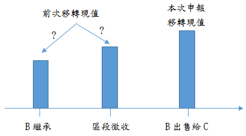

年度合輯：2019 年¶
共收錄 101 篇文章。
1. 違章工廠之處理-全國國土計畫¶
發布日期: 2019-01-03
各位同學2019新年愉快
今日專欄幫各位說明土地政策與土地利用、土地經濟學重要考試內容：「未登記工廠之指導原則」，提供作為各位在考試回答之參考。
全國國土計畫中提到由於非都市土地多為現況編定，並未整體規劃農業產製儲銷空間、都市及產業發展用地，隨著國內社會經濟發展結構轉變，因農業在經濟產值方面相對弱勢，使得農地轉為非農業使用情形普遍。農地變更以國家重大建設為主，特別是新訂或擴大都市計畫、非都市工業區及交通建設等。另外，農地上興建農舍及違規使用（如未登記工廠）普遍增加，亦嚴重影響農地資源及生產環境。
根據工廠管理輔導法之規定，經濟部公告186區特定地區推動合法化過程，須先將土地使用分區從「特定農業區」改為「一般農業區」，接著再變更編定為丁種建築用地，但合法化過程中面臨許多問題，甚至似又使農地交易獲得一線生機，投機行為又再出現。
為解決上述問題，全國國土計畫針對未登記工廠土地使用指導原則如下：
• 一、掌握未登記工廠資訊，擬定直轄市、縣（市）未登記工廠管理（輔導及清理）計畫：
直轄市、縣（市）政府應辦理未登記工廠資訊調查作業，建立未登記工廠數量、區位、面積、產業種類等，並擬定直轄市、縣（市）未登記工廠管理（輔導及清理）計畫，進行未登記工廠分級分類輔導。對於零星、新增之未登記工廠，優先依法令其變更使用、停止使用或拆除恢復原狀等，以保護農業生產環境完整性及遏止未登記工廠新增情形。
• 二、輔導轉型或遷廠原則：
針對非屬低污染產業或無法輔導廠地合法使用者，產業主管機關以按下列措施優先輔導為原則：
-
輔導轉型：轉導轉型為符合所屬國土功能分區分類下容許使用範疇之產業使用。
-
輔導遷廠：無法輔導其轉型經營者，配合產業主管機關各項土地優惠措施及廠地供給資訊，遷移至合法產業園區（或產業用地）及其他可供設廠土地。
• 三、輔導土地合理及合法使用
-
屬聚集達一定規模以上或在地產業鏈結程度高之既存未登記工廠聚落，經產業主管機關認定符合中央或地方產業發展需求、具有優先輔導合法必要者，得輔導土地合理及合法使用。經產業主管機關認定非屬低污染產業者，優先朝輔導遷廠或轉型方式處理。
-
產業主管機關應先查核未登記工廠聚落是否符合產業政策、鄰近產業園區（或產業用地）供給及產業園區規劃配合情形，以及是否符合所訂未登記工廠分級分類輔導措施。
-
以不影響整體農業生產環境為前提，且避免位於符合農業發展地區第一類或國土保育地區第一類劃設條件之區位。如屬上述區位者，優先朝輔導轉型成與所屬國土功能分區分類相容之產業或輔導遷廠方式辦理。
-
土地開發方式：
-
循都市計畫檢討、變更或新訂擴大都市計畫或依本法使用許可程序辦理為原則，不符所屬國土功能分區分類者，先依法完成國土功能分區分類檢討變更程序後始得為之。
-
依法需辦理環境影響評估、實施水土保持之處理（維護）及其他法令另有規定者，依環境影響評估法、水土保持法及其他法令規定辦理。
-
依本法使用許可程序辦理者，應符合前述安全性、公平性、合理性等原則。
-
公告特定地區內未登記工廠之處理：位於依工廠管理輔導法第33條公告特定地區內未登記工廠，並依區域計畫法及相關法規變更為一般農業區丁種建築用地及其他使用地者，直轄市、縣（市）主管機關得按原使用地性質編定為適當使用地。如未來有擴大使用需求時，依本法相關規定辦理。
簡單來說，就是
-
先擬定計畫，調查資料，作為執行基礎。
-
零星、新增，強制變更、停止予拆除，避免繼續新增。
-
與分區不相容或污染高者：
-
輔導轉型為相容類型
-
輔導遷廠
4. 聚集一定規模或產業在地產業鏈結程度高之聚落，經認定有必要，得有條件輔導土地合理及合法使用¶
注：本文圖片存放於 ./images/ 目錄下
2. 權利清理（抵押權）實例研習¶
發布日期: 2019-01-03
法規可能已修正
本文發布（2019-01-03）後，文中引用的 都市更新條例第40條（2019-01-30 修正）有修正，內容可能與現行規定不同，請以全國法規資料庫的現行條文為準。
甲、乙、丙、丁四人分別在A、B、C、D四宗土地上存在抵押權。當A地進行一般徵收，B地進行區段徵收，C地進行市地重劃，D地進行都市更新權利變換，則甲、乙、丙、丁四人所擁有之抵押權如何處理或保障？
• (一) A地進行一般徵收：土地徵收條例第36條規定：「被徵收之土地或建築改良物原設定之他項權利因徵收而消滅。其款額計算，該管直轄巿或縣（巿）主管機關應通知當事人限期自行協議，再依其協議結果代為清償；協議不成者，其補償費依第二十六條規定辦理。」準此，甲在A地上存在抵押權，A地進行一般徵收時，抵押權消滅。抵押權價額由A地所有權人與抵押權人甲協議定之。
-
倘協議成立，抵押權價額由主管機關發給地價補償時代為扣交。換言之，主管機關將抵押權價額發給抵押權人甲，再將地價補償金額扣除抵押權價額之餘額發給A地所有權人。
-
倘協議不成立，主管機關將地價補償金額存入土地徵收補償保管專戶。俟日後協議成立，再領取之。
• (二) B地進行區段徵收：土地徵收條例第42條規定：「土地所有權人申請發給抵價地之原有土地上設定有抵押權或典權者，原土地所有權人及該他項權利人得申請於發給之抵價地設定抵押權或典權，申請時並應提出同意塗銷原有土地抵押權或典權之證明文件。依前項規定於發給之抵價地設定抵押權或典權，其權利範圍、價值、次序等內容，由原土地所有權人及他項權利人協議定之。依第一項設定之抵押權或典權，應於抵價地登記時，同時登記；並應於登記後通知該他項權利人。」準此，乙在B地上存在抵押權，B地進行區段徵收時，得由B地所有權人與抵押權人乙協議於發給之抵價地上設定新的抵押權。
• (三) C地進行市地重劃：平均地權條例施行細則第91條第1項前段規定：「重劃前土地已設定他項權利而於重劃後分配土地者，主管機關應於辦理土地權利變更登記前，邀集權利人協調，除協調結果該權利消滅者外，應列冊送由該管登記機關按原登記先後轉載於重劃後分配之土地。」又，平均地權條例施行細則第92條規定：「依本條例第六十四條之一規定實施重劃未受分配之土地上原設定抵押權或典權之權利價值，主管機關應於重劃分配確定之日起二個月內，邀集權利人協調，達成協議者，依其協議結果辦理；協議不成者，應將土地所有權人應得補償地價提存之，並列冊送由該管登記機關逕為塗銷登記。」準此，丙在C地上存在抵押權，C地進行市地重劃時，除雙方協調結果抵押權消滅者外，採轉載存續處理。另，倘重劃後未受分配土地時，主管機關邀集權利人協調，協議成立者，則按協議結果辦理；協議不成者，則將補償地價提存。
• (四) D地進行都市更新權利變換：都市更新條例第40條規定：「權利變換範圍內土地及建築物經設定抵押權、典權或限制登記，除自行協議消滅者外，由實施者列冊送請各級主管機關囑託該管登記機關，於權利變換後分配土地及建築物時，按原登記先後，登載於原土地或建築物所有權人應分配之土地及建築物；其為合併分配者，抵押權、典權或限制登記之登載，應以權利變換前各宗土地或各幢（棟）建築物之權利價值，計算其權利價值。土地及建築物依第三十一條第三項及第三十六條第二項規定辦理補償時，其設有抵押權、典權或限制登記者，由實施者在不超過原土地或建築物所有權人應得補償之數額內，代為清償、回贖或提存後，消滅或終止，並由實施者列冊送請各級主管機關囑託該管登記機關辦理塗銷登記。」準此，丁在D地上存在抵押權，D地進行都市更新權利變換時，除自行協調消滅者外，採轉載存續處理。¶
注：本文圖片存放於 ./images/ 目錄下
3. 土地法與租賃住宅市場發展及管理條例之異同¶
發布日期: 2019-01-10
法規可能已修正
本文發布（2019-01-10）後，文中引用的 租賃住宅市場發展及管理條例第10條（2023-02-08 修正）有修正，內容可能與現行規定不同，請以全國法規資料庫的現行條文為準。
各位同學新年好
租賃住宅市場發展及管理條例於去年6月施行，該法如同我上課強調，真的在地特四等中考出，因而同學在準備土地法房屋租用部分，請加強準備該條例！
今日專欄就「土地法第100條」與「租賃住宅市場發展及管理條例第10條」兩者都有規定出租人提前終止租賃契約之情形，以下針對兩者之異同幫各位同學彙整說明如下：
• (一) 適用情形相同處：
-
契約類型前者（土地法）除第一款僅適用不定期租賃契約外，其餘各款與後者相同皆適用定期或不定期租賃契約。
-
適用情形
-
承租人損壞出租人之房屋或附著財物，而不為相當之賠償。
-
承租人以房屋供違反法令之使用時。
-
承租人違反租賃契約時。
• (二) 相異處：
-
重新建築：出租人為重新建築而必要收回時，前者（土地法）僅適用不定期之租賃契約；後者適用定期或不定期之租賃契約。
-
轉租：前者規定規定承租人違反民法第四百四十三條第一項之規定轉租於他人時，亦即有表示反對之約定卻仍轉租方才得以提前終止；後者則承租人未經出租人書面同意，將租賃住宅轉租於他人。換言之，後者較為嚴格。
3. 欠租：前者規定承租人積欠租金額，先以擔保金抵償外，達二個月以上時方得終止，亦即積欠四個月租金額；後者則基於擔保金目的非在於擔保租賃關係存續中承租人之租金債務，故計算積欠租金額時，並不得以押金抵償。¶
注：本文圖片存放於 ./images/ 目錄下
4. 優先購買權實例研習(一)¶
發布日期: 2019-01-10
甲、乙二人共有一筆土地，應有部分各二分之一。甲擬將其應有部分二分之一出售，就將自己所定價格通知乙，是否符合優先購買權之通知要件？又，甲與丙簽訂買賣契約，買賣價格1,000萬元，並就買賣條件通知乙。乙嫌價格太貴，主張願以900萬元優先購買，則效力如何？最後，乙願以1,000萬元優先購買，惟付款條件與買賣契約不同，其效力又如何？
【解答】
• (一) 土地法第34條之1第4項優先購買權之通知，須以所有權人與第三人有買賣契約之存在於要件，不得僅以自己所定價格通知優先購買權人。是以，甲將自己所定價格通知乙，不符合土地法第34條之1第4項優先購買權之通知要件。
• (二) 乙嫌買賣價格太貴，主張願以900萬元優先購買，等同拒絕優先購買。
• (三) 土地法第34條之1第4項規定：「共有人出賣其應有部分時，他共有人得以同一價格共同或單獨優先承購。」所稱同一價格，指同一條件而言。準此，乙願以同一價格1,000萬元優先購買，惟付款條件與買賣契約不同，等同拒絕優先購買。¶
注：本文圖片存放於 ./images/ 目錄下
5. 釋字第774號¶
發布日期: 2019-01-17
法規可能已修正
本文發布（2019-01-17）後，文中引用的 都市更新條例（2019-01-30 修正）有修正，內容可能與現行規定不同，請以全國法規資料庫的現行條文為準。
各位同學好
最近與地政考試相關的修法、司法院釋字不斷阿，各位同學必須更新這些最新的內容，絕對是今年考試重點！
今日專欄為各位同學簡單提點一下，司法院釋字774號有關都市計畫個別變更範圍外人民之救濟案的幾個會考試的重點，至於較詳細之內容，將於後期專欄或上課中說明：
• 一、本解釋意旨為何？
-
都市計畫個別變更範圍外之人民，如因都市計畫個別變更致其權利或法律上利益受侵害，得提出行政救濟。
-
本件解釋於釋字156、742號後，更進一步肯定在都市計畫個別變更之情形，所稱人民不以個別變更範圍內之人民為限，並包括變更範圍外其權利或法律上利益受侵害（包括增加其負擔）者在內。亦即個別變更範圍外，主張其權利或法律上之利益受侵害之人民亦得就該都市計畫之個別變更不服，對之提起行政訴訟，即具爭訟適格（資格）。
• 二、憲法第16條保障人民訴訟權為何？
係指人民於其權利或法律上利益遭受侵害時，有請求法院救濟之權利。基於有權利即有救濟之憲法原則，人民權利或法律上利益遭受侵害時，必須給予向法院提起訴訟，請求依正當法律程序公平審判，以獲及時有效救濟之機會。
• 三、何謂保護規範理論
界定利害關係第三人範圍之基準，認定誰能作為行政訴訟的當事人。
• 三、其他相似案件（日照權、環境、景觀、防災）
- 行政法院體系在建築執照案件、都市更新案件爭訟中，也普遍肯認主張其日照權受侵害之鄰人之爭訟救濟資格。
2. 都市更新所涉及之建築基地容積獎勵與鄰近地區建築物之量體、造型、色彩、座落方位之平衡、調和，認定都市更新條例之保護範圍及於更新範圍外鄰近地區居民之環境、景觀、防災等權益。¶
注：本文圖片存放於 ./images/ 目錄下
6. 優先購買權實例研習(二)¶
發布日期: 2019-01-17
法規可能已修正
本文發布（2019-01-17）後，文中引用的 土地登記規則第97條（2019-12-09 修正）有修正，內容可能與現行規定不同，請以全國法規資料庫的現行條文為準。
甲、乙二人共有一筆位於農地重劃區內之特定農業區農牧用地。應有部分相等。該土地上存在丙之三七五租約，目前由乙耕作使用，其毗鄰耕地之現耕所有權人分別為丁、戊、己三人。嗣甲將其應有部分二分之一出售於庚時，請問：(一)何人有優先購買權？優先購買權之順序為何？各優先購買權之效力為何？(二)各優先購買權人於回覆期限內均不表示者，甲與庚會同辦理買賣所有權移轉登記，應檢附何種證明文件？
【解答】
• (一) 本題之土地屬於農地重劃區之耕地。農地重劃條例第5條規定：「重劃區內耕地出售時，其優先購買權之次序如左：一、出租耕地之承租人。二、共有土地現耕之他共有人。三、毗連耕地之現耕所有權人。」準此，出租耕地之承租人丙、共有耕地現耕共有人乙及毗鄰耕地之現耕所有權人丁、戊、己等五人均有優先購買權。
• (二) 優先購買權順序首先為丙；若丙不優先購買，再輪到乙；若乙不優先購買，再輪到丁、戊、己，並由丁、戊、己三人抽籤決定一人優先購買。
• (三) 丙之優先購買權有物權效力，乙之優先購買權有債權效力，丁、戊、己之優先購買權有債權效力。
• (四) 土地登記規則第97條第1項及第2項規定：「 申請土地權利移轉登記時，依民法物權編施行法第八條之五第三項、第五項、土地法第三十四條之一第四項、農地重劃條例第五條第二款、第三款或文化資產保存法第二十八條規定之優先購買權人已放棄優先購買權者，應附具出賣人之切結書，或於登記申請書適當欄記明優先購買權人確已放棄其優先購買權，如有不實，出賣人願負法律責任字樣。依民法第四百二十六條之二、第九百十九條、土地法第一百零四條、第一百零七條、耕地三七五減租條例第十五條或農地重劃條例第五條第一款規定，優先購買權人放棄或視為放棄其優先購買權者，申請人應檢附優先購買權人放棄優先購買權之證明文件；或出賣人已通知優先購買權人之證件並切結優先購買權人接到出賣通知後逾期不表示優先購買，如有不實，願負法律責任字樣。」準此，丙於回覆期限內不表示者，視為放棄優先購買權，故應檢附出賣人甲已通知優先購買權人丙之證件並切結優先購買權人丙接到出賣通知後逾期不表示優先購買，如有不實，願負法律責任字樣。又，乙、丁、戊、己於回覆期限內不表示者，視為放棄優先購買權，故應檢附出賣人甲之切結書，或於登記申請書適當欄記明優先購買權人確已放棄其優先購買權，如有不實，出賣人願負法律責任字樣。¶
注：本文圖片存放於 ./images/ 目錄下
7. 信賴保護原則¶
發布日期: 2019-01-24
法規可能已修正
本文發布（2019-01-24）後，文中引用的 國土計畫法第45條（2025-01-20 修正）有修正，內容可能與現行規定不同，請以全國法規資料庫的現行條文為準。
各位同學好
去年地特考到國土法第32條有關補償的相關學說理論，其中，一部分涉及到我們上課一開始就會先講的重要行政法原則「信賴保護原則」。
實際上，根據國土計畫法第45條規定，區域計畫法將於國土功能分區圖公告之日（同時完成使用地編定）就會停止適用，其也將涉及法規制度變動而造成既有權益之影響，而涉及信賴保護之概念。因此，今日專欄就幫各位同學再稍微提醒相關重要概念：
• 一、意義
人民對公權力行使結果所生之合理信賴，法律自應予以適當保障。信賴利益保護基本上源於憲法保障人民對「法安定性的信賴」及憲法對「財產權保障」之規定。因此，行政程序法第8條規定，行政行為，應以誠實信用之方法為之，並應保護人民正當合理之信賴。
• 二、要件
-
信賴基礎：國家對外所有行為均得為人民之信賴基礎，包含行政、立法、司法積極表現在外之作為。
-
信賴表現：基於對公權力之信任而積極為日常生活安排與財產運用。表現行為與信賴基礎兩者間有客觀因果關係。
-
信賴值得保護：原則上，人民信賴均值得保護，除非有行政程序法§119所列舉之情事，如詐欺、脅迫或賄賂。
• 三、法律效果（針對有關國土法之法規變更的信賴保護而言）
行政法規公布施行後，制定或發布法規之機關依法定程序予以修改或廢止時，應兼顧規範對象信賴利益之保護。除法規預先定有施行期間或因情事變遷而停止適用，不生信賴保護問題外，其因公益之必要廢止法規或修改內容致人民客觀上具體表現其因信賴而生之實體法上利益受損害，應採取合理之補救措施，或訂定過渡期間之條款，俾減輕損害，方符憲法保障人民權利之意旨(釋字§525)。¶
注：本文圖片存放於 ./images/ 目錄下
8. 土地徵收實例研習¶
發布日期: 2019-01-24
甲有一筆既成道路。試問：(一)何謂既成道路？既成道路之構成要件為何？(二)甲對此一既成道路之權利行使有何限制？(三)政府在甲之既成道路埋設地下設施物，應否給予補償？(四)政府可否僅徵收都市計畫道路用地，而對附近既成道路不予徵收？
【解答】
• (一) 既成道路之意義：指私有土地成為道路，如供公眾通行，已經歷數十年之久，則因時效完成而存在公用地役關係。所謂公用地役關係，係私有土地而具有公共用物性質之法律關係。
• (二) 既成道路之構成要件：依司法院釋字第400號解釋理由書，既成道路之構成要件有三：
-
須為不特定之公眾通行所必要，而非僅為通行之便利或省時。
-
於公眾通行之初，土地所有權人並無阻止之情事。
-
須經歷年代久遠而未曾中斷，所謂年代久遠雖不必限定其期間，但仍應以時日長久，一般人無復記憶其確實之起始，僅能知其梗概（例如始於日據時期、八七水災等）為必要。
• (三) 對既成道路權利行使之限制：私人仍保有該土地之所有權，但其所有權之行使應受相當限制，不得違反供公眾通行之目的。
• (四) 司法院釋字第440號解釋(節錄)：「主管機關對於既成道路或都市計畫道路用地，在依法徵收或價購以前埋設地下設施物妨礙土地權利人對其權利之行使，致生損失，形成其個人特別之犧牲，自應享有受相當補償之權利。」準此，政府在甲之既成道路埋設地下設施物，應給予補償。
• (五) 司法院釋字第400號解釋(節錄)：「既成道路符合一定要件而成立公用地役關係者，其所有權人對土地既已無從自由使用收益，形成因公益而特別犧牲其財產上之利益，國家自應依法律之規定辦理徵收給予補償，各級政府如因經費困難，不能對上述道路全面徵收補償，有關機關亦應訂定期限籌措財源逐年辦理或以他法補償。若在某一道路範圍內之私有土地均辦理徵收，僅因既成道路有公用地役關係而以命令規定繼續使用，毋庸同時徵收補償，顯與平等原則相違。」準此，政府不得僅徵收都市計畫道路用地，而對附近既成道路不予徵收。¶
注：本文圖片存放於 ./images/ 目錄下
9. 三七五租佃實例研習¶
發布日期: 2019-01-31
甲在乙之耕地上有三七五租約，租期六年，試問：(一)乙收取之地租租額有何限制？(二)租期屆滿時，在何種情況下，乙不得收回自耕？(三)租期屆滿時，乙以擴大家庭農場經營規模為由而收回自耕，應符合何種條件?甲可否要求補償？(四)甲與乙間因終止租約發生爭議，可否直接起訴？(五)該耕地變更為住宅用地，乙可否終止租約收回耕地，若乙終止租約收回耕地，應給予甲何種補償？乙終止租約收回耕地經一年後未建築使用，將受到何種制裁？
【解答】
• (一) 耕地三七五減租條例第2條第1項規定：「耕地地租租額，不得超過主要作物正產品全年收穫總量千分之三百七十五；原約定地租超過千分之三百七十五者，減為千分之三百七十五；不及千分之三百七十五者，不得增加。」準此，乙收取之地租租額不得超過主要作物正產品全年收穫總量千分之三百七十五。
• (二) 耕地三七五減租條例第19條第1項規定：「耕地租約期滿時，有左列情形之一者，出租人不得收回自耕：一、出租人不能自任耕作者。二、出租人所有收益足以維持一家生活者。三、出租人因收回耕地，致承租人失其家庭生活依據者。」準此，租期屆滿時，有前揭三種情形之一，乙不得收回自耕。
• (三) 耕地三七五減租條例第19條第2項及第3項規定：「出租人為擴大家庭農場經營規模，得收回與其自耕地同一或鄰近地段內之耕地自耕，不受前項第二款規定之限制。出租人依前項規定收回耕地時，準用第十七條第二項規定補償承租人。」又，司法院釋字第580號解釋（節錄）：「七十二年十二月二十三日增訂之減租條例第十九條第三項規定，耕地租約期滿時，出租人為擴大家庭農場經營規模、提升土地利用效率而收回耕地時，準用同條例第十七條第二項第三款之規定，應以終止租約當期土地公告現值扣除土地增值稅餘額後之三分之一補償承租人。惟契約期滿後，租賃關係既已消滅，如另行課予出租人補償承租人之義務，自屬增加耕地所有權人不必要之負擔，形同設置出租人收回耕地之障礙，與鼓勵擴大家庭農場經營規模，以促進農業現代化之立法目的顯有牴觸。況耕地租約期滿後，出租人仍須具備自耕能力，且於承租人不致失其家庭生活依據時，方得為擴大家庭農場經營規模而收回耕地。按承租人之家庭生活既非無依，竟復令出租人負擔承租人之生活照顧義務，要難認有正當理由。是上開規定準用同條例第十七條第二項第三款部分，以補償承租人作為收回耕地之附加條件，不當限制耕地出租人之財產權，難謂無悖於憲法第一百四十六條與憲法增修條文第十條第一項發展農業之意旨，且與憲法第二十三條比例原則及第十五條保障人民財產權之規定不符，應自本解釋公布日起，至遲於屆滿二年時，失其效力。」準此，租期屆滿時，乙以擴大家庭農場經營規模為由而收回自耕，須符合出租人乙得以自任耕作，且承租人甲不因被收回而失其家庭生活依據。另，甲不得要求給予收回當期之公告土地現值，減除土地增值稅餘額後之三分之一的補償，但仍得要求改良土地所支付之費用及尚未收穫農作物之價額的補償。
• (四) 耕地三七五減租條例第26條規定：「出租人與承租人間因耕地租佃發生爭議時，應由當地鄉（鎮、市、區）公所耕地租佃委員會調解；調解不成立者，應由直轄市或縣（市）政府耕地租佃委員會調處；不服調處者，由直轄市或縣（市）政府耕地租佃委員會移送該管司法機關，司法機關應即迅予處理，並免收裁判費用。前項爭議案件非經調解、調處，不得起訴；經調解、調處成立者，由直轄市或縣（市）政府耕地租佃委員會給予書面證明。」準此，甲與乙間因終止租約發生爭議，應先經調解及調處之法定必要先行程序，不得直接起訴。
• (五) 平均地權條例第76條規定：「出租耕地經依法編為建築用地者，出租人為收回自行建築或出售作為建築使用時，得終止租約。依前項規定終止租約，實際收回耕地屆滿一年後，不依照使用計畫建築使用者，直轄市或縣（市）政府得照價收買之。」又，平均地權條例第77條第1項規定：「耕地出租人依前條規定終止租約收回耕地時，除應補償承租人為改良土地所支付之費用及尚未收穫之農作改良物外，應就申請終止租約當期之公告土地現值，預計土地增值稅，並按該公告土地現值減除預計土地增值稅後餘額三分之一給予補償。」準此，該耕地變更為住宅用地，乙可以收回耕地。乙收回耕地，應給予甲三種補償，即①改良土地所支付之費用；②尚未收穫之農作改良物之價額；③終止租約當期之公告土地現值減除預計土地增值稅後餘額三分之一。另，乙收回耕地經一年後未建築使用，直轄市或縣（市）政府得採照價收買予以制裁。所稱照價收買之「價」，指公告土地現值。¶
注：本文圖片存放於 ./images/ 目錄下
10. 更正登記的要件¶
發布日期: 2019-01-31
各位同學好
今日專欄為各位同學說明，有關更正登記之意義與要件：
• 一、意義
• (一) 登記人員或利害關係人於登記完畢後，發現登記錯誤或遺漏，向該管登記機關申辦更正所為之登記。
• (二) 土地法第68條第一項及第69條所稱登記錯誤，係指登記事項與登記原因證明文件所載之內容不符者；所稱遺漏，係指應登記事項而漏未登記者。(登§13)
• 二、要件
• (一) 形式
-
登記人員、利害關係人申請。
-
登記完畢。
-
書面向上級機關申請核准。
-
須經有利害關係之第三人同意。
• (二) 實質
-
登記有錯誤、遺漏。
-
不妨礙原登記之同一性(更正後不發生原權利人權利、義務之變動)。
申請更正登記，如更正登記後之權利主體、種類、範圍或標的與原登記原因證明文件所載不符者，有違登記之同一性，應不予受理。（更正登記法令補充規定第6點）¶
注：本文圖片存放於 ./images/ 目錄下
11. 各種政策地價之說明¶
發布日期: 2019-02-14
各位同學們新年好
這邊先祝各位同學考運亨通，諸事大吉！因有同學問到各種政策地價之差異，本週專欄為各位同學整理與說明如下：
-
區段地價：評定公告地價與公告土地現值之依據。(平§15、46)
-
公告地價：申報地價之參考。(平§16)
-
公告現值：申報移轉現值之參考。
-
申報地價：課徵地價稅之依據。(平§17)
-
申報移轉現值：課徵土地增值稅之依據。(平§47、47-1；土稅§30)
-
徵收補償市價：地價補償依據。(土徵§30)
-
被徵收之土地，應按照徵收當期之市價補償其地價。在都市計畫區內之公共設施保留地，應按毗鄰非公共設施保留地之平均市價補償其地價。
-
前項市價，由直轄市、縣（市）主管機關提交地價評議委員會評定之。
-
各直轄市、縣（市）主管機關應經常調查轄區地價動態，每六個月提交地價評議委員會評定被徵收土地市價變動幅度，作為調整徵收補償地價之依據。
7. 市場正常交易價格：市場實際成交價格，由買賣雙方基於自由意思，合意決定之價格(平§47)。權利人應於買賣案件辦竣所有權移轉登記三十日內，向主管機關申報登錄土地及建物成交案件實際資訊。¶
注：本文圖片存放於 ./images/ 目錄下
12. 地籍圖重測實例研習¶
發布日期: 2019-02-14
甲有一筆土地，地政機關實施地籍圖重測，通知甲自行設立界標並到場指界，甲置之不理。經重測結果，甲的原有土地面積減少10平方公尺。請問：(一)地政機關是如何施測？(二)甲於公告期間提出異議，並申請複丈，地政機關應如何處理？(三)重測結果於何時確定？確定後辦理何種土地登記？(四)甲認為測量結果有錯誤，如何救濟？
【解答】
• (一) 土地法第46條之2第1項規定：「重新實施地籍測量時，土地所有權人應於地政機關通知之限期內，自行設立界標，並到場指界。逾期不設立界標或到場指界者，得依左列順序逕行施測：一、鄰地界址。二、現使用人之指界。三、參照舊地籍圖。四、地方習慣。」準此，甲未設立界標或到場指界，地政機關依①鄰地界址；②現使用人之指界；③參照舊地籍圖；④地方習慣等順序逕行施測。
• (二) 土地法第46條之3第1項及第2項規定：「重新實施地籍測量之結果，應予公告，其期間為三十日。土地所有權人認為前項測量結果有錯誤，除未依前條之規定設立界標或到場指界者外，得於公告期間內，向該管地政機關繳納複丈費，聲請複丈。經複丈者，不得再聲請複丈。」準此，甲未設立界標或到場指界，地政機關不予複丈。
• (三) 土地法第46條之3第3項規定：「逾公告期間未經聲請複丈，或複丈結果無誤或經更正者，地政機關應即據以辦理土地標示變更登記。」本題，甲未設立界標及到場指界，地政機關不予複丈。因此重測結果於公告期間屆滿即行確定，地政機關據以辦理土地標示變更登記。
• (四) 重測結果經辦竣土地標示變更登記後，甲得向法院提起民事訴訟，以為救濟。¶
注：本文圖片存放於 ./images/ 目錄下
13. 信託財產不屬於受託人遺產¶
發布日期: 2019-02-21
各位同學好
之前已常強調現今考試趨勢為案例式，可參去年地政士考試。因而，今日專欄為各位同學說明「信託財產獨立性」中有關「信託財產不屬於受託人遺產」之概念：
案例：
甲將名下A不動產信託給乙，請乙幫忙管理該不動產，並約定將每個月租金交付給其兒子丙。然而，人算不如天算，乙認真負責管理該不動產5年後不幸死亡，其繼承人丁認真負責的繼續幫忙甲管理不動產，試問甲是否得以請求丁返還該不動產？
說明：
首先，根據信託法第10條規定，受託人死亡時，信託財產不屬於其遺產。其概念為信託財產有其獨立性，名義上雖屬受託人所有，惟並非其自有財產，故於受託人死亡時，不能將之列入其遺產，使成繼承之標的。再者，信託是基於委託人對於受託人之強烈信賴關係而成立，故當受託人死亡，其職責亦隨之而終止，無法由其繼承人繼承。換言之，委託人可以向受託人之繼承人請求其返還信託物，此時僅生受託人之任務終了，由指定或選任之新受託人接任處理信託事務。
綜此，本題案例中，委託人甲將名下A不動產信託給受託人乙後，受託人乙死亡後信託任務即結束，得由甲請求丁返還該不動產，並交由指定或選任之新受託人接任處理信託事務。¶
注：本文圖片存放於 ./images/ 目錄下
14. 登記絕對效力實例研習¶
發布日期: 2019-02-21
甲偽造所有權狀，將乙之土地移轉登記於甲名下。之後，甲再將該土地出售於不知情之丙。不久，乙察覺並向丙請求返還土地，丙可否拒絕？又，乙向地政機關請求損害賠償，地政機關可否拒絕？
【解答】
• (一) 土地法第43條規定：「依本法所為之登記，有絕對效力。」準此，丙信賴土地登記簿記載所取得之權利，具有不可推翻之效力。換言之，丙得拒絕返還土地。
• (二) 土地法第68條第1項規定：「因登記錯誤遺漏或虛偽致受損害者，由該地政機關負損害賠償責任。但該地政機關證明其原因應歸責於受害人時，不在此限。」換言之，因登記錯誤遺漏或虛偽致受損害者，除該地政機關證明其原因應歸責於受害人外，應由該地政機關負起無過失之賠償責任。準此，本題因登記虛偽致乙受到損害，地政機關應負賠償責任。除非：
- 其原因可歸責於受害人乙，地政機關不負損害賠償責任。
2. 逾請求權時效，地政機關得拒絕損害賠償請求。¶
注：本文圖片存放於 ./images/ 目錄下
15. 都市更新實施者¶
發布日期: 2019-02-26
各位同學好
都市更新條例於今年 1 月 30 日公布施行， 2 月 1 日生效於台北、台中都將有講座為各位從頭到尾解說歡迎各位同學報名參加
本日專欄先為各位說明「都市更新之實施方式
首先都市更新條例第 43 條第 1 項規定：都市更新事業計畫範圍內重建區段之土地，以權利變換方式實施之。但由主管機關或其他機關辦理者，得以徵收、區段徵收或市地重劃方式實施之；其他法律另有規定或經全體土地及合法建築物所有權人同意者，得以協議合建或其他方式實施之。
可依據都市更新主導者予以整理劃分如下：
( 一 ) 政府主導都市更新＝公辦都更（主管機關或其他機關辦理）
-
權利變換
-
協議合建
-
徵收
-
區段徵收
-
市地重劃
-
其他方式 ：信託 ( 都更 § 2 5)
( 二 ) 所有權人自行或委託實施＝私辦都更
-
權利變換
-
協議合建
3. 其他方式 ：如信託、自辦市地重劃¶
注：本文圖片存放於 ./images/ 目錄下
16. 優先購買權實例研習(三)¶
發布日期: 2019-03-07
甲在乙的土地上有三七五租約，乙擬將其土地出典於丙，甲是否有優先承受權？若丙設定典權登記後，乙擬將其土地出售於丁，何人有優先購買權？
【解答】
• (一) 耕地三七五減租條例第15條規定：「耕地出賣或出典時，承租人有優先承受之權，出租人應將賣典條件以書面通知承租人，承租人在15日內未以書面表示承受者，視為放棄。出租人因無人承買或受典而再行貶價出賣或出典時，仍應照前項規定辦理。出租人違反前二項規定而與第三人訂立契約者，其契約不得對抗承租人。」準此，乙出典時，甲有優先承典權。
• (二) 乙出售土地時，甲依據耕地三七五減租條例第15條有優先購買權，丙依據民法第919條有優先購買權。二者皆具有物權效力。二者競合時，依成立先後，定其優先順序。因此，甲之優先購買權優先於丙。¶
注：本文圖片存放於 ./images/ 目錄下
17. 更新單元之意義¶
發布日期: 2019-03-07
各位同學好
都市更新條例修法後將會是高普考、估價師考試重點。因此，今天專欄為各位整理與說明實際在進行更新事業的重要範圍－「更新單元」
首先，請先將非常重要的兩條條文背熟：
-
經劃定或變更應實施更新之地區，其土地及合法建築物所有權人得就主管機關劃定之更新單元，或依所定更新單元劃定基準自行劃定更新單元，舉辦公聽會，擬具事業概要，連同公聽會紀錄，申請當地直轄市、縣（市）主管機關依第29條規定審議核准，自行組織都市更新會實施該地區之都市更新事業，或委託都市更新事業機構為實施者實施之；變更時，亦同。(都更§22I)
-
未經劃定或變更應實施更新之地區，有第6條第1款至第3款或第6款情形之一者(優先劃定：火、傾路、機、亟須保存維護)，土地及合法建築物所有權人得按主管機關所定更新單元劃定基準，自行劃定更新單元，依前條規定，申請實施都市更新事業。(都更§23I)
*更新單元劃定
• 一、意義
更新單元指可單獨實施都市更新事業之範圍(都更§3)。由於主管機關劃定更新地區通常有基本的目標、策略與再發展計畫，其範圍通常在數公頃或數十公頃，一次開發有困難，再加上雖區內大部分建物老舊，惟仍存在一些新建或無更新必要之建物，或有些整合不易，故就可掌握範圍劃為更新單元，單獨實施都市更新事業。
• 二、類型
-
更新地區內：
-
主管機關劃定之更新單元(都更§22I)
-
依主管機關所定更新單元劃定基準自行劃定更新單元(都更§22I)
-
更新地區外：按主管機關所定更新單元劃定基準自行劃定更新單元(都更§23I)
• 三、考量因素
更新單元之劃定，應考量原有社會、經濟關係及人文特色之維繫、整體再發展目標之促進、更新處理方式之一致性、公共設施負擔之公平性及土地權利整合之易行性等因素。(都更施§5)
• 四、更新單元劃定基準
主管機關訂定更新單元劃定基準，應依第6條第1款至第3款及第6款之意旨，明訂建築物及地區環境狀況之具體認定方式。¶
注：本文圖片存放於 ./images/ 目錄下
18. 區段徵收之農業專用區¶
發布日期: 2019-03-14
區段徵收範圍內規劃配設農業專用區，其規劃與配售原則為何？
【解答】
• (一) 規劃目的：區段徵收範圍內得規劃配設農業專用區，供原土地所有權人以其已領之現金地價補償費數額申請折算配售土地，作為農業耕作使用。所稱農業專用區，指供農業耕作使用之土地使用分區。
• (二) 規劃原則：
-
需用土地人應於都市計畫規劃時，調查原土地所有權人於區段徵收後繼續從事耕作之意願，作為劃設農業專用區面積及位置之參考。
-
農業專用區規劃時，應考量都市計畫整體規劃、區段徵收財務計畫及原土地所有權人繼續從事耕作之意願。
-
配售之土地以耕作單元為規劃原則。
• 三、配售原則：
-
各級主管機關訂定配售辦法時，應會商需用土地人並邀集原土地所有權人舉行土地配售說明會，且應於徵收公告時，於公告事項內載明欲申請配售農業專用區土地之原土地所有權人，應選擇領取現金補償。
-
區段徵收範圍內農業專用區土地之配售，以公開抽籤及自行選擇配售街廓為原則。
-
耕作單元配售之價格得加計劃設農業專用區所需興闢之農水路設施費用。
4. 申請配售之原土地所有權人其已領取之現金地價補償費數額應大於其申請配售之耕作單元總地價。¶
注：本文圖片存放於 ./images/ 目錄下
19. 都市更新事業計畫同意比例¶
發布日期: 2019-03-14
法規可能已修正
本文發布（2019-03-14）後，文中引用的 土地法第73條之1（2022-06-22 修正）有修正，內容可能與現行規定不同，請以全國法規資料庫的現行條文為準。
各位同學好
本週專欄繼續幫各位整理最新修正的都市更新條例考試重點。
首先，都市更新有『四大計畫、兩大地區』，同學應先將相關概念與程序分清楚：
四大計畫
-
都市更新計畫
-
都市更新事業概要
-
都市更新事業計畫
-
實施計畫－以權利變換計畫為多
二大地區
-
更新地區
-
更新單元
其中，四大計畫中須經更新審議會審查者：事業概要、事業計畫、權變計畫須達一定比例同意者：事業概要、事業計畫
今日專欄主要為各位同學整理本次修法改動幅度大的事業計畫同意比例：
• 一、同意比率門檻
-
原則：實施者擬訂或變更都市更新事業計畫報核時，應經一定比率之私有土地與私有合法建築物所有權人數及所有權面積之同意；其同意比率依下列規定計算(都更§37I前段)：
-
依第12條規定經公開評選委託都市更新事業機構辦理者：
-
原則：應經更新單元內私有土地及私有合法建築物所有權人均超過二分之一，且其所有土地總面積及合法建築物總樓地板面積均超過二分之一之同意。
-
例外：但公有土地面積超過更新單元面積二分之一者，免取得私有土地及私有合法建築物之同意。
-
保障：實施者應保障私有土地及私有合法建築物所有權人權利變換後之權利價值，不得低於都市更新相關法規之規定。
-
依第22條規定辦理者（更新地區內）
-
迅行劃定：依第七條規定劃定或變更之更新地區，應經更新單元內私有土地及私有合法建築物所有權人均超過二分之一，且其所有土地總面積及合法建築物總樓地板面積均超過二分之一之同意。
-
一般、優先劃定：其餘更新地區，應經更新單元內私有土地及私有合法建築物所有權人均超過四分之三，且其所有土地總面積及合法建築物總樓地板面積均超過四分之三之同意。
-
依第二十三條規定辦理者（更新地區外-自行劃定）應經更新單元內私有土地及私有合法建築物所有權人均超過五分之四，且其所有土地總面積及合法建築物總樓地板面積均超過五分之四之同意。
-
例外：但私有土地及私有合法建築物所有權面積均超過十分之九同意者，其所有權人數不予計算(都更§37I後段)
• 二、不計入計算比率者(都更§24)
申請實施都市更新事業之人數與土地及建築物所有權比率之計算，不包括下列各款：
-
依文化資產保存法所稱之文化資產。
-
經協議保留，並經直轄市、縣(市)主管機關核准且登記有案之宗祠、寺廟、教堂。
-
經政府代管或依土地法第七十三條之一規定由地政機關列冊管理者。
-
經法院囑託查封、假扣押、假處分或破產登記者。
-
未完成申報並核發派下全員證明書之祭祀公業土地或建築物。
-
未完成申報並驗印現會員或信徒名冊、系統表及土地清冊之神明會土地或建築物。
• 三、比率計算依據
-
依第22條第2項或第37條第1項規定計算之同意比率，除有因繼承、強制執行、徵收或法院之判決於登記前取得所有權之情形，於申請或報核時能提出證明文件者，得以該證明文件記載者為準外，應以土地登記簿、建物登記簿、合法建物證明或經直轄市、縣（市）主管機關核發之證明文件記載者為準。(都更§39I)
-
前項登記簿登記、證明文件記載為公同共有者，或尚未辦理繼承登記，於分割遺產前為繼承人公同共有者，應以同意之公同共有人數為其同意人數，並以其占該公同共有全體人數之比率，乘以該公同共有部分面積所得之面積為其同意面積計算之。(都更§39II)
3. 都市更新事業得以信託方式實施之。其依規定計算所有權人人數比率，以委託人人數計算。(都更§25)¶
注：本文圖片存放於 ./images/ 目錄下
20. 聽證¶
發布日期: 2019-03-21
法規可能已修正
本文發布（2019-03-21）後，文中引用的 獎勵土地所有權人辦理市地重劃辦法第27條（2019-04-09 修正）有修正，內容可能與現行規定不同，請以全國法規資料庫的現行條文為準。
何謂聽證？試述土地徵收、土地重劃及都市更新要求舉辦聽證之規定？
【解答】
• (一) 聽證之意義：舉行聽證應依行政程序法規定辦理。由行政機關首長或其指定人員為主持人；主持人應本中立公正之立場，主持聽證。當事人於聽證時，得陳述意見，提出證據，並與對方作言詞論辯。聽證應作成紀錄，主管機關應就全部陳述與調查事實及證據之結果，並斟酌全部聽證紀錄，說明採納及不採納之理由，作成核定。
• (二) 相關規定：
-
土地徵收：土地徵收條例第10條第3項規定：「特定農業區經行政院核定為重大建設須辦理徵收者，若有爭議，應依行政程序法舉行聽證。」
-
土地重劃：
-
獎勵土地所有權人辦理市地重劃辦法第27條第1項及第2項規定：「直轄市或縣(市)主管機關受理申請核准實施市地重劃後，應檢送重劃計畫書草案，通知土地所有權人及已知之利害關係人舉辦聽證，通知應於聽證期日十五日前為之，並於機關公告欄及網站公告，公告期間自通知之日起，不得少於十五日。直轄市或縣(市)主管機關應以合議制方式審議第二十五條第一項申請案件，並應以公開方式舉行聽證，斟酌全部聽證之結果，說明採納及不採納之理由，作成准駁之決定。經審議符合規定者，應核准實施市地重劃，核准處分書應連同重劃計畫書、聽證會紀錄及合議制審議紀錄，送達重劃範圍全體土地所有權人及已知之利害關係人，並於機關公告欄及網站公告；不予核准實施市地重劃者，應敘明理由駁回。」
-
農村社區土地重劃條例第6條第1項規定：「直轄市或縣（市）主管機關依前條規定選定重劃區後，先徵詢農村社區更新協進會之意見，辦理規劃，依規劃結果擬訂重劃計畫書、圖，並邀集土地所有權人及有關人士等舉辦聽證會，修正重劃計畫書、圖，經徵得區內私有土地所有權人過半數，而其所有土地面積超過區內私有土地總面積半數之同意，報經中央主管機關核定後，於重劃區所在地鄉（鎮、市、區）公所之適當處所公告三十日；公告期滿實施之。」
3. 都市更新：都市更新條例第33條第1項規定：「各級主管機關依前條規定核定發布實施都市更新事業計畫前，除有下列情形之一者外，應舉行聽證；各級主管機關應斟酌聽證紀錄，並說明採納或不採納之理由作成核定：一、於計畫核定前已無爭議。二、依第四條第一項第二款或第三款以整建或維護方式處理，經更新單元內全體土地及合法建築物所有權人同意。三、符合第三十四條第二款或第三款之情形。四、依第四十三條第一項但書後段以協議合建或其他方式實施，經更新單元內全體土地及合法建築物所有權人同意。」¶
注：本文圖片存放於 ./images/ 目錄下
21. 更正登記不妨礙原登記同一性¶
發布日期: 2019-03-21
各位同學好
今日專欄談有關「更正登記」之概念
• 一、類型
-
核准更正：登記人員或利害關係人，於登記完畢後，發見登記錯誤或遺漏時，非以書面聲請該管上級機關查明核准後，不得更正。須不妨害原登記之同一性，亦即更正登記後，登記事項所示法律關係應與原登記者相同，不得變更。
-
逕行更正：但登記錯誤或遺漏，純屬登記人員記載時之疏忽，並有原始登記原因證明文件可稽者，由登記機關逕行更正之。
• 二、要件
更正登記之要件
-
形式要件
-
登記人員、利害關係人申請。
-
登記完畢。
-
書面向上級機關申請核准。
-
須經有利害關係之第三人同意。
-
實質要件
-
登記有錯誤、遺漏。
-
不妨礙原登記之同一性。
其中，所謂「不妨礙原登記之同一性」說明如下：
申請更正登記，如更正登記後之權利主體、種類、範圍或標的與原登記原因證明文件所載不符者，有違登記之同一性，應不予受理(更正登記法令補充規定第6點)。更正登記以不妨害原登記之同一性為限，若登記以外之人對於登記所示之法律關係有所爭執，則應訴由司法機關審判，以資解決。(更正登記法令補充規定第7點)
故不妨礙原登記之同一性，指更正登記後，登記事項所示之法律關係，應原登記相同，不得變更，即更正後不發生原權利人權利、義務之變動。¶
注：本文圖片存放於 ./images/ 目錄下
22. 信託財產獨立性¶
發布日期: 2019-03-28
各位同學好
地政士考試即將到來，今天專欄為各位整理有關信託當中，最重要的核心標的物，即「信託財產」的三大特性之一：「獨立性」，要特別注意哦！
信託財產獨立性，信託法相關條文規定如下：
• (一) 信託財產與委託人、受託人分離
-
信託關係不因委託人或受託人死亡、破產或喪失行為能力而消滅。但信託行為另有訂定者，不在此限(信§8I)。
-
委託人或受託人為法人時，因解散或撤銷設立登記而消滅者，適用前項之規定(信§8II)。
• (二) 不屬於受託人遺產
受託人死亡時，信託財產不屬於其遺產(信§10)。
• (三) 不屬於破產財團
受託人破產時，信託財產不屬於其破產財團(信§11)。
• (四) 原則不得強制執行
-
對信託財產不得強制執行。但基於信託前存在於該財產之權利、因處理信託事務所生之權利或其他法律另有規定者，不在此限(信§12I)。
-
違反前項規定者，委託人、受益人或受託人得於強制執行程序終結前，向執行法院對債權人提起異議之訴(信§12II)。
• (五) 不得相互抵銷
屬於信託財產之債權與不屬於該信託財產之債務不得互相抵銷(信§13)。
• (六) 不因混同而消滅
信託財產為所有權以外之權利時，受託人雖取得該權利標的之財產權，其權利亦不因混同而消滅(信§14)。¶
注：本文圖片存放於 ./images/ 目錄下
23. 法定空地之拋棄¶
發布日期: 2019-03-28
某建設公司(以下簡稱甲)有一塊建築基地，包含A、B二筆土地，A地為建築物本身所占之地面，B地為建築基地所留設之法定空地。當初，甲將該區分所有建築物及其坐落之A地過戶登記於購屋者；惟B地另有他用，由甲自己保留，未過戶登記於購屋者。經過數年後，甲認為持有B地，無收益可言，且每年必須繳納可觀之地價稅，遂向區分所有權人協議，由甲將B地贈與區分所有權人，惟因受贈人(即區分所有權人)須負擔土地增值稅，致區分所有權人間意見分歧，最後協議不成。今，甲擬將B地拋棄，是否可行？
【解答】
• (一) 土地登記規則第143條第3項規定：「私有土地所有權之拋棄，登記機關應於辦理塗銷登記後，隨即為國有之登記。」又，民法第764條第1項規定：「物權除法律另有規定外，因拋棄而消滅。」所稱法律另有規定，如建築法第11條第3項規定：「應留設之法定空地，非依規定不得分割、移轉，並不得重複使用。」惟上開條文僅規定分割、移轉及不得重複使用，未規定「拋棄」。另，民法第148條第1項規定：「權利之行使，不得違反公共利益，或以損害他人為主要目的。」準此，甲拋棄法定空地，違反公共利益(即建築基地留設法定空地之公共利益目的)，故不得為之。
• (二) 按建築法第11條第1項前段規定：「本法所稱建築基地，為供建築物本身所占之地面及其所應留設之法定空地。」同條第3項前段復規定：「應留設之法定空地，非依規定不得分割、移轉，並不得重複使用。」準此，法定空地係屬建築基地之一部分，所有權人將其單獨拋棄，乃屬違反建築法應保留空地以維護公同利益之規定及意旨，亦即民法第148條第1項所禁止之行為，牴觸權利濫用禁止原則，且有迂迴為脫法行為之嫌，顯與上開法條之立法精神有悖（法務部91.5.23法律字第0910018530號）。¶
注：本文圖片存放於 ./images/ 目錄下
24. 徵收補償¶
發布日期: 2019-04-03
各位同學好
今日專欄為各位同學整理有關「徵收補償的內涵」，即「相當補償」與「完全補償」之差別：
| 面向 |
|---|
| 面向 |
| 性質 |
| 定義(範圍) |
| 立場 |
| 補償基準 |
注：本文圖片存放於 ./images/ 目錄下
25. 共有土地分割之抵押權轉載及後續拍賣¶
發布日期: 2019-04-03
甲、乙、丙三人共有一筆土地，應有部分各三分之一，甲將其應有部分設定抵押權予丁。不久，甲、乙、丙三人協議分割，該地分割為A、B、C三筆，A地分歸甲取得，B地分歸乙取得，C地分歸丙取得，丁之抵押權分別轉載於A、B、C三筆土地上。今甲未清償債務，丁聲請法院拍賣，拍定人戊，則拍定後之A、B、C三筆土地之產權為何？
【解答】
• (一) 問題提出：按法理而言，拍定後，A地產權為甲之應有部分三分之二，戊之應有部分三分之一；B地產權為乙之應有部分三分之二，戊之應有部分三分之一；C地產權為丙之應有部分三分之二，戊之應有部分三分之一。如此，對乙、丙二人不利，但對甲卻有利，顯然不公平、不合理。
• (二) 司法院釋字第671號解釋：「憲法第十五條關於人民財產權應予保障之規定，旨在確保個人依財產之存續狀態行使其自由使用、收益及處分之權能，不得因他人之法律行為而受侵害。分別共有不動產之應有部分，於設定抵押權後，共有物經分割者，其抵押權不因此而受影響（民法第八百二十五條及第八百六十八條規定參照）。於分割前未先徵得抵押權人同意者，於分割後，自係以原設定抵押權而經分別轉載於各宗土地之應有部分，為抵押權之客體。是強制執行時，係以分割後各宗土地經轉載抵押權之應有部分為其執行標的物。於拍定後，因拍定人取得抵押權客體之應有部分，由拍定人與其他共有人，就該不動產全部回復共有關係，其他共有人回復分割前之應有部分，經轉載之應有部分抵押權因已實行而消滅，從而得以維護其他共有人及抵押權人之權益。準此，中華民國九十年九月十四日修正發布之土地登記規則第一百零七條之規定，符合民法規定之意旨，亦與憲法第十五條保障人民財產權之規定，尚無牴觸。」準此，拍定後，由拍定人與其他共有人，就該土地部分全部回復共有關係，其他共有人回復分割前之應有部分。故拍定後，A、B、C三筆土地之產權皆為乙之應有部分三分之一、丙之應有部分三分之一、戊之應有部分三分之一。¶
注：本文圖片存放於 ./images/ 目錄下
26. 區段徵收權利清理¶
發布日期: 2019-04-11
各位同學好
今日專欄為各位說明有關「區段徵收申請發給之抵價地，其既存於該土地上之租賃權、他項權利分別該如何處理？」
• 一、限期自行清理：土地所有權人申請發給抵價地之原有土地上訂有耕地租約或設定他項權利或限制登記者，除土地徵收條例第42條另有規定外，直轄市或縣(市)主管機關應通知申請人限期自行清理，並依規定期限提出證明文件。
• 二、清理方式則因應權利性質不同而有不同規定：
-
租賃權
-
耕地租賃權：依土地徵收條例施行細則第45條，由原土地所有權人及該耕地承租人協議終止，並提出補償承租人之證明文件。如協議不成，土地所有權人得請求主管機關邀集該承租人協調。其中，土地徵收條例對耕地承租權消滅補償金額未設規定，故適用其他法律，而依平均地權條例第55-1條規定，原有租賃關係及他項權利準用市地重劃有關規定處理，故承租人得向出租人請求按區段徵收公告當期該土地之公告土地現值1/3之補償。
-
其他出租土地：土地徵收條例並未規定，其清理方式有以下兩說：
-
採法條文義解釋：適用平均地權條例第55-1條，承租人得終止租約，並得向出租人請求相當一年租金之補償。
-
採法規體系解釋：抵價地與市地重劃後重新分配於原土地所有權人之土地「視為其原有之土地」性質不同。即法律並未將之擬制為被徵收土地之原有土地，因而並不當然繼受原有土地上之法律關係，故解釋上該租賃權因徵收而消滅，對出租人而言，係不可歸責於雙方當事人之事由致給付不能，承租人亦免對待給付之義務，雙方之法律關係因而消滅。承租人如已為全部或一部之對待給付租金者，得依民法第266條不當得利之規定請求返還。
-
他項權利
-
地上權、農育權、永佃權及不動產役權：根據土地徵收條例施行細則第45條，由原土地所有權人及該他項權利人協議終止，並提出同意塗銷他項權利之證明文件。如協議不成，土地所有權人得請求主管機關邀集該他項權利人協調。依平均地權條例第55-1條規定，原有租賃關係及他項權利準用市地重劃有關規定處理，即得請求相當補償。
2. 抵押權或典權：根據土地徵收條例第42條，土地所有權人申請發給抵價地之原有土地上設定有抵押權或典權者，原土地所有權人及該他項權利人得申請於發給之抵價地設定抵押權或典權，申請時並應提出同意塗銷原有土地抵押權或典權之證明文件。依規定於發給之抵價地設定抵押權或典權，其權利範圍、價值、次序等內容，由原土地所有權人及他項權利人協議定之。設定之抵押權或典權，應於抵價地登記時，同時登記；並應於登記後通知該他項權利人。¶
注：本文圖片存放於 ./images/ 目錄下
27. 民法第759條之法院判決¶
發布日期: 2019-04-11
下列三種情形，物權何時發生變動？(一)甲、乙、丙三人共有一筆土地，共有人不能自行協議分割，甲訴請法院判決分割。依法院判決確定分割，辦理土地登記。(二)丁將其土地出售於戊，然買賣發生糾紛，戊訴請法院請求給付土地。依法院確定判決移轉，辦理土地登記。(三)庚、辛二人共有一筆土地，共有人不能自行協議分割，庚申請直轄市、縣（市）政府機關調處。調處成立，依調處紀錄辦理登記。
【解答】
民法第759條規定：「因繼承、強制執行、徵收、法院之判決或其他非因法律行為，於登記前已取得不動產物權者，應經登記，始得處分其物權。」所稱法院之判決，指形成判決，不包括給付判決及確認判決，亦不包括其他以訴訟外紛爭解決機制（如調解、和解、仲裁、調處等）。換言之，法院之形成判決，不待登記，即發生物權變動之效果。至於給付判決、確認判決，以及調解、和解、仲裁、調處等，須俟登記完畢，始發生物權變動之效果。
• (一) 甲、乙、丙三人共有一筆土地，甲訴請法院判決分割，於法院判決確定(此判決屬於形成判決)，不待登記，即發生物權變動之效果。
• (二) 丁將其土地出售於戊，買賣發生糾紛，戊訴請法院請求對方給付土地。經法院判決確定（此判決屬於給付判決，非屬形成判決）尚未發生物權變動之效果，須俟登記完畢，始發生物權變動之效果。
• (三) 庚、辛二人共有一筆土地，庚申請直轄市、縣（市）政府機關調處分割。調處成立尚未發生物權變動之效果，須俟登記完畢，始發生物權變動之效果。¶
注：本文圖片存放於 ./images/ 目錄下
28. 抵價地與抵費地之差異¶
發布日期: 2019-04-18
各位同學好
今日專欄為各位比較區段徵收抵價地與市地重劃抵費地之差異：
• (一) 抵價地：區段徵收應給予之補償地價，得改以規劃整理後可供建築之土地，按土地所有權人應領補償地價比例折算抵付。
• (二) 抵費地：實施市地重劃時，重劃區內土地所有權人應行負擔之工程費用、重劃費用及貸款利息，由該地區土地所有權人按其土地受益比例共同負擔，並以其未建築土地折價抵付。
| 差異 | 抵費地(市地重劃) | 抵價地(區段徵收) |
|---|---|---|
| 差異 | 抵費地(市地重劃) | 抵價地(區段徵收) |
| 定義 | 抵付工程費用、重劃費用及貸款利息 | 抵付補償地價 |
| 流向 | 所有權人付給政府 | 政府發給所有權人 |
| 範圍 | 不得超過全區面積45％ | 以50％為原則；例外不得少於全區面積40％ |
| 性質 | 屬強制性質，原則上以土地抵付 | 屬任意性質，領取現金補償或申請發給抵價地 |
| 稅賦 | 減徵：於重劃後第一次移轉時， 其土地增值稅減徵40％ 免徵： 土地重劃時土地所有權人依法應負擔之公共用地及抵費 地。 於重劃區內原土地所有權人應分配之土地因未達最小分 配面積標準改領差額地價者 |
減徵：領回抵價地後第一次移轉時， 土地增值稅減徵百分之40％ 免徵： 區段徵收之土地，以現金補償其地價者。 領回抵價地不足最小建築單位面積而領取現金補償者。 以抵價地補償其地價者。 |
注：本文圖片存放於 ./images/ 目錄下
29. 登記生效、登記處分與登記對抗¶
發布日期: 2019-04-18
甲將A地贈與乙，丙之B地由丁繼承，戊向庚借錢，並以C地為抵押，且約定於債權已屆清償期而未為清償時，抵押物之所有權移屬於抵押權人。試就A地、B地及C地辦理登記之法律效果？
【解答】
• (一) A地：民法第758條第1項規定：「不動產物權，依法律行為而取得、設定、喪失及變更者，非經登記，不生效力。」準此，贈與屬於法律行為，採登記生效要件主義（即設權登記）。甲與乙之贈與契約成立，物權尚未發生變動，亦即A地所有權人仍屬於甲；須俟贈與所有權移轉登記完畢，乙始取得A地所有權。
• (二) B地：民法第759條規定：「因繼承、強制執行、徵收、法院之判決或其他非因法律行為，於登記前已取得不動產物權者，應經登記，始得處分其物權。」準此，繼承採登記處分要件主義（即宣示登記）。丙死亡之時，丁即取得B地所有權；縱未辦理繼承登記，丁仍取得B地所有權。日後，丁須辦竣繼承登記，始得將B地移轉或設定負擔於他人。
• (三) C地：分下列二種情形說明：
-
設定抵押權屬於法律行為，採登記生效要件主義（即設權登記）。戊與庚之設定抵押權契約成立，庚尚未取得抵押權；須俟抵押權設定登記完畢，庚始取得抵押權。
-
民法第873條之1第1項規定：「約定於債權已屆清償期而未為清償時，抵押物之所有權移屬於抵押權人者，非經登記，不得對抗第三人。」準此，流抵約定（或稱流押約定）採登記對抗要件主義。縱未辦理登記，流抵約定仍發生效力；唯辦理登記，始得對抗第三人。析言之：
-
流抵約定未辦理登記：若戊於債權清償期屆至之前，將C地移轉登記於辛，庚無法請求辛返還C地。
2. 流抵約定經辦理登記：若戊於債權清償期屆至之前，將C地移轉登記於辛，庚得請求辛返還C地。¶
注：本文圖片存放於 ./images/ 目錄下
30. 土地增值稅與房地合一稅之重購退稅比較¶
發布日期: 2019-04-25
各位同學好
今天專欄幫各位整理有關土地稅重購退稅之比較：
| 適用條件 | 土地增值稅 | 房地合一稅 |
|---|---|---|
| 適用條件 | 土地增值稅 | |
| 法源依據 | 土地稅法第37條 | |
| 標的物條件 | 對象 | 自用住宅用地 |
| 建物產權 | 須為本人或其配偶、直系親屬所有 | 須為本人或其配偶所有 |
| 設籍 | 土地所有權人或其配偶、直系親屬於該地辦竣戶籍登記 | 個人或其配偶、未成年子女辦竣戶籍登記並居住 |
| 狀態 | 出售前一年無出租、營業 | 出售前一年無出租、 供營業或執行業務（申報要點似未明確規定， 按財政部公布內容） |
| 重購名義(新舊所有權人) | 土地所有權人(須為同一所有權人) | |
| 重購時間 | 自完成出售移轉登記之日起算二年內重購或先購後售 | |
| 重購面積(新房地) | 都市土地未超過3公畝非都市土地未超過7公畝(舊房地 不限) |
|
| 退稅額度 | 新購土地地價超過原出售土地地價， 扣除繳納土地增值稅後之餘額者， 得向主管稽徵機關申請就其已納土地增值稅額內， 退還其不足支付新購土地地價之數額（差額退） |
|
| 退稅時效 | 10年（102.5.24後） | |
| 追繳情形 | 重購後五年內改作其他用途或再行移轉時， 應追繳原退還稅額 |
|
| 請求次數 | 不限 |
注：本文圖片存放於 ./images/ 目錄下
31. 時效取得地上權登記¶
發布日期: 2019-04-25
甲占有乙之已登記土地達二十年，並興建一間房屋居住。未久，甲向地政事務所申請時效取得地上權登記，惟無法提出以行使地上權意思而占有之證明文件，甲遂主張占有人推定其為以行使地上權之意思而占有，請問甲之主張是否合理？
【解答】
• (一) 民法第769條規定：「以所有之意思，二十年間和平、公然、繼續占有他人未登記之不動產者，得請求登記為所有人。」民法第770條規定：「以所有之意思，十年間和平、公然、繼續占有他人未登記之不動產，而其占有之始為善意並無過失者，得請求登記為所有人。」又，民法第772條規定：「前五條之規定，於所有權以外財產權之取得，準用之。於已登記之不動產，亦同。」準此，占有已登記土地主張時效取得地上權得準用民法第769條及第770條。惟以所有之意思而占有，應改為以行使地上權之意思而占有。
• (二) 民法第944條規定：「占有人推定其為以所有之意思，善意、和平、公然及無過失占有。經證明前後兩時為占有者，推定前後兩時之間，繼續占有。」準此，占有人推定其為以所有之意思而占有，然占有人不可推定其為以行使地上權之意思而占有。故本題，甲主張占有人推定其為以行使地上權之意思而占有，此主張不合理。
• (三) 土地登記規則第118條第1項規定：「土地總登記後，因主張時效完成申請地上權登記時，應提出以行使地上權意思而占有之證明文件及占有土地四鄰證明或其他足資證明開始占有至申請登記時繼續占有事實之文件。」準此，甲申請時效取得地上權登記應提出以行使地上權意思而占有之證明文件占有土地四鄰證明或其他足資證明開始占有至申請登記時繼續占有事實之文件。¶
注：本文圖片存放於 ./images/ 目錄下
32. 重劃後第一次移轉減徵之適用¶
發布日期: 2019-05-02
各位同學好
最近開始都進行各科的總複習，而今日剛好碰到同學詢問，故專欄針對土地增值稅有關重劃後領回土地減徵之適用予以提醒：
92年估價師考題：某甲參與市地重劃後配回之土地贈與其妻乙，嗣後妻乙再將該土地出售於丙。試問乙得否主張重劃後土地移轉增值稅之減徵規定？
根據土地稅法第39規定，經重劃之土地，於重劃後第一次移轉時，其土地增值稅減徵百分之四十。因此，本題甲將土地贈與其妻乙是否被認定為第一次移轉，將影響是否適用土地增值稅減徵，其情形應分述如下：
- 甲乙贈與有申請不課徵土地增值稅因有申請不課徵，該次租稅遞延，故非屬重劃後第一次移轉之情形。因此，當乙再將土地出售於丙，仍得適用土地增值稅減徵百分之四十。
2. 甲乙贈與未申請不課徵土地增值稅因未申請不課徵，該次贈與移轉即屬重劃後第一次移轉之情形，甲的土地增值稅得予減徵百分之四十。惟當乙再將土地出售於丙，即無土地增值稅之減徵。¶
注：本文圖片存放於 ./images/ 目錄下
33. 地號與建號之意涵¶
發布日期: 2019-05-02
法規可能已修正
本文發布（2019-05-02）後，文中引用的 地籍測量實施規則第233條（2023-01-13 修正）、地籍測量實施規則第289條（2023-01-13 修正）、地籍測量實施規則第234條（2023-01-13 修正）有修正，內容可能與現行規定不同，請以全國法規資料庫的現行條文為準。
（一）有一建物及其基地，基地為0283-0002地號，建物為01121-003建號，請問土地地號之分號及建物建號之分號所代表的意義？
【解答】
• (一) 地籍測量實施規則第233條規定：「土地分割之地號，應依下列規定編定，並將編定情形登載於分號管理簿：一、原地號分割時，除將其中一宗維持原地號外，其他各宗以分號順序編列之。二、分號土地或經分割後之原地號土地，再行分割時，除其中一宗保留原分號或原地號外，其餘各宗，繼續原地號之最後分號之次一分號順序編列之。」準此，土地地號之分號代表該筆土地經分割而形成。
• (二) 地籍測量實施規則第289條規定：「分割後之建物，除將其中一棟維持原建號外，其他各棟以該地段最後建號之次一號順序編列。新編列之建號，應登載於建號管理簿。」另，同法第287條規定：「一般建物以段或小段為單位，依登記先後，逐棟編列建號，以五位數為之。特別建物數棟併編一建號為母號，亦為五位數，其各棟建物之棟次以分號編列，為三位數。」又，同法第286條規定：「下列建物，在同一建築基地範圍內屬於同一所有權人，供同一目的使用者為特別建物：一、公有公用之建物。二、地方自治團體建物。三、學校。四、工廠倉庫。五、祠、廟、寺院或教堂。六、名勝史蹟之建物。」準此，建物建號之分號代表該棟建物為特別建物，而非該棟建物經分割而形成。
總之，土地地號之分號與建物建號之分號所代表的意義不同。前者代表土地分割所形成，後者代表特別建物。
（二）有一建築基地，基地包括五筆土地，地號分別為0111-0005、0111-0006、0118-0001、0119-0000、0123-0000，請問五筆土地合併後之地號為何？
【解答】
• (一) 建築法第11條第1項後段規定：「建築基地原為數宗者，於申請建築前應合併為一宗。」
• (二) 地籍測量實施規則第234條規定：「土地合併之地號，應依下列規定編定，並將刪除地號情形登載於分號管理簿，其因合併而刪除之地號不得再用：一、數宗原地號土地合併為一宗時，應保留在前之原地號。二、原地號土地與其分號土地合併時，應保留原地號。三、原地號之數宗分號土地合併時，應保留在前之分號。四、原地號土地與他原地號之分號土地合併時，應保留原地號。五、原地號之分號土地與他原地號之分號土地合併時，應保留在前原地號之分號。」準此，該五筆土地合併後之地號為0119-0000。¶
注：本文圖片存放於 ./images/ 目錄下
34. 容積移轉的問題¶
發布日期: 2019-05-09
各位同學好
最近公共設施保留地的議題又浮上檯面。因此本周專欄，幫各位整理有關容積移轉取得公共設施保留地之問題：
「以容積移轉方式取得公共設施保留地之方式對於既有土地使用管制之影響產生那些影響？」
-
破壞原都市計畫之整體規劃：都市計畫擬定時，係整體考量人口數、公共設施服務水準，基於都市計畫區於一定期間內之均衡發展與生活環境品質進行合理規劃。然而，捐贈公共設施保留所換取之容積，卻額外增加容積，此非當初規劃所預想，故將破壞都市計畫之整體性。
-
衝擊生活環境品質：移出容積實為取得用地之對價，移出容積量視個案送出接受基地公告現值之比值而定，由於未能妥善考量個案接受基地條件及環境容受力，以致因樓地板面積增加引進更多活動人口，將直接衝擊到當地居民之居住環境品質，並產生受影響居民之公平性問題。
-
公共設施容受力超載：容積移轉改變原有的細部計畫公共設施區位配置與服務水準規劃之考量，間接造成公共設施區位失衡情形。此外，原都市計畫於規劃過程中，並未考量這些超額容積，因而公共設施服務品質與生活環境只會更為惡化。
-
產生循環效果：當容積移轉增加更多人口至該地區，則將再需依法劃定更多公共設施用地，以因應其公共設施需求，但又再次產生公共設施用地徵收補償問題，亦即容積移轉創造公共設施的持續性需求。
-
發生排擠效果：公共設施保留地所釋出的龐大容積，將使得容積市場供過於求，造成容積市價下降，嚴重排擠文化資產之古蹟保存。
-
跳脫容積總量控管：因公共設施保留地原無容積，係以無中生有方式，賦予其可建築容積，並容許移轉至其他可建築用地，破壞全市性之容積總量控管。
7. 保留地地主權益受損問題：現行制度係由接受基地土地所有權人取得送出基地同意後提出申請，並由接受基地所有權人取得送出基地所有權人再移轉予政府，相關買賣移轉皆屬私權關係，在市場交易資訊不透明之情形下，私有保留地地主於資訊及專業知識不足情形下，相對處於弱勢，且現行制度開發商或仲介取得道路用地之成本係以公告現值為參據，惟移入容積則以市價售出，致私有保留地地主並未獲得與其容積移出後利益相應之補償。而現行推動的容積代金制度，即是以容積為公共財之理念，希望解決此價格不對等之問題。¶
注：本文圖片存放於 ./images/ 目錄下
35. 公共設施保留地之地價查估問題探討¶
發布日期: 2019-05-09
法規可能已修正
本文發布（2019-05-09）後，文中引用的 土地稅法第39條（2021-06-23 修正）、所得稅法第4條之5（2021-04-28 修正）有修正，內容可能與現行規定不同，請以全國法規資料庫的現行條文為準。
• (一) 查估規定：
-
公告地價與公告土地現值之查估：公共設施保留地按毗鄰各非公共設施保留地之區段地價平均計算（平施§63Ⅰ）。所稱平均計算，指按毗鄰各非公共設施保留地之區段線比例加權平均計算（平施§63Ⅱ）。
-
土地徵收補償市價之查估：都市計畫區內公共設施保留地區段地價以其毗鄰非公共設施保留地之區段地價平均計算。前項非公共設施保留地地價區段，以其比準地地價為區段地價。所稱平均計算，指按毗鄰各非公共設施保留地地價區段之區段線比例加權平均計算（徵查§22ⅠⅡⅢ）。
• (二) 立法意旨：
公共設施保留地之地價查估不以勘估標的本身地價查估，而以毗鄰地價查估。其用意是不因勘估標的被指定為公共設施保留地，致地價跌落，而查估其本身地價，據以徵收補償，影響土地所有權人之權益。因此，現行規定，不論公告地價、公告土地現值或土地徵收補償市價之查估皆按毗鄰地價查估。
• (三) 對土地所有權人之影響：
就土地所有權人而言，稅負（包括地價稅、土地增值稅、房地合一所得稅、遺產稅及贈與稅等）愈低愈好；補償（指土地徵收補償）愈高愈好。
-
稅負：
-
土地稅法第22條第1項規定：「非都市土地依法編定之農業用地或未規定地價者，徵收田賦。但都市土地合於左列規定者亦同：一、依都市計畫編為農業區及保護區，限作農業用地使用者。二、公共設施尚未完竣前，仍作農業用地使用者。三、依法限制建築，仍作農業用地使用者。四、依法不能建築，仍作農業用地使用者。五、依都市計畫編為公共設施保留地，仍作農業用地使用者。」
-
土地稅法第19條規定：「都市計畫公共設施保留地，在保留期間仍為建築使用者，除自用住宅用地依第十七條之規定外，統按千分之六計徵地價稅；其未作任何使用並與使用中之土地隔離者，免徵地價稅。」
-
土地稅法第39條第1項及第2項規定：「被徵收之土地，免徵其土地增值稅。依都市計畫法指定之公共設施保留地尚未被徵收前之移轉，準用前項規定，免徵土地增值稅。但經變更為非公共設施保留地後再移轉時，以該土地第一次免徵土地增值稅前之原規定地價或前次移轉現值為原地價，計算漲價總數額，課徵土地增值稅。」
-
都市計畫法第50條之1後段規定：「因繼承或因配偶、直系血親間之贈與而移轉者，免徵遺產稅或贈與稅。」
-
所得稅法第4條之5第1項規定：「前條交易之房屋、土地有下列情形之一者，免納所得稅。但符合第一款規定者，其免稅所得額，以按第十四條之四第三項規定計算之餘額不超過四百萬元為限：一、個人與其配偶及未成年子女符合下列各目規定之自住房屋、土地：（一）個人或其配偶、未成年子女辦竣戶籍登記、持有並居住於該房屋連續滿六年。（二）交易前六年內，無出租、供營業或執行業務使用。（三）個人與其配偶及未成年子女於交易前六年內未曾適用本款規定。二、符合農業發展條例第三十七條及第三十八條之一規定得申請不課徵土地增值稅之土地。三、被徵收或被徵收前先行協議價購之土地及其土地改良物。四、尚未被徵收前移轉依都市計畫法指定之公共設施保留地。」
綜合整理如下：
-
公共設施保留地作農業使用，課徵田賦，不課徵地價稅。田賦自民國76年停徵迄今。
-
公共設施保留地閒置，未作任何使用，免徵地價稅。
-
公共設施保留地在保留期間為建築使用，如作自用住宅用地按千分之二課徵地價稅，其餘均按千分之六課徵地價稅。
-
公共設施保留地尚未被徵收前之買賣轉移，免徵土地增值稅及房地合一所得稅。
-
公共設施保留地之繼承，免徵遺產稅。
-
公共設施保留地因配偶、直系親屬間之贈與，免徵贈與稅。
-
公共設施保留地被徵收，免徵土地增值稅及房地合一所得稅。
由上述分析可知，公共設施保留地之買賣、贈與與繼承皆免稅，僅在保留期間作建築使用，須課徵地價稅。又，地價稅採用申報地價計徵，而申報地價源自於公告地價。土地增值稅、遺產稅與贈與稅採用公告土地現值計徵。房地合一所得稅採用實際成交價格計徵。準此，公告土地現值高或低不影響公共設施保留地土地所有權人之稅賦負擔，但公告地價高或低卻會影響公共設施保留地土地所有權人之稅賦負擔。總之，公共設施保留地以毗鄰非公共設施保留地之區段地價平均計算，造成公共設施保留地之公告地價偏高，加重土地所有權人地價稅負擔。
- 補償：土地徵收條例第30條第1項及第2項規定：「被徵收之土地，應按照徵收當期之市價補償其地價。在都市計畫區內之公共設施保留地，應按毗鄰非公共設施保留地之平均市價補償其地價。前項市價，由直轄市、縣（市）主管機關提交地價評議委員會評定之。」早期，土地徵收採公告土地現值（並得加成）補償，惟現行採市價（但不加成）補償。準此，公告土地現值高或低不影響公共設施保留地土地所有權人之徵收補償標準。
• (四) 結論：
-
公告地價：公共設施保留地按勘估標的本身查估公告地價，對土地所有權人較有利；按毗鄰地價平均計算，對土地所有權人較不利。
-
公告土地現值：公共設施保留地不論按勘估標的本身查估或按毗鄰地價平均計算，對土地所有權人皆無影響。
3. 土地徵收補償市價：公共設施保留地按勘估標的本身查估土地徵收補償市價，對土地所有權人較不利；按毗鄰平均市價補償，對土地所有權人較有利。¶
注：本文圖片存放於 ./images/ 目錄下
36. 地方創生¶
發布日期: 2019-05-16
各位同學好
因近年行政院的重大施政主軸之一「均衡台灣」中，有一「地方創生」政策，本日專欄為各位整理一些重點方向，提供高普考同學有關土地政策與利用之參考（與人口政策、產業發展有關）：
• (一) 地方創生之背景
面對我國總人口減少、高齡少子化、人口過度集中大都會（尤其人口減少縣市遠大於增加縣市），以及城鄉發展失衡等問題。因此，在未來施政方向有關「均衡臺灣」方面，行政院將根據地方特色，發展地方產業，讓人口回流，青年返鄉，解決人口變化，積極推動「地方創生」政策。
• (二) 地方創生之目標
因過度都市化的結果，已造成鄉村因人口的減少、老化，出現城鄉發展失衡的問題。為解決上述問題，政府參考日本「地方創生」推動經驗，自105年起推動「設計翻轉 地方創生」計畫，期透過盤點地方既有「地、產、人」的資源優勢、確立地方特有的獨特性與核心價值，及導入「創意（設計力）、創新（生產力）、創業（行銷力）」的輔導機制，為地方注入產業發展動能。簡單而言，就是希望地方能結合地理特色及人文風情，讓各地能發展出最適合自身的產業。
地方創生推動目的，主要係依地方特色發展地方經濟，緩和人口過度集中六都之趨勢，因此，本計畫將以未來維持總人口數不低於2,000萬人為願景，逐步促進島內移民，並配合首都圈減壓，期望2022年地方移入人口等於移出人口，2030年地方人口能夠回流，達成「均衡臺灣」的目標。
• (三) 地方創生之策略
地方創生優先推動地區主要集中於中南部、東部等非六都，土地面積占全國66.5%，人口數僅占全國11.6%，倘人口持續減少，未來在地基本生活設施及功能維持困難。其相關策略：
-
優化地方產業，鞏固就業機會
-
提升地方生產力
-
開發特色商品
-
鼓勵地方人才
-
鼓勵新創事業
-
建設鄉鎮都市，點亮城鎮偏鄉
-
發展街區活化
-
強化城鄉機能
-
促進定住移住
-
推動地方品牌，擴大國際連結
-
建立地方品牌
-
行銷在地產品
-
整建觀光亮點
另配合以下推動戰略及法規調適予以執行：
-
企業投資故鄉
-
鼓勵企業基於故鄉情感，善盡企業社會責任(CSR)，認養地方創生事業，協助地方產業興起
-
透過稅賦優惠及法規調適等誘因，鼓勵企業投資故鄉，認養地方創生事業
-
科技導入
-
結合科技導入協助創生事業
-
健全基礎環境建構
-
整合部會創生資源
-
財政支援
-
資訊支援
-
人才支援
-
社會參與創生
-
品牌建立
-
法規調適
-
提供稅賦及租金優惠，鼓勵企業認養創生事業
-
調適土地使用及觀光法規，促進地方產業發展
-
地方創生優先推動地區多屬偏遠弱勢地區，位於農地、山坡地及林地等，土地使用法規限制較多，且農地使用多限於與農業相關之一級生產活動，對於相關加值、服務或其他新創產業使用多有限制，缺乏使用彈性，不利於吸引產業及人口回流，因此將從下列面向檢討調適土地使用法規：
-
檢討調適農業用地容許使用項目規定，以配合地方創生事業對於農業六級化或新創產業等發展需求。
-
主動協助地方創生優先推動地區專案調適山坡地或保安林劃設合理性，簡化相關程序，以提高行政效率。
-
研議檢討調適發展觀光條例有關非旅行業者不得經營旅行業業務之規定，以鼓勵地方創生事業結合農業或部落旅遊。
3. 活化既有土地及設施，協助展開創生事業¶
注：本文圖片存放於 ./images/ 目錄下
37. 未辦繼承土地¶
發布日期: 2019-05-16
法規可能已修正
本文發布（2019-05-16）後，文中引用的 土地法第73條之1（2022-06-22 修正）有修正，內容可能與現行規定不同，請以全國法規資料庫的現行條文為準。
甲有一筆土地，甲死亡由其子女乙、丙、丁三人繼承，惟一直未辦理繼承登記。五年後，乙聽說如未辦繼承登記，土地恐變成國有，試問其詳細規定為何？乙非常擔心土地變成國有，在未經丙、丁二人同意下，乙打算單獨申請繼承登記，是否可行？
【解答】
• (一) 土地法第73條之1規定：「土地或建築改良物，自繼承開始之日起逾一年未辦理繼承登記者，經該管直轄市或縣市地政機關查明後，應即公告繼承人於三個月內聲請登記；逾期仍未聲請者，得由地政機關予以列冊管理。但有不可歸責於聲請人之事由，其期間應予扣除。前項列冊管理期間為十五年，逾期仍未聲請登記者，由地政機關將該土地或建築改良物清冊移請國有財產局公開標售。繼承人占有或第三人占有無合法使用權者，於標售後喪失其占有之權利；土地或建築改良物租賃期間超過五年者，於標售後以五年為限。依第二項規定標售土地或建築改良物前應公告三十日，繼承人、合法使用人或其他共有人就其使用範圍依序有優先購買權。但優先購買權人未於決標後十日內表示優先購買者，其優先購買權視為放棄。標售所得之價款應於國庫設立專戶儲存，繼承人得依其法定應繼分領取。逾十年無繼承人申請提領該價款者，歸屬國庫。第二項標售之土地或建築改良物無人應買或應買人所出最高價未達標售之最低價額者，由國有財產局定期再標售，於再行標售時，國有財產局應酌減拍賣最低價額，酌減數額不得逾百分之二十。經五次標售而未標出者，登記為國有並準用第二項後段喪失占有權及租賃期限之規定。自登記完畢之日起十年內，原權利人得檢附證明文件按其法定應繼分，向國有財產局申請就第四項專戶提撥發給價金；經審查無誤，公告九十日期滿無人異議時，按該土地或建築改良物第五次標售底價分算發給之。」準此，私有土地未辦繼承登記收歸國有之程序如下：
-
甲死亡之日起逾一年未辦繼承登記。
-
地政機關查明後，公告三個月內申請登記。
-
逾期仍未申請登記，由地政機關列冊管理十五年。
-
逾期仍未申請登記，移請國有財產署公開標售。
-
經五次標售而未標出者，登記為國有。
• (二) 土地法第73條第1項規定：「土地權利變更登記，應由權利人及義務人會同聲請之。其無義務人者，由權利人聲請之，其係繼承登記者，得由任何繼承人為全體繼承人聲請之。但其聲請，不影響他繼承人拋棄繼承或限定繼承之權利。」土地登記規則第120條第1項規定：「繼承人為二人以上，部分繼承人因故不能會同其他繼承人共同申請繼承登記時，得由其中一人或數人為全體繼承人之利益，就被繼承人之土地，申請為公同共有之登記。其經繼承人全體同意者，得申請為分別共有之登記。」又，遺產及贈與稅法第41條之1規定：「繼承人為二人以上時，經部分繼承人按其法定應繼分繳納部分遺產稅款、罰鍰及加徵之滯納金、利息後，為辦理不動產之公同共有繼承登記，得申請主管稽徵機關核發同意移轉證明書；該登記為公同共有之不動產，在全部應納款項未繳清前，不得辦理遺產分割登記或就公同共有之不動產權利為處分、變更及設定負擔登記。」準此，乙按其法定應繼分繳納部分遺產稅、罰鍰及加徵之滯納金、利息後，單獨申請公同共有繼承登記。¶
注：本文圖片存放於 ./images/ 目錄下
38. 原地價之認定¶
發布日期: 2019-05-23
各位同學好
地政士考試將近，有關土地稅法規部分，應注意土地增值稅有關「原地價」與「減徵」之認定概念，茲舉例如下：
某甲參與市地重劃後配回之土地贈與其妻乙，嗣後妻乙再將該土地出售於丙。試問乙得否主張重劃後土地移轉增值稅之減徵規定？於計算土地漲價總數額時，其原地價以何為準？試說明之。
• (一) 涉及法規：
-
配偶相互贈與之土地，不課徵土地增值稅。但於再移轉第三人時，以該土地第一次贈與前之原規定地價或前次移轉現值為原地價，計算漲價總數額，課徵土地增值稅。
-
經重劃之土地，於重劃後第一次移轉時，其土地增值稅減徵百分之四十。
• (二) 適用說明：
本題甲將土地贈與其妻乙是否被認定為第一次移轉，將影響是否適用土地增值稅減徵，其情形應分述如下：
- 甲乙贈與時，「有」申請不課徵土地增值稅因有申請不課徵，該次租稅遞延，故非屬重劃後第一次移轉之情形。因此，當乙再將土地出售於丙，仍得適用土地增值稅減徵百分之四十。此時，原地價為甲當初取得之申報移轉現值或原規定地價。
2. 甲乙贈與時，「未」申請不課徵土地增值稅因未申請不課徵，該次贈與移轉即屬重劃後第一次移轉之情形，甲的土地增值稅得予減徵百分之四十。惟當乙再將土地出售於丙，即無土地增值稅之減徵。此時，原地價為乙取得時之申報移轉現值。¶
注：本文圖片存放於 ./images/ 目錄下
39. 共有土地分割之抵押權處理¶
發布日期: 2019-05-23
甲、乙、丙三人共有一筆耕地，面積0.6公頃，應有部分各三分之一，甲將其應有部分設定抵押權予丁。今，甲、乙、丙三人協議分割，該地分割為A、B二筆，面積各0.3公頃，A地分歸甲取得，B地分歸乙取得，丙則分得甲、乙二人之補償金額一千萬元，補償金額未付清前，丙就其應受補償金額於A、B二地為抵押權之登記。試問丙之抵押權如何登記？丁之抵押權如何轉載？二個抵押權之次序如何決定？
【解答】
• (一) 丙之抵押權：土地登記規則第100條之1第1項規定：「依民法第八百二十四條第三項規定申請共有物分割登記時，共有人中有應受金錢補償者，申請人應就其補償金額，對於補償義務人所分得之土地，同時為應受補償之共有人申請抵押權登記。但申請人提出應受補償之共有人已受領或為其提存之證明文件者，不在此限。」本項規定源自民法第824條之1第4項。值得一提的是，此抵押權為法定抵押權。
• (二) 丁之抵押權：土地登記規則第107條規定：「分別共有土地，部分共有人就應有部分設定抵押權者，於辦理共有物分割登記時，該抵押權按原應有部分轉載於分割後各宗土地之上。但有下列情形之一者，該抵押權僅轉載於原設定人分割後取得之土地上：一、抵押權人同意分割。二、抵押權人已參加共有物分割訴訟。三、抵押權人經共有人告知訴訟而未參加。前項但書情形，原設定人於分割後未取得土地者，申請人於申請共有物分割登記時，應同時申請該抵押權之塗銷登記。登記機關於登記完畢後，應將登記結果通知該抵押權人。」本項規定源自民法第824條之1第2項。
• (三) 丙、丁二個抵押權之次序：民法第824條之1第5項規定：「前項抵押權應於辦理共有物分割登記時，一併登記，其次序優先於第二項但書之抵押權。」又，土地登記規則第100條之1第2項規定：「前項抵押權次序優先於第一百零七條第一項但書之抵押權；登記機關於登記完畢後，應將登記結果通知各次序抵押權人及補償義務人。」準此，丙、丁二個抵押權之次序如下：
-
丁之抵押權如按應有部分轉載於A、B二筆土地之上，則丁之抵押權次序優先於丙之抵押權。
-
丁之抵押權如僅轉載於甲之A地上，則丙之抵押權次序優先於丁之抵押權。
土地登記規則第9條前段規定：「同一土地為他項權利登記時，其權利次序，除法律另有規定外，應依登記之先後。」準此，上開第1種情形為原則規定，第2種情形為除外規定。¶
注：本文圖片存放於 ./images/ 目錄下
40. 信託關係消滅¶
發布日期: 2019-05-30
各位同學好
地政士考試將於本週上場各位同學加油，今日專欄為各位補充一下信託法概要之重點如下：
委託人甲將其名下土地信託給丙，請問信託關係何時消滅？又誰得以終止信託？倘若丙今日不幸死亡，試問該信託關係如何？
• (一) 信託關係，因信託行為所定事由發生，或因信託目的已完成或不能完成而消滅
-
信託行為所定事由發生：如委託人甲與受託人丙約定，於受益人丁滿20歲時，即移轉該信託不動產予丁，今丁確實滿20歲時，即屬信託行為所定事由發生，其信託關係消滅。
-
信託目的已完成或不能完成：
-
信託目的已完成：如甲丙約定信託目的為管理處分（出售）信託土地及建物所有權，今受託人依該目的完成信託財產之出售，而該信託關係消滅。
-
信託目的不能完成：如信託財產被徵收、信託房屋被燒毀，或受益人拋棄受益權。
• (二) 終止信託之情形應分述如下：
-
自益信託：信託利益全部由委託人甲享有者，委託人甲或其繼承人得隨時終止信託。
-
他益信託：信託利益非由委託人全部享有者，除信託行為另有訂定外，委託人甲及受益人得隨時共同終止信託。
• (三) 丙今日不幸死亡，依據信託法之規定，受託人之任務，因受託人死亡而終了。除信託行為另有訂定外，委託人得指定新受託人，如不能或不為指定者，法院得因利害關係人或檢察官之聲請選任新受託人，並為必要之處分。亦即此時信託關係仍持續存在，係因信託財產具有獨立性，而只生受託人之任務終了，由指定或選任之新受託人接任處理信託事務之關係。¶
注：本文圖片存放於 ./images/ 目錄下
41. 土地參考資訊檔¶
發布日期: 2019-05-30
過往，行政機關就不動產之管控事項囑託登記機關註記於登記簿，致登記簿變成雜記簿。現行，將與登記效力無涉，但與民眾息息相關之不動產資訊（如海沙屋、受污染土地、容積移出土地等），集中收錄於「土地參考資料檔」，供民眾查閱，期增加不動產資訊透明度，並減少交易糾紛。¶
注：本文圖片存放於 ./images/ 目錄下
42. 形式審查與實質審查之意涵¶
發布日期: 2019-06-06
各位同學好
地政士考試剛考完，其中土地法規考到一題有關「形式審查」與「實質審查」以及在我國實質審查制度下「虛偽登記由登記機關負損害賠償責任」之意涵，本次專欄予以說明整理如下：
-
實質審查
-
意涵：登記機關於審查登記案件時，除應就法定程序、文件等要件進行形式上審查外，須再就權利義務之真偽進行實質內容審查。
-
審查事項：包含申請登記事項是否真實，有無違反法律之強制或禁止規定，附具文件有無虛偽，以及是否有管轄權，申請人是否適格、權利能力、行為能力等，皆應予以審查。
-
形式審查
-
意涵：指登記機關於審查登記案件時，僅針對依法所規定的形式要件進行審查，而不論各當事人之權利義務發生原因、事實等加以審查。
-
審查事項：包含登記機關是否有管轄權、是否具有申請登記資格、所提書圖文件是否完備且內容是否符合格式規定。
• (二) 虛偽登記明定地政機關負擔損害賠償之意涵：
-
首先虛偽登記之意義，以往學說解釋為「明知或可得而之為不實仍為登記」，但即使不知虛偽或不實亦應屬登記虛偽，例如第三人施以詐術行為。因此，近來多解釋為「登記申請或登記原因證明文件有詐欺、偽造等不實情事未經審查明確者」，例如偽造權狀、契約書。
-
當有虛偽登記時致受損害者，依據土地法規定，由該地政機關負損害賠償責任。但該地政機關證明其原因應歸責於受害人時，不在此限。前項損害賠償，不得超過受損害時之價值。損害賠償之請求，如經該地政機關拒絕，受損害人得向司法機關起訴。此外，地政機關所收登記費，應提存百分之十作為登記儲金，專備賠償之用。惟地政機關所負之損害賠償，如因登記人員之重大過失所致者，由該人員償還，撥歸登記儲金。
3. 其原因係土地登記係經由登記機關行使公權力，進行實質審查，進而發生公示力、公信力與推定力，故當登記未審查明確而辦理登記致使當事人受有損害時，應予負擔賠償責任，目前學說解釋係屬國家賠償之範疇。¶
注：本文圖片存放於 ./images/ 目錄下
43. 民法第513條之抵押權¶
發布日期: 2019-06-06
• 一、甲建設公司將其一筆建地，約定由乙營造公司承攬興建房屋一棟，該建地已有丙銀行之抵押權。今，乙營造公司為確保其承攬債權，就甲之土地辦理抵押權登記，並就尚未完成建物辦理預為抵押權登記。日後，甲發生債務不履行，丙可否聲請法院就建物與土地併附拍賣?土地及建物由法院拍賣，則乙、丙抵押權受償順位如何？
【解答】
• (一) 民法第877條第1項規定：「土地所有人於設定抵押權後，在抵押之土地上營造建築物者，抵押權人於必要時，得於強制執行程序中聲請法院將其建築物與土地併付拍賣。但對於建築物之價金，無優先受清償之權。」準此，丙銀行得聲請法院就建物與土地併附拍賣，但對建物價金無優先受償之權。
• (二) 民法第513條規定：「承攬之工作為建築物或其他土地上之工作物，或為此等工作物之重大修繕者，承攬人得就承攬關係報酬額，對於其工作所附之定作人之不動產，請求定作人為抵押權之登記；或對於將來完成之定作人之不動產，請求預為抵押權之登記。前項請求，承攬人於開始工作前亦得為之。前二項之抵押權登記，如承攬契約已經公證者，承攬人得單獨申請之。第一項及第二項就修繕報酬所登記之抵押權，於工作物因修繕所增加之價值限度內，優先於成立在先之抵押權。」又，土地登記規則第117條規定：「承攬人依民法第五百十三條規定申請為抵押權登記或預為抵押權登記，除應提出第三十四條及第四十條規定之文件外，並應提出建築執照或其他建築許可文件，會同定作人申請之。但承攬契約經公證者，承攬人得單獨申請登記，登記機關於登記完畢後，應將登記結果通知定作人。承攬人就尚未完成之建物，申請預為抵押權登記時，登記機關應即暫編建號，編造建物登記簿，於標示部其他登記事項欄辦理登記。」準此，乙應會同甲辦理抵押權登記及預為抵押權登記。但承攬契約經公證者，乙得單獨申請登記。
• (三) 土地上有登記在先之丙的抵押權及登記在後之乙的抵押權，故土地拍賣價金，丙優先於乙受償。
• (四) 建物上僅有乙的抵押權，故建物拍賣價金由乙優先受償。另，丙對建物價金無優先受償之權。
• 二、甲公司有一棟辦公大樓，約定由乙公司承攬建物外牆更新（即建物拉皮），該房地(即建物及其基地)已有丙銀行之抵押權。今，乙公司為確保其承攬債權，就甲之土地及建物辦理抵押權登記。經調查土地市價2,000萬元，拉皮前建物市價1,000萬元，拉皮後建物市價1,200萬元。日後，甲發生債務不履行，土地及建物由法院拍賣，並以市價拍定，則乙、丙抵押權之受償順位如何？
【解答】
• (一) 民法第513條規定：「承攬之工作為建築物或其他土地上之工作物，或為此等工作物之重大修繕者，承攬人得就承攬關係報酬額，對於其工作所附之定作人之不動產，請求定作人為抵押權之登記；或對於將來完成之定作人之不動產，請求預為抵押權之登記。前項請求，承攬人於開始工作前亦得為之。前二項之抵押權登記，如承攬契約已經公證者，承攬人得單獨申請之。第一項及第二項就修繕報酬所登記之抵押權，於工作物因修繕所增加之價值限度內，優先於成立在先之抵押權。」此抵押權為意定抵押權，而非法定抵押權。應注意者，承攬所設定之抵押權，僅於工作物因修繕所增加之價值，始優先於成立在先之抵押權。
• (二) 土地登記規則第117條規定：「承攬人依民法第五百十三條規定申請為抵押權登記或預為抵押權登記，除應提出第三十四條及第四十條規定之文件外，並應提出建築執照或其他建築許可文件，會同定作人申請之。但承攬契約經公證者，承攬人得單獨申請登記，登記機關於登記完畢後，應將登記結果通知定作人。承攬人就尚未完成之建物，申請預為抵押權登記時，登記機關應即暫編建號，編造建物登記簿，於標示部其他登記事項欄辦理登記。」
• (三) 土地上有登記在先之丙的抵押權及登記在後之乙的抵押權，故土地拍賣價金2,000萬元，丙優先於乙受償。
• (四) 建物上有登記在先之丙的抵押權及登記在後之乙的抵押權。茲分下列二種情形說明：
- 建物拍賣價金1,000萬元部分，丙優先於乙受償。
2. 建物拍賣價金200萬元部分，乙優先於丙受償。¶
注：本文圖片存放於 ./images/ 目錄下
44. 輔導合法化原則¶
發布日期: 2019-06-13
各位同學好
今日專欄為各同學提醒最近很夯的違規工廠就地合法化議題，有關全國國土計畫所提違規使用「輔導合法化之原則」，高普考同學之土地政策與利用應予準備：
違反土地使用管制情形輔導合法之政策，應符合安全性、公平性及合理性等原則，避免違規開發業者誤認為先違法使用，再循輔導合法化之模式，較易取得土地合法使用：
• 一、安全性
• (一) 不得妨害公共安全或有礙自然景觀之情事。
• (二) 涉及水土保持、環境影響評估及建築安全者，應依相關規定審查，不得逕以排除。
• 二、公平性
• (一) 輔導合法化不能視為「就地合法化」。輔導合法化過程中，違反相關法令仍依各該法令裁處，以維護整體社會公平正義及經濟發展。
• (二) 為避免違法使用致改變原屬不可開發區或建築之地形地貌，有關審查需參據之地形資料，仍須以原始地形為準。
• (三) 範圍區內依法規劃配置所需之公共設施及衍生區外公共設施需求，由開發者公平、合理負擔。
• 三、合理性
• (一) 因基地先行違規開發，而未依相關法規維持原始地形地貌或留設緩衝空間（或設施）等應予以補足，其補足之區位或配置方式並應發揮其功能與效益。
• (二) 針對經目的事業主管機關列為專案輔導合法化開發案，是否須拆除建築物恢復原狀申請合法使用，係屬相關法令主管機關權責，仍應依相關法令規定辦理。¶
注：本文圖片存放於 ./images/ 目錄下
45. 土地法第107條之優先購買權¶
發布日期: 2019-06-13
• 一、甲、乙二人共有一筆耕地，應有部分各二分之一，丙承租該筆耕地種植稻米。今甲出售其應有部分於丙，則乙是否有優先購買權？
【解答】
• (一) 土地法第107條規定：「出租人出賣或出典耕地時，承租人有依同樣條件優先承買或承典之權。第一百零四條第二項之規定，於前項承買承典準用之。」其立法意旨在創設自耕農。準此，甲出售其應有部分於丙，足以達成土地法第107條之立法意旨，故乙無優先購買權。
• (二) 況土地法第107條之優先購買權具有物權效力，土地法第34條之1第4項之優先購買權僅具有債權效力。因此，前者優先於後者。
• 二、甲、乙、丙三人共有一筆耕地，應有部分各三分之一，丁承租該筆耕地種植果樹。今甲出售其應有部分於乙，則丙、丁二人是否有優先購買權？
【解答】
• (一) 土地法第34條之1第4項規定：「共有人出賣其應有部分時，他共有人得以同一價格共同或單獨優先承購。」其立法意旨在減少共有人數。準此，甲出售其應有部分於其中之共有人，足以達成土地法第34條之1第4項之立法意旨，其他共有人無優先購買權，故丙無優先購買權。
• (二) 土地法第107條規定：「出租人出賣或出典耕地時，承租人有依同樣條件優先承買或承典之權。第一百零四條第二項之規定，於前項承買承典準用之。」準此，甲出售其應有部分於其中之共有人乙，丁仍有優先購買權。況土地法第107條之物權性質優先購買權優先於土地法第34條之1第4項之債權性質優先購買權。¶
注：本文圖片存放於 ./images/ 目錄下
46. 耕地收回補償¶
發布日期: 2019-06-20
各位同學好
今日專欄為各位同學說明有關耕地收回補償之觀念。
首先，
• 一、平均地權條例規定
耕地出租人依出租耕地經依法編為建築用地者，出租人為收回自行建築或出售作為建築使用，終止租約收回耕地時，應補償承租人(平§77I)：
-
改良土地所支付之費用。
-
尚未收穫之農作改良物。
-
就申請終止租約當期之公告土地現值，預計土地增值稅，並按該公告土地現值減除預計土地增值稅後餘額三分之一給予補償。
• 二、耕地三七五減租條例規定
經依法編定或變更為非耕地使用，終止租約時，除法律另有規定外，出租人應給予承租人下列補償：
-
承租人改良土地所支付之費用。但以未失效能部分之價值為限。
-
尚未收穫農作物之價額。
-
終止租約當期之公告土地現值，減除土地增值稅後餘額三分之一。
應注意兩者適用情形不同，終止租約收回出租耕地應視情況分別適用耕地三七五減租條例或平均地權條例規定辦理：
-
出租耕地經依法編為「建築用地」者：出租人終止租約收回耕地時，得依平均地權條例第76條至第78條規定辦理，亦得依耕地三七五減租條例第17條規定辦理。
-
出租耕地經依法編定或變更為建築用地以外之非耕地使用時：出租人終止租約收回耕地，僅得依耕地三七五減租條例之規定辦理。
因此，注意寫題目時所引用法條應正確哦！
(內政部81年9月4日台內地字第8110649號函)¶
注：本文圖片存放於 ./images/ 目錄下
47. 民法第759條之法院判決¶
發布日期: 2019-06-20
下列二種情形，何時發生物權變動之效力?一、甲、乙、丙三人共有一筆土地，應有部分各三分之一，經全體共有人協議分割不成，而訴請法院裁判分割。法院裁定移付鄉鎮市調解委員會進行調解。調解成立並經法院核定後，申請登記。二、A地之登記名義人為丁，然戊主張A地為其所有。產權發生糾紛，戊訴請法院判決。法院判決確定為戊所有，據此辦理登記。
【解答】
• (一) 民法第759條規定：「因繼承、強制執行、徵收、法院之判決或其他非因法律行為，於登記前已取得不動產物權者，應經登記，始得處分其物權。」所謂法院之判決，僅指法院之形成判決確定而言，不包括給付判決確定、確認判決確定，亦不包括與法院確定判決有同一效力之訴訟外紛爭解決機制，如依仲裁法之仲裁判斷、依鄉鎮市調解條例之調解成立並經法院核定等。準此，法院判決分割屬於形成判決，於判決確定發生物權變動之效力。然，調解分割及確認判決則否，須俟登記完畢始發生物權變動之效力。
• (二) 共有土地經鄉鎮市調解委員會調解成立分割，並經法院核定，尚未發生物權變動之效力，須俟分割所有權移轉登記完畢，始發生物權變動之效力。
• (三) 法院判決確定為戊所有，此一判決屬於確認判決，而非形成判決，故判決確定尚未發生物權變動之效力，須俟登記完畢，戊始取得所有權。¶
注：本文圖片存放於 ./images/ 目錄下
48. 土地正義¶
發布日期: 2019-06-27
各位同學好
本期專欄為各位整理說明何謂「土地正義」
• (一) 所謂的土地正義，即是指土地政策的決定必須要納入「主觀的地方認同空間」之土地意涵，並且是要將當地民眾的主觀地方認同放置於最優先的地位，讓他們獲得充分的資訊，並且擁有充分的參與機會，然後在多元及衝突的論述當中，決定土地使用的未來方向。
• (二) 由於土地隱藏了巨大的財富，許多擁有政治權力的不肖人士，欲由土地中獲取暴利，因此，上述的土地多元論點往往是在權力的不當運作之下，使得某種觀點特別受到重視，而另外的觀點則是被壓抑或是排除在外。
尤其是近年來，隨著台灣的政經發展，政治學者明白指出，台灣的政經結構是愈來愈走向一個由行政官僚、地方派系與資本利益集團所形成的「新的保守聯盟」。另有學者將此聯盟稱之為「新政商關係」或是「新重商主義」，中央及地方政府的行政官僚為了追求少數人的經濟利益，不惜成為地方派系與資本利益集團的工具，而土地使用計畫的變更及私有土地的強制徵收就成為彼等獲利的最主要工具之一。
規劃理論的典範其實早已由「現代化」遞移至「後現代化」。以往的主導者以經濟成長為主的理性規劃模式已受到相當多的質疑，因為長久以來侷限於經濟理性的觀點已經變成了一種支配霸權，它將許多其他重要的想法（如地方認同、空間歸屬、道德、公義、美學等）皆排除在外，錯誤的認為彼等不值得人們的眷戀，唯有立基於經濟理性之下的行動才算是人類文明的進步。
如此一來，在這種追求經濟成長的理念之下，資本的重要性往往凌駕於對於人類及環境的關懷，規劃理論的重心反而是以促進經濟成長及競爭力為主要的考量，土地正義的重要性也因此被嚴重忽略了。如今，建基於對於現代化理念追求的規劃理論已被揚棄，人們不再相信經濟成長是唯一的判準。在後現代化的年代，必須是以合作式規劃（collaborative planning）理念為主，讓地方民眾能夠充分參與規劃的過程，並共同來型塑他們生活的空間及公共利益。
土地政策應該要有自己運作及治理的邏輯，它不應再是經濟政策的附庸，它也不應再是權力擁有者用來剝削權力弱勢者的工具。因此，未來皆必須透過資訊的提供及理性的充分溝通，讓民眾及權力弱勢的一方皆能夠擁有公平參與的權力，共同來決定土地的政策，如此一來，才能夠真正體現土地正義的意涵。
資料來源：徐世榮，土地正義：從土地改革到土地徵收，一段被掩蓋、一再上演的歷史。¶
注：本文圖片存放於 ./images/ 目錄下
49. 土地合併可否適用土地法第34條之1¶
發布日期: 2019-06-27
• A. 、B二筆土地位於同一地段，地界相連，均屬都市計畫住宅區。A地由甲、乙、丙三人共有，應有部分各三分之一；B地由丁、戊二人共有，丁之應有部分四分之三，戊之應有部分四分之一。A地與B地擬進行合併，甲、乙、丁三人同意合併，惟丙、戊二人反對合併，試問可否合併？
【解答】
• (一) 土地法第34條之1第1項規定：「共有土地或建築改良物，其處分、變更及設定地上權、農育權、不動產役權或典權，應以共有人過半數及其應有部分合計過半數之同意行之。但其應有部分合計逾三分之二者，其人數不予計算。」準此，土地合併屬於土地法第34條之1第1項所稱之變更，故土地合併得適用土地法第34條之1第1項。
• (二) 土地法第三十四條之一執行要點第5點：「共有土地或建物標示之分割、合併、界址調整及調整地形，有本法條之適用。二宗以上所有權人不相同之共有土地或建物，依本法條規定申請合併，應由各宗土地或建物之共有人分別依本法條規定辦理。」準此，A地之甲、乙二人同意合併，人數超過一半，應有部分超過一半；B地之丁同意合併，應有部分超過三分之二，人數可以不計算。A地與B地均符合土地法第34條之1第1項多數決門檻，故合併為可行。應注意者，所稱合併，指標示合併，而非權利合併。¶
注：本文圖片存放於 ./images/ 目錄下
50. 外國人取得土地之限制¶
發布日期: 2019-07-02
各位同學好
高普考即將到來，加油！以下就土地法部分提醒有關外國人土地取得限制之回答方式，提供參考：
【題目】
甲為台裔美國人無中華民國國籍，今欲購買國內農地經營農業，向當地地政事務所申請登記，是否應予以核准？倘若其購買後卻於該農地上興建農舍經營民宿，經查獲該如何處理，試申論之。
【擬答】
• (一) 甲為台裔美國人無中華民國國籍，故為外國人，根據土地法之規定，其欲購買國內農地經營農業，向當地地政事務所申請登記，是否應予以核准，依序判斷說明如下：
-
是否為平等互惠國家：外國人在中華民國取得或設定土地權利，以依條約或其本國法律，中華民國人民得在該國享受同樣權利者為限。換言之，在平等互惠原則下，始准許外國人在我國取得或設定土地權利。因此，甲所屬國籍需與我國為平等互惠國家，方能准許。
-
取得限制：下列土地不得移轉、設定負擔或租賃於外國人：
-
林地。
-
漁地。
-
狩獵地。
-
鹽地。
-
礦地。
-
水源地。
-
要塞軍備區域及領域邊境之土地。
由於甲所要購買之土地為農地，非前述禁止外國人取得之土地種類。
-
租購限制外國人為供自用、投資或公益之目的使用，得取得下列各款用途之土地，其面積及所在地點，應受該管直轄市或縣（市）政府依法所定之限制：
-
住宅。
-
營業處所、辦公場所、商店及工廠。
-
教堂。
-
醫院。
-
外僑子弟學校。
-
使領館及公益團體之會所。
-
墳場。
-
有助於國內重大建設、整體經濟或農牧經營之投資，並經中央目的事業主管機關核准者。而所需土地之申請程序、應備文件、審核方式及其他應遵行事項之辦法，由行政院定之。
因此，甲欲購買農地經營農業，需符合上述投資目的、面積與地點之規定，並按上述第8款向行政院農業委員會申請核准有關農牧經營之投資，於核准後應檢附該同意書及相關文件申請，則得予以核准。
• (二) 倘若其購買後卻於該農地上興建農舍經營民宿，經查獲之處理如下：
外國人甲依有助於農牧經營之規定取得土地，應依核定期限及用途使用，因故未能依核定期限使用者，應敘明原因向中央目的事業主管機關申請展期；其未依核定期限及用途使用者，由直轄市或縣（市）政府通知土地所有權人於通知送達後三年內出售。逾期未出售者，得逕為標售，所得價款發還土地所有權人；其土地上有改良物者，得併同標售。因此，於該農地上興建農舍經營民宿將被通知三年內出售，逾期未出售，得逕為標售。¶
注：本文圖片存放於 ./images/ 目錄下
51. 預告登記與土地法第107條之競合¶
發布日期: 2019-07-04
甲將其所有一筆耕地出售於乙，簽訂買賣契約後，雙方先辦保全土地權利移轉之預告登記，暫不辦買賣所有權移轉登記。不久，甲將該筆耕地出租於丙。日後，甲將該筆耕地辦理所有權移轉登記於乙時，丙是否有優先購買權？
【解答】
• (一) 預告登記屬於限制登記之一種。所稱限制登記，指限制登記名義人處分其土地權利所為之登記。因此，限制登記僅限制登記名義人之處分，並未限制登記名義人之管理、使用及收益。故預告登記後，登記名義人仍得將其土地出租（出租屬於管理行為）。換言之，出租行為有效。
• (二) 土地法第107條第1項規定：「出租人出賣或出典耕地時，承租人有依同樣條件優先承買或承典之權。」此優先購買權具有物權效力。
• (三) 預告登記係將債權物權化，故具有物權效力。土地法第107條之優先購買權亦具有物權效力。兩者競合時，應依登記或成立先後定其優先性。預告登記之登記日期先於租約之成立日期，因此預告登記之效力優先於土地法第107條。總之，甲將該筆耕地辦理所有權移轉登記於乙時，丙無優先購買權。¶
注：本文圖片存放於 ./images/ 目錄下
52. 人口與土地使用的關係¶
發布日期: 2019-07-11
各位同學好
今日專欄來談談人口與土地使用的關係，主要可從三個面向說明：
-
人口數量人口數量引發各種活動需求，包含居住、商業、公共設施等，進而決定土地使用類型，如住宅區、商業區、學校用地等等。而現今因為少子化、單身化之影響，人口成長逐漸趨緩，因而需檢討土地使用是否仍有這麼多需求。
-
人口結構人口結構指年齡、性別比等，不同的人口結構將有不同的土地使用需求。在現今高齡化影響下，土地使用應注意老年人口之需求，例如老年人口使用的活動中心、公園，包含都市規劃與設計應重視通用設計等；另外，少子化則應檢討學校用地之需求與劃設等。
3. 人口流動人口流動則會影響土地使用之效率，當某一地區人口外移，則原土地使用與公共設施形成供過於求之情況，而當某一地區遷入人口眾多，則凸顯當地原土地使用與公共設施供不應求。而當現今鄉村人口外流，導致城鄉失衡問題，應注意人口政策如何吸引人口回流，例如現今地方創生政策，同時應檢討人口移入與移出地區之土地使用調整。¶
注：本文圖片存放於 ./images/ 目錄下
53. 共有物管理之登記對抗效力¶
發布日期: 2019-07-11
• (一) 甲、乙、丙三人共有一筆土地，應有部分各三分之一，三人並訂有分管協議。之後，甲將其應有部分三分之一出售於丁，則丁是否須受分管協議之拘束？
【解答】
• (一) 司法院釋字第349號解釋：「最高法院四十八年度臺上字第一○六五號判例，認為『共有人於與其他共有人訂立共有物分割或分管之特約後，縱將其應有部分讓與第三人，其分割或分管契約，對於受讓人仍繼續存在』，就維持法律秩序之安定性而言，固有其必要，惟應有部分之受讓人若不知悉有分管契約，亦無可得而知之情形，受讓人仍受讓與人所訂分管契約之拘束，有使善意第三人受不測損害之虞，與憲法保障人民財產權之意旨有違，首開判例在此範圍內，嗣後應不再援用。至建築物為區分所有，其法定空地應如何使用，是否共有共用或共有專用，以及該部分讓與之效力如何，應儘速立法加以規範，併此說明。」
• (二) 民法第826條之1第1項規定：「不動產共有人間關於共有物使用、管理、分割或禁止分割之約定或依第八百二十條第一項規定所為之決定，於登記後，對於應有部分之受讓人或取得物權之人，具有效力。其由法院裁定所定之管理，經登記後，亦同。」
• (三) 綜上，丁是否受分管協議之拘束，端視下列情形而定：1.分管協議經辦理登記，則丁應受分管協議之拘束。2.分管協議未經辦理登記，且丁不知悉有分管協議，亦無可得而知之情事，則丁不受分管協議之拘束。
• (二) 甲、乙二人共有一筆土地，甲之應有部分四分三，乙之應有部分四分之一，甲未經乙之同意擅自將該筆土地出租於丙，出租行為是否有效？之後，乙將其應有部分四分之一出售於丁，甲是否有優先購買權？最後，該地由丁購得，丁是否須受甲與丙所訂租賃契約之拘束？
【解答】
• (一) 民法第820條第1項規定：「共有物之管理，除契約另有約定外，應以共有人過半數及其應有部分合計過半數之同意行之。但其應有部分合計逾三分之二者，其人數不予計算。」準此，甲未經乙之同意擅自將該筆土地出租於丙（出租屬於管理行為），出租行為有效。
• (二) 土地法第34條之1第4項規定：「共有人出賣其應有部分時，他共有人得以同一價格共同或單獨優先承購。」準此，乙將其應有部分四分之一出售於丁，甲有優先購買權。
• (三) 司法院釋字第349號解釋：「最高法院四十八年度臺上字第一○六五號判例，認為『共有人於與其他共有人訂立共有物分割或分管之特約後，縱將其應有部分讓與第三人，其分割或分管契約，對於受讓人仍繼續存在』，就維持法律秩序之安定性而言，固有其必要，惟應有部分之受讓人若不知悉有分管契約，亦無可得而知之情形，受讓人仍受讓與人所訂分管契約之拘束，有使善意第三人受不測損害之虞，與憲法保障人民財產權之意旨有違，首開判例在此範圍內，嗣後應不再援用。至建築物為區分所有，其法定空地應如何使用，是否共有共用或共有專用，以及該部分讓與之效力如何，應儘速立法加以規範，併此說明。」又，民法第826條之1第1項規定：「不動產共有人間關於共有物使用、管理、分割或禁止分割之約定或依第八百二十條第一項規定所為之決定，於登記後，對於應有部分之受讓人或取得物權之人，具有效力。其由法院裁定所定之管理，經登記後，亦同。」綜上，丁是否受租賃契約之拘束，端視下列情形而定：1.共有人依民法第820條第1項規定所為出租決定，經辦理登記，則丁應受租賃契約之拘束。2.共有人依民法第820條第1項規定所為出租決定，未經辦理登記，且丁不知悉有租賃契約，亦無可得而知之情事，則丁不受租賃契約之拘束。¶
注：本文圖片存放於 ./images/ 目錄下
54. 釋字732之修法¶
發布日期: 2019-07-18
各位同學好
這次高普考釋字就考了兩個，可見大法官釋字仍然是考試重點！今天專欄為各位談談最近配合釋字732修法的新聞。
首先，請大家先參考下列新聞：捷運站開發修法 「毗鄰土地」將刪除【原文轉自：2019-07-11，聯合報】
釋字732：大眾捷運法規定：「大眾捷運系統……其毗鄰地區辦理開發所需之土地……，得由主管機關依法報請徵收。」此等規定，許主管機關為土地開發之目的，依法報請徵收土地徵收條例第三條第二款及土地法第二百零八條第二款所規定交通事業所必須者以外之毗鄰地區土地，於此範圍內，不符憲法第23條之比例原則，與憲法保障人民財產權及居住自由之意旨有違，應自本解釋公布之日起不予適用。
其概念為：
-
缺乏必要性：土地徵收除應為興辦該土§208所規定之事業外，其徵收土地之範圍，並應確為興辦該事業所必須。而捷運場站以外之毗鄰地區土地卻難謂全為捷運交通事業所必須。
-
違反比例原則：徵收將使土地資源之利益重新分配或移轉予國家或其他私人享有，造成原土地所有權人遭受土地損失之特別犧牲。因此，徵收非交通事業所必須之土地進行開發，並非達成土地資源有效利用、地區發展並利國家建設經費之取得目的所不得不採之必要手段，且非侵害最小之方式。
-
影響財產權及居住自由：實務上「毗鄰地區土地」之範圍，不限於捷運場、站之出入口所及之土地，而擴及與捷運設施用地相連接、在同一街廓內且能與捷運設施用地連成同一建築基地、甚至透過天橋或地下道可以相互連通者。如此一來，形成捷運設施蓋在任一個街廓，捷運局就如同取得對該街廓之都市更新權一般，賦予國家可以任意劃定徵收範圍之權限並取得開發權，導致鄰近地區人民之財產權及居住自由權利受有高度不確定之風險。
此外，注意釋字732較著重於徵收「目的」闡釋，而另外的釋字743也是在談捷運周邊土地開發，但其著重於徵收後「用途」之解釋。兩者有所不同！¶
注：本文圖片存放於 ./images/ 目錄下
55. 流抵約定與絕賣條款¶
發布日期: 2019-07-18
甲向乙借錢，並以丙之土地設定抵押權，登記簿並記載流抵約定。清償期屆至，債務未清償，抵押物所有權移屬於抵押權人。抵押物所有權移轉時，若抵押物價值與擔保債權不相當，是否須作找補？另，丁支付典價於戊之土地設定典權，登記簿並記載絕賣條款。典權期限屆滿，出典人未回贖，典權人即取得典物所有權。典物所有權移轉時，若典物價值與典價不相當，是否須作找補？
【解答】
• (一) 民法第873條之1規定：「約定於債權已屆清償期而未為清償時，抵押物之所有權移屬於抵押權人者，非經登記，不得對抗第三人。抵押權人請求抵押人為抵押物所有權之移轉時，抵押物價值超過擔保債權部分，應返還抵押人；不足清償擔保債權者，仍得請求債務人清償。抵押人在抵押物所有權移轉於抵押權人前，得清償抵押權擔保之債權，以消滅該抵押權。」準此，抵押物所有權移轉時，若抵押物價值與擔保債權不相當，當事人須作找補。即抵押物價值超過擔保債權部分，抵押權人乙應返還抵押人丙。抵押物價值不足擔保債權部分，抵押權人乙仍得請求債務人甲清償。應注意者，債權係對人不對物之權利，故乙僅得向甲請求清償，不得向丙請求清償。抵押權為物權，物權係對物不對人之權利，故丙僅以其土地作擔保，如有不足清償，丙不負清償之責；如有超過擔保債權，餘額應返還丙。
• (二) 民法第913條規定：「典權之約定期限不滿十五年者，不得附有到期不贖即作絕賣之條款。典權附有絕賣條款者，出典人於典期屆滿不以原典價回贖時，典權人即取得典物所有權。絕賣條款非經登記，不得對抗第三人。」準此，典物所有權移轉時，若典物價值與典價不相當，當事人無須作找補。¶
注：本文圖片存放於 ./images/ 目錄下
56. 房地合一稅之計算¶
發布日期: 2019-07-25
各位同學好
今天專欄為各位說明有關房地合一稅之計算，可分為以下兩個主要算式。
-
出價取得（原始取得成本）個人房屋、土地交易所得或損失之計算，其為出價取得者，以交易時之成交價額減除原始取得成本，與因取得、改良及移轉而支付之費用後之餘額為所得額(所§14-4I)。亦即當初購入金額。課稅所得＝交易時成交價額－原始取得成本－因取得、改良及移轉而支付之費用－依土地稅法計算之土地漲價總數額
-
繼承或受贈取得（現值）其為繼承或受贈取得者，以交易時之成交價額減除繼承或受贈時之房屋評定現值及公告土地現值按政府發布之消費者物價指數調整後之價值，與因取得、改良及移轉而支付之費用後之餘額為所得額(所§14-4I)。亦即當初無購入金額，故以房屋評定現值+公告土地現值並經物價調整後為基礎。課稅所得＝交易時成交價額－繼承或受贈時房屋評定現值及公告土地現值按政府發布之消費者物價指數調整後之價值－因取得、改良及移轉而支付之費用－依土地稅法計算之土地漲價總數額
一為當初房地是出價買來的，另一為是無償得來的，後者因無取得成本，故以政府所訂的（公告土地現值+房屋評定現值）*物價調整作為取得成本。
然而，此種方式也造成受贈後如要再移轉，其所得墊高，房地合一稅重，此概念應予注意。¶
注：本文圖片存放於 ./images/ 目錄下
57. 未辦保存登記之建物買賣¶
發布日期: 2019-07-25
甲有一筆土地，土地上有一棟未辦保存登記之小木屋。甲與乙簽訂買賣契約並辦竣土地所有權移轉登記。經過一年後，甲主張小木屋為其所有。試就下列情況下，甲之主張是否有理？(一)買賣契約記載買賣標的為土地。(二)買賣契約記載買賣標的為土地及小木屋。
【解答】
• (一) 土地與小木屋為二個物，均得為交易之標的。又，小木屋未辦保存登記(即建物所有權第一次登記)，故不得辦理小木屋之建物所有權移轉登記。
• (二) 買賣契約記載買賣標的為土地：買賣契約未記載小木屋，則小木屋不在買賣範圍內。故甲主張小木屋為其所有，為有理。此外，民法第425條之1規定：「土地及其土地上之房屋同屬一人所有，而僅將土地或僅將房屋所有權讓與他人，或將土地及房屋同時或先後讓與相異之人時，土地受讓人或房屋受讓人與讓與人間或房屋受讓人與土地受讓人間，推定在房屋得使用期限內，有租賃關係。其期限不受第四百四十九條第一項規定之限制。前項情形，其租金數額當事人不能協議時，得請求法院定之。」準此，甲（小木屋）與乙（土地）之間推定有租賃關係，故乙不得依民法第767條訴請甲拆屋還地。
• (三) 買賣契約記載買賣標的為土地及小木屋：未辦建物所有權第一次登記之小木屋，雖無法辦理所有權移轉登記，但並非不得為交易之標的。甲將其土地連同小木屋出售於乙，應認為甲已將該小木屋之事實處分權讓與乙，故甲主張小木屋為其所有，為無理。¶
注：本文圖片存放於 ./images/ 目錄下
58. 原始取得或繼受取得-市地重劃¶
發布日期: 2019-08-01
各位同學好
本日專欄針對有關原始取得或繼受取得之觀念予以釐清。
首先，土地所有權之取得，按照取得性質可分為原始取得與繼受取得，前者不繼受前手權利瑕疵，亦即土地上所有負擔因原始取得而歸於消滅；後者繼受前手權利瑕疵，亦即承受他人土地之原有負擔。
至於常有同學直接將市地重劃歸類為繼受取得，可能需要再將情形再予細分，方才精準。其實，市地重劃包含了原始取得與繼受取得：
- 市地重劃後土地所有權人領回土地＝繼受取得市地重劃後，重行分配與原土地所有權人之土地，自分配結果確定之日起，視為其原有之土地(平§62)。重劃前土地已設定他項權利而於重劃後分配土地者，主管機關應於辦理土地權利變更登記前，邀集權利人協調，除協調結果該權利消滅者外，應列冊送由該管登記機關按原登記先後轉載於重劃後分配之土地(平施§91)。其意涵係原土地所有權人對於重劃後所分配之土地，其權利義務乃延續重劃前之土地，亦即重劃前權利負擔仍存續於重劃後分配土地上，故屬於繼受取得。
2. 市地重劃後政府取得抵費地＝原始取得市地重劃之抵費地，政府於重劃後取得，應屬原始取得。某地主雖原為其所有權人，亦喪失其所有權，系爭地上物之占有系爭土地，即成無權占有。(參最高法院85年台上字第2642號民事判決)¶
注：本文圖片存放於 ./images/ 目錄下
59. 土地登記絕對效力¶
發布日期: 2019-08-01
甲、乙、丙三人共有A地一筆，應有部分各三分之一 。經法院判決分割確定，分割為A、A-1、A-2三筆土地，A地分歸甲所有，A-1地分歸乙所有，A-2地分歸丙所有。甲於判決分割確定後、共有物分割登記前，將其應有部分設定抵押權於丁。試問：(一)經法院判決分割，甲、乙、丙於何時分別取得A、A-1、A-2之土地所有權？(二)共有物分割登記時，丁之抵押權如何處理？(三)乙、丙二人主張丁之抵押權於判決分割確定後始設定，理當不存在於A-1、A-2土地之上，故應塗銷丁之抵押權，是否有理？(四)日後，清償期屆至，甲未清償債務，丁聲請法院拍賣A、A-1、A-2三筆土地。經拍定後，產權如何處理？
【解答】
• (一) 民法第759條規定：「因繼承、強制執行、徵收、法院之判決或其他非因法律行為，於登記前已取得不動產物權者，應經登記，始得處分其物權。」所稱法院之判決，指法院之形成判決。準此，共有物分割判決屬於形成判決，故甲、乙、丙於法院判決確定，不待共有物分割登記，即分別取得A、A-1、A-2之土地所有權。
• (二) 土地登記規則第107條第1項前段規定：「分別共有土地，部分共有人就應有部分設定抵押權者，於辦理共有物分割登記時，該抵押權按原應有部分轉載於分割後各宗土地之上。」準此，丁之抵押權按應有部分三分之一轉載於A、A-1、A-2三筆土地之上。
• (三) 乙、丙二人主張存在於A-1、A-2土地上的丁之抵押權應塗銷之，然丁援引土地法第43條以為抗辯。爰丁信賴登記於甲之應有部分設定抵押權，具有不可推翻之效力，故丁主張有理。換言之，丁之抵押權不得塗銷。
• (四) 司法院釋字第671號解釋：「憲法第十五條關於人民財產權應予保障之規定，旨在確保個人依財產之存續狀態行使其自由使用、收益及處分之權能，不得因他人之法律行為而受侵害。分別共有不動產之應有部分，於設定抵押權後，共有物經分割者，其抵押權不因此而受影響（民法第八百二十五條及第八百六十八條規定參照）。於分割前未先徵得抵押權人同意者，於分割後，自係以原設定抵押權而經分別轉載於各宗土地之應有部分，為抵押權之客體。是強制執行時，係以分割後各宗土地經轉載抵押權之應有部分為其執行標的物。於拍定後，因拍定人取得抵押權客體之應有部分，由拍定人與其他共有人，就該不動產全部回復共有關係，其他共有人回復分割前之應有部分，經轉載之應有部分抵押權因已實行而消滅，從而得以維護其他共有人及抵押權人之權益。準此，中華民國九十年九月十四日修正發布之土地登記規則第一百零七條之規定，符合民法規定之意旨，亦與憲法第十五條保障人民財產權之規定，尚無牴觸。」準此，經拍定後，A、A-1、A-2三筆土地皆回復分割前之共有關係，亦即該三筆土地之產權皆為乙、丙與拍定人三人共有，應有部分各三分之一。¶
注：本文圖片存放於 ./images/ 目錄下
60. 多數決與優先購買權之比較¶
發布日期: 2019-08-08
各位同學好
今日專欄主要釐清有關土地法第34條之1之概念。
有滿多同學常把34-1就認定為多數決，但在寫立法目的時，卻又寫簡化消滅共有關係，實際上，第1項多數決與第4項優先購買是兩回事，觀念整理比較如下：
| 項目 | 多數決 | 優先購買 |
|---|---|---|
| 項目 | 多數決 | 優先購買 |
| 法源依據 | 土地法34-1第1項 | 土地法34-1第4項 |
| 處分客體 | 全部共有土地 | 應有部分 |
| 適用行為 | 處分、變更、設定(地、育、不、典) | 出賣(有償的法律上處分) |
| 處分方式 | 過半數同意 | 自由處分(不需同意) |
| 處分限制 | 應事先書面通知，不能通知應公告 | 應先通知(通知不拘形式) |
| 立法目的 | 公益性：促進共有不動產有效利用增進公共利益： 解決共有不動產糾紛、便利共有不動產處分 |
私益性：簡化、消滅共有關係， 防止共有土地落入他人之手 |
| 登記規定 | 土登95：1.申請書、契約書列明全體共有人2. 申請書記明確依1~3項規定辦理3.提出補償、 對價受領或提存證明4.提出通知或公告證明 |
土登97：切結書或申請書記明確已放棄 |
綜上，應注意多數決處分應無簡化、消滅共有關係之意旨。
按該條係去除「目前多數共有人認為其無法妥適利用共有不動產」的弊端，而共有人依多數決出賣共有不動產全部時，並不論買受人為一人或數人，因此，該條項應無簡化或消滅共有關係的立法意旨。如認為該條項的目的在於簡化或消滅共有關係，反而可能會減少共有不動產出賣的可能性。(參黃健彰、陳立夫老師文章)
注：本文圖片存放於 ./images/ 目錄下
61. 公保地與非公保地之徵收補償¶
發布日期: 2019-08-08
新北市政府擬徵收道路用地，部分道路用地位於都市計畫區內，部分道路用地位於非都市計畫地區，則如何評估該道路之補償地價？
【解答】
• (一) 都市土地才有公共設施保留地，非都市土地則無公共設施保留地。換言之，都市計畫範圍內始有公共設施保留地，都市計畫範圍外並無公共設施保留地。
• (二) 土地徵收條例第30條第1項規定：「被徵收之土地，應按照徵收當期之市價補償其地價。在都市計畫區內之公共設施保留地，應按毗鄰非公共設施保留地之平均市價補償其地價。」準此，道路用地位於都市計畫地區，屬於公共設施保留地；道路用地位於非都市計畫地區屬於非公共設施保留地。前者應按照毗鄰非公共設施保留地之平均市價評估其補償地價；後者應按照被徵收土地本身之市價評估其補償地價。所稱市價，指市場正常交易價格。析言之：
-
非公共設施保留地：預定徵收土地宗地市價應以選取之比準地為基準，參酌宗地條件、道路條件、接近條件、周邊環境條件及行政條件等個別因素調整估計之。
-
公共設施保留地：都市計畫區內公共設施保留地區段地價以其毗鄰非公共設施保留地之區段地價平均計算。帶狀公共設施保留地穿越數個地價不同之區段時，得分段計算。前項非公共設施保留地地價區段，以其比準地地價為區段地價。所稱平均計算，指按毗鄰各非公共設施保留地地價區段之區段線比例加權平均計算。
上開市價，由直轄市、縣（市）主管機關查估或委由不動產估價師查估，並提交地價評議委員會評定之。¶
注：本文圖片存放於 ./images/ 目錄下
62. 危老條例之適用標的物¶
發布日期: 2019-08-15
各位同學好
今日專欄為各位說明「都市危險及老舊建築物加速重建條例」（以下簡稱危老條例）之適用標的物（客體、對象）：
首先，根據危老條例第三條規定，本條例適用範圍，為都市計畫範圍內非經目的事業主管機關指定具有歷史、文化、藝術及紀念價值，且符合下列各款之一之合法建築物：
• 一、經建築主管機關依建築法規、災害防救法規通知限期拆除、逕予強制拆除，或評估有危險之虞應限期補強或拆除者。
• 二、經結構安全性能評估結果未達最低等級者。
• 三、屋齡三十年以上，經結構安全性能評估結果之建築物耐震能力未達一定標準，且改善不具效益或未設置昇降設備者。
前項合法建築物重建時，得合併鄰接之建築物基地或土地辦理。但鄰接之建築物基地或土地之面積，不得超過該建築物基地面積。
本條例施行前已依建築法第八十一條、第八十二條拆除之危險建築物，其基地未完成重建者，得於本條例施行日起三年內，依本條例規定申請重建。
將其整理後，要適用危老條例重建的建築物有以下幾種態樣與適用條件：
• (一) 危險與老舊之合法建築物
-
都市計畫範圍內
-
非經目的事業主管機關指定具有歷史、文化、藝術及紀念價值
-
危險或老舊建築物
-
類型1：經建築主管機關依建築法規、災害防救法規通知限期拆除、逕予強制拆除，或評估有危險之虞應限期補強或拆除者
-
類型2：經結構安全性能評估結果未達最低等級者
-
類型3：屋齡三十年以上，經結構安全性能評估結果之建築物耐震能力未達一定標準，且改善不具效益
-
類型4：屋齡三十年以上，經結構安全性能評估結果之建築物耐震能力未達一定標準，且未設置昇降設備者
-
合法建物
• (二) 鄰接之建築物基地或土地
• (三) 施行前已拆除而尚未完成重建之危險建築物¶
注：本文圖片存放於 ./images/ 目錄下
63. 借名登記¶
發布日期: 2019-08-15
甲（借名人）為購買土地而與乙（出名人）成立借名登記契約，則該契約是否有效？經成立借名登記關係後，乙未經甲之同意，將該筆土地出售並移轉登記於第三人丙，則處分行為是否有效？
【解答】
• (一) 借名登記契約之意義：當事人約定一方將自己之財產以他人名義登記，而仍由自己管理、使用、處分，他方允就該財產為出名登記之契約（最高法院98年度台上字第76號判決）。
• (二) 借名登記契約之效力：借名登記契約之成立，側重於借名者與出名者間之信任關係，在性質上應與委任契約同視，倘其內容不違反強制、禁止規定或公序良俗者，固應賦予無名契約之法律上效力，並類推適用民法委任之相關規定（最高法院98年度台上字第76號判決）。
• (三) 處分行為之效力：借名登記契約屬於債權契約，僅為借名人與出名人間之內部約定，其效力不及於第三人。出名人既登記為該不動產之所有權人，而將該不動產處分移轉登記於第三人，自屬有權處分（最高法院106年度第三次民事庭會議決議），而非無權處分。因此，其處分行為有效。總之，借名人所為之處分既非無權處分，亦非登記不實，故無適用民法第118條、第759條之1及土地法第43條之餘地。¶
注：本文圖片存放於 ./images/ 目錄下
64. 土地重測與重劃之登記辦理方式¶
發布日期: 2019-08-22
各位同學好
有關土地重劃確定及地籍圖重測確定，應如何辦理變更登記，分別規定於土地登記規則第91條與92條，兩者辦理方式相似，予以整理如下列對照表，供同學比較與背誦：
| 重劃（登§91） | 重測（登§92） |
|---|---|
| 重劃（登§91） | 重測（登§92） |
| 清冊重造：重劃土地分配清冊 他權轉載： 按原登記先後轉載，並通知他項權利人 基地號變更： 已登記之建物未予拆除者，應逕為辦理基地號變更登記 |
清冊重造：重測結果清冊 他權通知： 登記完畢後通知他項權利人 基地號變更： 因基地重測標示變更者，應逕為辦理基地號變更登記 |
此外，雖然土地重劃變更登記，主要是重劃後視為原有土地，進行一些地號與面積的變動，而他項權利原則也會逕為轉載，而被放於標示變更章節。但實際上，重劃也同時會辦理有關他項權利之塗銷、抵押權重新設定等（詳土地法講義），所以當然也涉及一些權利變更登記。
注：本文圖片存放於 ./images/ 目錄下
65. 房地合一所得稅計算題(一)¶
發布日期: 2019-08-22
甲於民國105年10月買入一間店面，土地面積100平方公尺，建物面積80平方公尺，買入之成交價格每坪20萬元，買入時公告土地現值每平方公尺2萬元，房屋標準價格每平方公尺1.5萬元。之後，甲於民國109年5月賣出，賣出之成交價格每坪50萬元，賣出時公告土地現值每平方公尺8萬元，房屋標準價格每平方公尺1.3萬元。民國105年10月至民國109年5月之物價指數120。申報土地移轉現值以公告土地現值為準。試問：甲為中華民國境內居住之個人及非中華民國境內居住之個人二種情形，應繳納多少土地增值稅及房地合一所得稅？
【解答】
• (一) 甲為中華民國境內居住之個人：
-
土地增值稅：(8-2x120%)x100=560萬元（土地漲價總數額）240x20%+(480-240)x30%+(560-480)x40%=152萬元（土地增值稅）
-
房地合一所得稅：80x0.3025=24.2坪(50-20)x24.2-50x24.2x5%-560=105.5萬元（房地交易所得）民國105年10月至民國109年5月，持有期間3年7個月，稅率20%105.5x20%=21.1萬元（房地合一所得稅）
• (二) 甲為非中華民國境內居住之個人：
-
土地增值稅：與上述甲為中華民國境內居住之個人相同。即土地漲價總數額為560萬元，土地增值稅為152萬元。
-
房地合一所得稅：與上述甲為中華民國境內居住之個人的稅基相同，但稅率不同，稅率為35%。因此，房地交易所得為105.5萬元，房地交易所得稅為36.925萬元。105.5x35%=36.925萬元
答：(1)甲為中華民國境內居住之個人，應繳納土地增值稅152萬元及房地合一所得稅21.1萬元。(2)甲為非中華民國境內居住之個人，應繳納土地增值稅152萬元及房地合一所得稅36.925萬元。¶
注：本文圖片存放於 ./images/ 目錄下
66. 土地法104優先購買權之優先順序¶
發布日期: 2019-08-29
各位同學好
今日專欄為各位同學說明有關土地法第104條優先購買權之適用優先順序
首先，土地法第104條第一項規定，基地出賣時，地上權人、典權人或承租人有依同樣條件優先購買之權。房屋出賣時，基地所有權人有依同樣條件優先購買之權。其順序以登記之先後定之。
當某基地所有權人甲就其土地「不同位置」「先後」給予不同人利用：
-
左半部租給乙建築房屋
-
中間部分設定地上權給丙建築房屋
-
右半部設定典權給丁建築房屋
當甲將其基地整塊出賣給戊時，按土地法第104條規定，乙、丙、丁均有同樣的優先購買權，順序則以登記先後定之。
然而，租賃權並非土地登記客體，僅有地上權及典權有登記，因而學者就此條文的解釋，認為應以這三種權利的「成立生效先後」定優先順序。
因此，這邊常有許多同學認為承租人是債權、沒有登記，故應先由有登記又是物權的地上權人及典權人主張，如此一來，等同於認為承租人優先購買權是次一級的，此應非本條文之原意。應記得，他們三種人的優先購買權是相同地位的才是，其順序看誰先成立生效誰優先。
故本擬題，甲既然是先租予乙建築房屋，則應先由乙優先購買該基地。
參考資料：陳立夫，土地法釋義（一），元照出版：第202-203頁。¶
注：本文圖片存放於 ./images/ 目錄下
67. 房地合一所得稅計算題(二)¶
發布日期: 2019-08-29
• 一、甲為居住中華民國境內之個人，於民國106年3月買入房地一棟，土地面積100平方公尺，建物面積500平方公尺，買入總價1,000萬元，買入時公告土地現值2萬元，房屋標準價格1萬元。嗣甲於民國109年5月賣出該房地，賣出總價1,500萬元，賣出時公告土地現值2.5萬元，房屋標準價格0.8萬元。甲提出於買入時支付契稅30萬元及仲介費10萬之憑證，又提出買入房地後持有期間支付地價稅5萬元、房屋稅8萬元及銀行借款利息20萬元之憑證，另提出於賣出時交付土地增值稅8萬元及仲介費60萬元之憑證。民國106年3月至民國109年5月之物價指數105。申報土地移轉現值以公告土地現值為準。試問甲應繳納多少房地合一所得稅？
【解答】
• (一) 土地增值稅：(2.5-2105%)100=40萬元（土地漲價總數額）40*20%=8萬元（土地增值稅）
• (二) 房地合一所得稅：(1,500-1,000)-(30+10)-(1,5005%)-40=345萬元（房地交易所得）民國106年3月至民國109年5月，持有期間3年2個月，稅率20%。34520%=69萬元（房地合一所得稅）
答：甲應繳納房地合一所得稅69萬元。
• 二、同上題，甲再提出於賣出時交付廣告費20萬元之憑證，試問甲應繳納多少房地合一所得稅？
【解答】
• (一) 土地增值稅：(2.52105%)100=40萬元（土地漲價總數額）4020%=8萬元（土地增值稅）
• (二) 房地合一所得稅：(1,500-1,000)-(30+10)-(60+20)-40=340萬元（房地交易所得）民國106年3月至民國109年5月，持有期間3年2個月，稅率20%340*20%=68萬元（房地合一所得稅）
答：甲應繳納房地合一所得稅68萬元。¶
注：本文圖片存放於 ./images/ 目錄下
68. 實價登錄修法¶
發布日期: 2019-09-05
法規可能已修正
本文發布（2019-09-05）後，文中引用的 平均地權條例第47條（2021-01-27 修正）、地政士法第26條之1（2021-01-27 修正）、不動產經紀業管理條例第24條之1（2021-01-27 修正）有修正，內容可能與現行規定不同，請以全國法規資料庫的現行條文為準。
各位同學好
今年(2019)7月平均地權條例修法，針對原訂於登記後由權利人辦理實價登錄之規定進行修正。其主要修正內容如下：
平均地權條例第47條：「權利人及義務人應於買賣案件申請所有權移轉登記時，檢附申報書共同向直轄市、縣（市）主管機關申報登錄土地及建物成交案件實際資訊（以下簡稱申報登錄資訊）。地政士法第二十六條之一及不動產經紀業管理條例第二十四條之一有關買賣案件申報登錄資訊之規定，不予適用。」
• (一) 立法目的
-
原不動產成交案件實際資訊申報登錄（以下簡稱申報登錄）制度執行中，部分地政士因未參與不動產買賣契約訂定過程，且當事人未提供或提供不實資訊，致其無法確知實際資訊而不具依法申報登錄之期待可能。考量申報登錄制度施行以來，已成為我國不動產市場最重要之交易參考資訊來源，且普遍為社會大眾所了解認同；另申報登錄資訊係源自買賣契約，而買賣雙方為訂定契約之當事人，對於各項交易條件情形均為了解，回歸由當事人自行申報登錄應屬合理，且透過買賣雙方相互勾稽確認，可提升資訊正確性，減少申報登錄不實及哄抬情事，是以買賣案件申報登錄責任，調整由權利人及義務人（即買賣雙方）共同申報登錄，爰修正文字，並刪除原第三項免除權利人申報登錄義務及地政士與不動產經紀業申報順位之規定。
-
為提升買賣案件申報登錄資訊揭露即時性，增進不動產交易資訊透明化之重大公共利益；另考量將買賣案件調整由買賣雙方共同申報登錄後，實務上辦理買賣移轉登記與申報登錄之權利人、義務人及受理機關均相同，為簡化作業流程，減少民眾負擔，並提升行政效率，爰於不影響現行不動產物權登記作業及相關稅費計算之前提下，修正將買賣案件申報登錄提前至申請買賣移轉登記時檢附申報書同時辦理。
-
現行地政士法第二十六條之一及不動產經紀業管理條例第二十四條之一，分別規定地政士及不動產經紀業買賣案件申報登錄之義務，配合第二項申報登錄義務人修正為權利人及義務人，並為使法律適用更為明確，爰定明上開條文有關地政士及不動產經紀業於買賣案件申報登錄義務之規定，不予適用。
提醒修正重點：
-
共同申報
-
同時申報(申請登記時)
• (二) 修法爭議
| 比較 | 原訂實際登錄2.0政策內容 |
|---|---|
| 此次修法通過 | 共同申報： 房地交易申報登錄責任回歸買賣雙方 同時申報： 申報登錄時間提前至移轉登記一併辦理 處罰分級： 依申報不實輕重給予不同處罰 |
| 未通過 | 預售屋交易30日內應登錄 門牌完整揭露 |
注：本文圖片存放於 ./images/ 目錄下
69. 房地合一所得稅計算題(三)¶
發布日期: 2019-09-05
甲為居住中華民國境內之個人，於民國105年10月以總價800萬元買入一棟房地，土地面積30平方公尺，建物面積200平方公尺，買入時公告土地現值每平方公尺5萬元，房屋標準價格每平方公尺2萬元。嗣甲於108年3月死亡，該棟房地由其子乙繼承取得，繼承時公告土地現值每平方公尺6萬元，房屋標準價格每平方公尺1.8萬元。之後，乙於109年5月以總價1,000萬元出售該房地於丙，出售時公告土地現值每平方公尺6.5萬元，房屋標準價格每平方公尺1.7萬元。民國105年10月至民國109年5月之物價指數110，民國108年3月至民國109年5月之物價指數105。申報土地移轉現值以公告土地現值為準。試問乙出售該房地應繳納多少土地增值稅及房地合一所得稅？
【解答】
• (一) 土地增值稅：(6.5-6x105%)x30=6萬元（土地漲價總數額）6x20%=1.2萬元（土地增值稅）
• (二) 房地合一所得稅：1,000-(6x30+1.8x200)x105%-1,000x5%-6=377萬元（房地交易所得）民國105年10月至民國109年5月，持有期間3年7個月，稅率20%。377x20%=75.4萬元（房地合一所得稅）
答：乙應繳納土地增值稅1.2萬元及房地合一所得稅75.4萬元。¶
注：本文圖片存放於 ./images/ 目錄下
70. 釋字第779號¶
發布日期: 2019-09-12
法規可能已修正
本文發布（2019-09-12）後，文中引用的 土地稅法第39條（2021-06-23 修正）有修正，內容可能與現行規定不同，請以全國法規資料庫的現行條文為準。
各位同學好
今日專欄為各位同學導讀司法院大法官解釋－釋字第779號，有關非都市土地之交通用地土地增值稅徵免案之相關重點。
首先，先思考一個小案例：某甲有兩筆土地A與B，A地位於某都市計畫區內且被劃為道路用地，但尚未被政府取得（稱為公共設施保留地）；B地則位於非都市土地且被編定為交通用地，僅限作非都管制所容許的相關使用。今某甲同時要移轉此兩筆土地，卻發現依土地稅法規定，A地免徵土地增值稅，但B地卻要課徵土地增值稅，惟某甲百思不得其解的是，A、B兩筆土地都屬公共交通使用，使用上皆受限制，為何因兩者所處地區不同，而有不同稅捐徵免結果。難道買了非都交通用地就只能自認倒楣？因而有了此次第779號解釋~
• 一、解釋文
土地稅法第39條第2項關於免徵土地增值稅之規定，僅就依都市計畫法指定之公共設施保留地，免徵其土地增值稅；至非都市土地經編定為交通用地，且依法核定為公共設施用地者，則不予免徵土地增值稅，於此範圍內，與憲法第7條保障平等權之意旨不符。相關機關應自本解釋公布之日起2年內，依本解釋意旨，檢討修正土地稅法相關規定。
財政部中華民國90年11月13日台財稅字第0900457200號函關於非都市土地地目為道之交通用地，無土地稅法第39條第2項免徵土地增值稅規定之適用部分，應自本解釋公布之日起不再援用。
行政院農業委員會90年2月2日（90）農企字第900102896號函關於公路法之公路非屬農業用地範圍，無農業發展條例第37條第1項不課徵土地增值稅之適用部分，與憲法第19條租稅法律主義及第23條法律保留原則尚無牴觸。
整理：
-
都市公設保留地可免徵土增稅，但非都交通用地且核定為公設卻不能免徵→有差別待遇，違憲！（違反第7條平等權保障）
-
公路法之公路，非屬農業用地，不得適用不課徵土地增值稅→未違憲！（符合租稅法定、法律保留原則）
• 二、理由書摘錄重點
• I. 非都交通公設用地應與都計公保地等同處理
• (一) 免徵土地增值稅之客體，以都市計畫地區經依法指定之公共設施保留地為限，而不包括非都市土地經編定為交通用地，且依法核定為公共設施用地者，遂形成二者間之差別待遇。
• (二) 依現行法制，都市土地以都市計畫法為主要管制法令，非都市土地則以區域計畫法、土地法及非都市土地使用管制規則等為主要管制法令，形成兩套土地管制體系，然都市土地與非都市土地所受管制程度亦有類似者。關於非都市土地，依區域計畫法等相關法令規定，其使用受管制，經劃定使用分區並編定使用地類別者，應依其容許使用之項目及許可使用細目使用。非都市土地如經編定為交通用地，且依法核定為公共設施用地者，其使用受限制，流動性、市場交易機會及價值，因政府之政策及法令而受不利影響之情形，與依都市計畫法指定之公共設施保留地受不利影響者相當。尤有甚者，非都市土地若實際已成為公路，亦即供作公共設施使用，其流動性、市場交易機會及價值所受不利影響更加嚴重。此類非都市土地，性質與依都市計畫法指定之公共設施保留地相似，在土地增值稅之徵免上，理應等同處理，俾符合租稅公平原則及憲法第7條保障平等權之意旨。
整理：
這邊解釋的重點指出公保地與非都交通公設用地，同樣使用受限，故其土地增值稅之課徵應等同處理，但並未解釋說，以後非都交通公共設施用地就是免徵土地增值稅。因為，在理由書裡面也提到徵收是否仍應免徵土地增值稅？（見下面內容），換言之，之後稅捐機關修法方向，有關都計公保地與非都交通公設地之土地增值稅課徵，可能有三種情形：
-
兩者皆免徵
-
兩者皆課徵
-
重新修正免徵條件
「按憲法第143條第3項規定：「土地價值非因施以勞力資本而增加者，應由國家徵收土地增值稅，歸人民共享之。」旨在實施土地自然漲價歸公政策（本院釋字第286號解釋參照）。依其意旨，土地凡有自然漲價者，即應ㄧ律課徵土地增值稅。惟83年1月7日修正公布土地稅法第39條第1項規定：「被徵收之土地，免徵其土地增值稅。」其立法理由，係考量土地公告現值遠較土地市價為低，縱依當時規定被徵收之土地可依公告現值加四成補償，並減徵土地增值稅，仍不足以彌補被徵收土地所有人蒙受之損失，故修正為免徵土地增值稅（立法院公報第82卷第4期，第201頁及第202頁立法委員提案說明參照）。然土地徵收條例於101年1月4日修正公布，第30條第1項已規定：「被徵收之土地，應按照徵收當期之市價補償其地價。在都市計畫區內之公共設施保留地，應按毗鄰非公共設施保留地之平均市價補償其地價。」是被徵收土地之補償地價是否已足以彌補土地所有人之損失，以及是否仍有免徵土地增值稅之必要，相關機關於依本解釋意旨檢討修正土地稅法相關規定時，允宜納入考量。併予敘明。」
• I. I.公路仍應課徵土地增值稅
關於公路法之公路非屬農業用地範圍，無農業發展條例第37條第1項不課徵土地增值稅之適用部分，係農委會基於主管機關地位，於其法定職權範圍內，就前開「供與農業經營不可分離之農路」之要件，依一般法律解釋方法，闡釋農業發展條例第37條有關不課徵土地增值稅規定之農業用地範圍，符合農業發展條例第37條第1項（與土地稅法第39條之2第1項規定內容同）之立法意旨，且有助於釐清適用上可能疑義，供稅捐稽徵機關參酌，並無增加法律所未規定之租稅義務，亦未減少法律所規定之租稅優惠，核與憲法第19條租稅法律主義及第23條法律保留原則尚無牴觸。¶
注：本文圖片存放於 ./images/ 目錄下
71. 房地合一所得稅計算題(四)¶
發布日期: 2019-09-12
甲為中華民國境內居住之個人，民國106年5月買入一間套房，土地面積8平方公尺，建物面積40平方公尺，買入之成交價格500萬元，買入時之公告土地現值每平方公尺10萬元，房屋標準價格每平方尺5萬元。嗣甲於民國108年4月將該套房贈與其妻乙，贈與時公告土地現值每平方尺11萬元，房屋標準價格每平方公尺4.5萬元，申請適用不課徵土地增值稅。之後，乙於民國109年3月出售該套房於丙，出售之成交價格650萬元，出售時之公告土地現值每平方公尺11.5萬元，房屋標準價格每平方公尺4.3萬元。民國106年5月至民國109年3月之物價指數105，民國108年4月至民國109年3月之物價指數102。申報土地移轉現值以公告土地現值為準。試計算乙出售該套房時，應繳納多少土地增值稅及房地合一所得稅？
【解答】
• (一) 土地增值稅：(11.5-10x105%)x8=8萬元（土地漲價總數額）8x20%=1.6萬元（土地增值稅）
• (二) 房地合一所得稅：(650-500)-650x5%-8=109.5萬元（房地交易所得）民國106年5月至民國109年3月，持有期間2年10個月，稅率20%。109.5x20%=21.9萬元（房地合一所得稅）
答：土地增值稅1.6萬元，房地合一所得稅21.9萬元。¶
注：本文圖片存放於 ./images/ 目錄下
72. 土地增值稅原地價認定問題¶
發布日期: 2019-09-19
各位同學好
今日專欄為各位同學說明一下有關土地增值稅計算之問題
假設情境：
-
地主A死亡後，B繼承。適用法條：依土地稅法規定，因繼承而移轉之土地，免徵土地增值稅。
-
B持有兩年後該土地被劃入區段徵收範圍，並辦理區段徵收完成，B選擇領回抵價地。適用法條：依土地稅法規定，區段徵收之土地領回抵價地後第一次移轉時，應以原土地所有權人實際領回抵價地之地價為原地價，計算漲價總數額，課徵土地增值稅。
-
B領回抵價地後再經過2年，出售給C。適用法條：因繼承取得之土地再行移轉者，其原地價係指繼承開始時該土地之公告現值。
問題今B出售時，計算土地增值稅時，其原地價（前次移轉現值）究竟是B繼承時的公告土地現值或是區段徵收時的領回抵價地地價。
如下圖：
[圖片1]
答案繼承前依第三十條之一第三款規定領回區段徵收抵價地之地價，高於繼承開始時該土地之公告現值者，應從高認定。（土地稅法第31條）理由係繼承前領回之區段徵收抵價地，其發回價格係政府所定，且價格通常高於公告現值，然而繼承後再行移轉時，財政部相關函釋均認為已非屬區段徵收領回抵價地後之第一次移轉，除不適用減徵土地增值稅之規定外，其土地增值稅計算仍以繼承時公告現值為準，造成民眾雙重不利益，不符原立法精神。因此，但書規定，繼承前依規定領回區段徵收抵價地之地價高於繼承開始時該土地公告現值者，其計算基準應從高認定。
文章圖片¶

73. 房地合一所得稅計算題(五)¶
發布日期: 2019-09-19
甲為居住中華民國境內之個人，於民國105年1月買入房地一棟，土地面積50平方公尺，建物面積300平方公尺，房地買入總價6,000,000元，買入時公告土地現值每平方公尺9,000元，房屋標準價格每平方公尺16,000元。嗣於民國107年7月將該房地贈與其子乙，贈與時公告土地現值每平方公尺10,000元，房屋標準價格每平方公尺15,000元。之後，乙於民國109年3月出售該房地於丙，房地出售總價8,000,000元，出售時公告土地現值每平方公尺13,000元，房屋標準價格每平方公尺14,000元，民國105年1月至民國107年7月之物價指數105，民國107年7月至民國109年3月之物價指數110。申報土地移轉現值以公告土地現值為準。試問乙受贈時應繳納多少土地增值稅及契稅？甲贈與時應繳納多少贈與稅？乙出賣時應繳納多少土地增值稅及房地合一所得稅？丙購入時應繳納多少契稅？
【解答】
• (一) 乙受贈之土地增值稅：(10,000-9,000x105%)x50=27,500元（土地漲價總數額）27,500x20%=5,500元（土地增值稅）
• (二) 乙受贈之契稅：15,000x300=4,500,000元（契價）4,500,000x6%=270,000元（契稅）
• (三) 甲贈與之贈與稅：(10,000x50+15,000x300)-(5,500+270,000)-2,200,000=2,524,500元（贈與淨額）2,524,500x10%=252,450元（贈與稅）
• (四) 乙出售之土地增值稅：(13,000-10,000x110%)x50=100,000元（土地漲價總數額）100,000x20%=20,000元（土地增值稅）
• (五) 乙出售之房地合一所得稅：8,000,000-(10,000x50+15,000x300)x110%-8,000,000x5%-100,000=2,000,000元（房地交易所得）民國107年7月至民國109年3月，持有期間1年8個月，稅率35%。2,000,000x35%=700,000元（房地合一所得稅）
• (六) 丙購入之契稅：14,000x300=4,200,000元（契價）4,200,000x6%=252,000元（契稅）
答：乙受贈時應繳納土地增值稅5,500元及契稅270,000元，甲贈與時應繳納贈與稅252,450元，乙出售時應繳納土地增值稅20,000元及房地合一所得稅700,000元，丙購入時應繳納契稅252,000元。¶
注：本文圖片存放於 ./images/ 目錄下
74. 照價收買屬繼受取得或原始取得？¶
發布日期: 2019-09-26
各位同學好
今日專欄談談照價收買屬繼受取得或原始取得？
首先，照價收買為平均地權四大綱領之一，係政府基於土地政策考量，按私人所報地價，強制收買私人土地之行政行為。至於照價收買屬地權取得分類中的「原始取得」抑或「繼受取得」？
有兩說，有的學者認為是原始取得（如李鴻毅老師），但比較有明確理由的是繼受取得（如陳立夫老師），其理由如下：
- 土地徵收為需用土地人創設新權利，使其取得供特定公益事業使用土地，故屬原始取得；相對而言，照價收買側重對土地所有權人權利之剝奪，故兩者不同。照價收買不需與土地徵收一樣為原始取得。
2. 依平均地權條例第34條規定，照價收買之土地，地上建築改良物不屬土地所有權人所有者，不需一併收買。又平均地權條例施行細則第48條規定，照價收買之土地建有房屋時，得讓售與地上權人、土地承租人或房屋所有權人，故可解釋為權利繼續存續，而屬繼受取得。¶
注：本文圖片存放於 ./images/ 目錄下
75. 房地合一所得稅計算題(六)¶
發布日期: 2019-09-26
甲為居住中華民國境內之個人，於民國105年2月買入房地一棟，土地面積30平方公尺，建物面積150平方公尺，買入之成交價格每平方公尺15萬元，買入時公告土地現值每平方公尺5萬元，房屋標準價格每平方公尺2.5萬元。該房地由甲居住，並辦竣戶籍登記。嗣於民國111年3月賣出，賣出之成交價格每平方公尺20萬元，賣出時公告土地現值每平方公尺6萬元，房屋標準價格每平方公尺2.4萬元。民國105年2月至民國111年3月之物價指數110。申報土地移轉現值以公告土地現值為準。試問甲應繳納多少土地增值稅及房地合一所得稅？分別以自住稅率及一般稅率計算。
【解答】
• (一) 土地增值稅：(6-5x100%)x30=15萬元（土地漲價總數額）15x10%=1.5萬元（自用住宅土地增值稅）15x20%=3萬元（一般土地增值稅）
• (二) 房地合一所得稅：(20-15)x150-20x150x5%-15=585萬元（房地交易所得）(585-400)x10%=18.5萬元（自住房地交易所得稅）民國105年2月至民國111年3月，持有期間6年1個月，稅率20%。585x20%=117萬元（一般房地交易所得稅）
答：甲按自住稅率應繳納土地增值稅1.5萬元及房地合一所得稅18.5萬元，甲按一般稅率應繳納土地增值稅3萬元及房地合一所得稅117萬元。¶
注：本文圖片存放於 ./images/ 目錄下
76. 規約之概念¶
發布日期: 2019-10-03
各位同學好
今日為各位同學說明有關「規約」之相關概念。
[案例參考]榮耀社區以規約限制整個社區可以打球、嬉戲、玩滑板車的區塊，只能在某一樓A住戶的門口，使得全社區只有A住戶每天都受到噪音干擾，也影響其出入，甚而常被球打破窗戶，嚴重影響生活品質，請問A住戶是否就只能配合遵守該「至高無上」的公寓大廈規約？
[說明]一、規約之定義規約指公寓大廈區分所有權人為增進共同利益，確保良好生活環境，經區分所有權人會議決議之共同遵守事項(公寓§3)。簡言之，規約就是一種共同協議的私權契約。其中，有關公寓大廈、基地或附屬設施之管理使用及其他住戶間相互關係，除法令另有規定外，得以規約定之(公寓§23)。
• 二、規約之效力依私法自治、契約自由原則，基於社區自治的精神下，協議訂定共同遵守的規約屬於「法律行為」，於訂約後將約束公寓大廈內部所有住戶，除非有違反強制或禁止之規定(民§71)、有背於公共秩序或善良風俗(民§72)，否則住戶就須配合遵守之。
• 三、顯失公平之規約得以請求撤銷之然而，當規約之內容依區分所有建築物之專有部分、共有部分及其基地之位置、面積、使用目的、利用狀況、區分所有人已否支付對價及其他情事，按其情形顯失公平者，不同意之區分所有人得於規約成立後三個月內，請求法院撤銷之(民§799-1)。惟注意條件是「顯失公平」，基本上多需依個案進行判斷。
因此，本參考案例，已然對A住戶生活造成影響，且並非只有A住戶門口方能運動、活動，故確有顯失公平問題，得以依民法第799條之1規定，撤銷該規約之約定。
此外，亦可就民法第148條規定，「權利之行使，不得違反公共利益，或以損害他人為主要目的」，主張該多數決議之規約內容對於少數住戶有權利濫用之問題。至於是否「以損害他人為主要目的」，應就權利人因權利行使所能取得之利益，與他人及國家社會因其權利行使所受之損失，比較衡量以定之。換言之，藉由多數決方式，形成對少數區分所有權人不利之分擔決議或約定，應有充分理由(最高法院97年度台上字第2347號民事判決)¶
注：本文圖片存放於 ./images/ 目錄下
77. 房地合一所得稅計算題(七)¶
發布日期: 2019-10-03
甲為居住中華民國境內之個人，於民國105年10月買入A房地，辦竣戶籍登記並自己居住，土地持分面積10平方公尺，建物面積50平方公尺，買入之成交價格500萬元，買入時公告土地現值每平方公尺10萬元。嗣甲於民國108年2月買入B房地，辦竣戶籍登記並自己居住，土地持分面積8平方公尺，建物面積30平方公尺，買入之成交價格600萬元，買入時之公告土地現值每平方公尺18萬元。之後，甲於109年5月賣出A房地，賣出之成交價格700萬元，賣出時之公告土地現值每平方公尺15萬元。民國105年10月至民國109年5月之物價指數102。申報土地移轉現值以公告土地現值為準。試問甲申請重購退稅，最多得退還多少土地增值稅及房地合一所得稅？
【解答】
• (一) 重購退還土地增值稅：(15-10x102%)x10=48萬元（土地漲價總數額）48x20%=9.6萬元（土地增值稅）退稅金額=新購土地地價-（原出售土地地價-土地增值稅）=18x8-(15x10-9.6)=3.6萬元
• (二) 重購退還房地合一所得稅：(700-500)-700x5%-48=117萬元（房地交易所得）民國105年10月至民國109年5月，持有期間3年7個月，稅率20%。117x20%=23.4萬元（房地合一所得稅）
[圖片1]
答：重購退還土地增值稅3.6萬元，重購退還房地合一所得稅20.057萬元。
文章圖片¶
78. 房地合一稅之免徵情形¶
發布日期: 2019-10-07
法規可能已修正
本文發布（2019-10-07）後，文中引用的 所得稅法第4條之5（2021-04-28 修正）有修正，內容可能與現行規定不同，請以全國法規資料庫的現行條文為準。
各位同學好
有關房地合一稅免徵情形，係規定於所得稅法第4條之5，房屋、土地有下列情形之一者，免納所得稅，請各位同學瞭解其各款之目的：
• (一) 個人與其配偶及未成年子女符合下列各目規定之自住房屋、土地：
-
個人或其配偶、未成年子女辦竣戶籍登記、持有並居住於該房屋連續滿六年。(繼承或受遺贈取得者，得將被繼承人或遺贈人持有期間合併計算)
-
交易前六年內，無出租、供營業或執行業務使用。
-
個人與其配偶及未成年子女於交易前六年內未曾適用本款規定。
但符合第一款規定者，其免稅所得額，以按第十四條之四第三項規定計算之餘額不超過四百萬元為限，按本項規定計算之餘額超過四百萬元部分，稅率為百分之十。
立法意旨：保障自住需求，落實居住正義，規定符合自住條件定額免稅、超額減徵。
• (二) 符合農業發展條例第三十七條及第三十八條之一規定得申請不課徵土地增值稅之土地。
立法意旨：配合農業政策。
• (三) 被徵收或被徵收前先行協議價購之土地及其土地改良物。
立法意旨：鼓勵民間配合政府基於政策目的推動之土地開發及徵收政策。
• (四) 尚未被徵收前移轉依都市計畫法指定之公共設施保留地。
立法意旨：對於公共設施保留地受限之土地所有權人的權益補償。¶
注：本文圖片存放於 ./images/ 目錄下
79. 自耕農與地主¶
發布日期: 2019-10-10
憲法第143條第4項規定：「國家對於土地之分配與整理，應以扶植自耕農及自行使用土地人為原則，並規定其適當經營之面積。」準此，扶植自耕農為我國之農地政策。另，自耕農與地主二名詞，隨著時代演變而有不同之意涵：
• (一) 第一階段農地改革時期：民國38年實施三七五減租（依據：耕地三七五減租條例，仍繼續施行中，惟僅適用於民國89年1月27日前成立三七五租約之土地），民國40年實施公地放領（依據：台灣省放領公有耕地扶植自耕農實施辦法，已廢止），民國42年實施耕者有其田（依據：實施耕者有其田條例，已廢止），三者統稱為第一階段農地改革。當時處於農業社會，農地為主要生產手段，大量農民爭逐有限農地，造成地主壓迫佃農現象。為扶植佃農，制裁地主，因此推行「耕者有其田」措施。當時，自耕農與地主二名詞之意涵如下：
-
自耕農：指自任耕作而言，即以自己勞力耕作於自己土地之農民。
-
地主：依據已廢止之實施耕者有其田條例第6條規定：「本條例所稱地主，指以土地出租與他人耕作之土地所有權人，其不自任耕作，或雖自任耕作而以雇工耕作為主體者，其耕地除自耕部分外以出租論。但菓園、茶園、工業原料、改良機耕與墾荒等雇工耕作，不在此限。土地所有權人，或其家屬，因依法應徵召在營服役期間，將其自耕地託人代耕者，仍以自耕論。」準此，地主為法律專有名詞，存在負面評價，具可責罰性。消滅地主之方法有三：
-
踢去地主：將地主之土地充公，亦即沒收地主之土地。此為共產國家進行土地改革，所採用之手段。踢去地主恐侵害私人財產權，故不為民主國家所採用。
-
買去地主：徵收或收買地主之土地，放領給佃農。我國過去推行土地改革，實施耕者有其田措施，即屬買去地主。
-
稅去地主：以課稅手段去除地主手中之不勞而獲，或以課稅手段迫使地主出售其閒置未利用之土地。我國土地政策乃實施平均地權，平均地權之主要策略就是稅去地主。
• (二) 現代時期：時至今日處於工商業社會，農地已非主要生產手段，農民務農意願低落，農業勞動力不足，並漸趨老化，造成農地荒廢。為鼓勵土地所有權人將其閒置農地出租，因此推行「小地主大佃農」政策（意謂有意願務農而無農地之農民向眾多小地主承租土地，因而形成大佃農，以擴大農場經營規模）。此時，自耕農與地主二名詞之意涵如下：
-
自耕農：因應農業機械化，農民直接經營農業，雖不自任耕作或雖自任耕作而以雇工耕作為主體，皆屬自耕農。
-
地主：已非法律之專有名詞，而是普通名詞。地主之意義，顧名思義，即土地所有權人。地主為中立評價，不具可責罰性。
總之，第一階段農地改革將租賃雙方稱為地主與佃農（詳見已廢止之實施耕者有其田條例第6條及已廢止之實施耕者有其田條例臺灣省施行細則第2條）。時至今日，已改稱為出租人與承租人（詳見農業發展條例第21條）。¶
注：本文圖片存放於 ./images/ 目錄下
80. 不動產市場之特性¶
發布日期: 2019-10-17
各位同學好
今年年底台中土地經濟學我要開班啦，今年講義與內容有大翻修，豐富許多，有興趣同學歡迎來聽~
今日專欄為各位同學整理有關不動產市場之特性，算是回答很多題型可以用的「模版」（口訣的話就留待上課再講囉）
不動產市場即是購買者與出售者共同決定一價格，作為某特定不動產之交易。其不動產市場的特性如下：
-
不完全競爭市場：買賣雙方人數相對較少，進出市場有所限制，且產品具異質性，各種資源皆不易流動，以及資訊不充分、不完全。
-
非自由競爭市場：自由市場係不受到人為或政府干預和調控，而由價格機能自由調整的市場。然而，土地市場存在預期心理，地價上漲容易，下跌不易（人為影響），影響民眾基本居住權利，故常由政府介入干預（政府干預）。
-
存在各種次市場(sub-markets)：與一般商品相比，土地具有顯著異質性及不可移動性，以致價格存在很大差異，為能大致區隔市場，而以替代性高低來決定次市場。也就是可從土地的各種屬性，區分出各種次市場，例如：
-
土地使用：住宅區、商業區、農業區、工業區等。
-
土地區位：市中心、市郊、郊區等。
-
土地實質屬性：平地、山坡地等。
-
土地權利屬性：所有權、租賃權、地上權等。
-
本質為二手市場：土地基本上都被使用過，但與其他二手市場產品因折舊而往往能以較低價格購得不同，土地具有保值、增值效果。
-
缺乏集中市場：土地交易資訊不流通，故需不動產經紀人之撮合，缺乏集中市場，成交不易。
-
巨額投資市場：土地價格昂貴，且具有保值性，故常被視為其他投資的替代。因此，土地不僅是生產要素市場，也是一般的投資市場。
-
參與者具備多樣化購買動機。
8. 不具真正的市場價格，僅為價格區間。¶
注：本文圖片存放於 ./images/ 目錄下
81. 平均地權之時代意義¶
發布日期: 2019-10-17
我國憲法中，平均地權之土地政策與策略為何？
【解答】
• (一) 土地政策與策略之意義：土地政策，指解決土地問題之方針。土地策略，指解決土地問題之手段。
• (二) 平均地權之土地政策：
-
地權平均：土地不為少數人所壟斷與兼併，全體國民均能擁有基本之生活空間。
-
地盡其利：促進土地合理、有效之使用，避免土地低度利用、過度利用及不當利用。
-
永續發展：經濟發展與環境保護保持均衡，土地開發與土地保育兼籌並顧。
-
地利共享：土地所產生之地利，由全體國民享受。換言之，天然利益（指經濟地租）與社會利益（指土地自然增值）收歸公有，歸人民共享。
• (三) 平均地權之土地策略：
-
規定地價：以規定地價劃分公有財產與私有財產之範圍。
-
照價徵稅：對私有財產課徵地價稅，以稅去地主手中之天然利益。
-
漲價歸公：對公有財產課徵土地增值稅，以稅去地主手中之社會利益。
4. 照價收買：對未善盡利用土地之地主（如兼併土地、壟斷土地、投機土地等），予以照價收買，以為制裁。¶
注：本文圖片存放於 ./images/ 目錄下
82. 台北市囤房稅之政策¶
發布日期: 2019-10-24
各位同學好
首先請各位同學閱讀下列新聞：柯P打房 囤6屋課4.8％房稅 擁2戶以上1.5％起跳 專家：恐轉嫁給租客【原文轉自：蘋果日報】
這樣的政策，在各位學完土地稅法後，或許可以思考以下幾點稅法之概念：
-
自住是否應該限定1戶？房屋稅以3戶認定自住，係老爸有錢買房，除自己與老婆住一戶外，以目前常理來看，是有可能再另行購買一戶給念大學的小孩在外居住，抑或買一戶給父母居住。因此，是否要限縮自己住的那1戶是值得再討論，否則也有可能影響到其他稅，如地價稅自用住宅等之定義。
-
6戶以上稅率調高至4.8%此概念即所謂的囤房稅，非自住房屋越多，課越重的稅率。然而，如建議將稅率調高至4.8%，當然已經超過現行房屋稅條例所規定的住家用最高稅率3.6%，因而勢必要透過中央修法才辦得到。此外，各縣市房屋供需狀況有別，是否要一致性整體調整稅率，實際上也要評估其他縣市之影響。例如調高稅率後，只有台北市6戶上要課4.8%，其他縣市沒有的話，會否導致外溢效果，使得新北市、宜蘭出現更多囤房情形？
-
要打房，除稅率外，尚有稅基可調整土地稅的基本計算公式是「稅基」乘上「稅率」，因而要調高投機囤房者的稅負，除調高稅率外，當然也可調整稅基。而房屋稅的稅基為縣市稅捐機關所核計的房屋現值，其主要參考縣市的不動產評價委員會所評定的房屋標準價格（＝房屋標準單價、折舊、街路等級調整率）而來。
惟大家可以思考的是，倘若要調整稅基，主要會調整房屋標準單價與街路等級調整率：
-
如調整房屋標準單價，基本上會影響到整個縣市所有房屋，包含自住用的，因而以往都盡可能將這個單價壓低。鑑此，目前根據「臺北市房屋標準價格及房屋現值評定作業要點」第15點，認定為高級住宅者，其房屋構造標準單價按該棟房屋坐落地點之街路等級調整率加成核計，但適用「房屋構造標準單價表（103年7月起適用）」者，以120％加價核計房屋現值。也就是俗稱的「豪宅稅」，然而，這部分只能針對豪宅加成，無法直接對囤房數量去課重稅。
-
如調整街路等級調整率，基本上會影響到該街路所有房屋，但部分人可能就只有該處房屋，調整反而影響到他，卻無法達到對囤房者課重稅之目的。
因此，到底該如何處理囤房之問題，似乎還有待中央與地方政府好好思考。¶
注：本文圖片存放於 ./images/ 目錄下
83. 工業用地與工業區¶
發布日期: 2019-10-24
• (一) 工業用地與工業區之意義：國內工業用地之來源有二，一為工業用地系統，另一為工業區系統。
-
工業用地：指劃設工業用地範圍，供設廠使用。因此，工業用地係指尚未經開發建設之工業土地。
-
工業區：指經編定為工業用地，並開發為工業園區。因此，工業區須符合下列要件：
-
已開闢基本公共設施（如道路、用水、用電、污水處理及廢棄物處理等設施）。
-
具計畫管理機制（如工廠進駐管制、收取使用維護費等）。
• (二) 工業用地系統：
-
都市土地：依都市計畫劃設之工業區。以都市計畫法台灣省施行細則為例，工業區分為特種工業區、甲種工業區、乙種工業區及零星工業區等四種。
-
特種工業區：供特種工業（如劇毒性工業、放射性工業、易燃性工業等）使用為主。
-
甲種工業區：供輕工業及無公共危險之重工業為主。
-
乙種工業區：供公害輕微之工廠及工業發展有關設施使用為主。
-
零星工業區：指為配合原登記有案，無污染性，具有相當規模且遷廠不易之合法性工廠而劃定。
-
非都市土地：非都市土地有11種分區19種用地。經劃定為11種分區中之工業區，並編定為19種用地中之丁種建築用地。
• (三) 工業區系統：
-
經濟部工業局依產業創新條例（前身為產業升級條例，再前身為獎勵投資條例）編定並開發之工業區。如五股工業區、樹林工業區等是。
-
行政院科技部依科學園區設置管理條例設置並開發之科學工業園區。如新竹科學工業園區、中部科學工業園區、南部科學工業園區等是。
-
經濟部工業局依加工出口區設置管理條例設置並開發之工業區。如台中軟體園區、高雄軟體園區等是。
4. 其他由各主管機關依法設置開發之園區，如內湖科技園區、南港軟體經貿園區、農業生物科技園區、高雄多功能經貿園區等是。¶
注：本文圖片存放於 ./images/ 目錄下
84. 釋字第774號¶
發布日期: 2019-10-31
各位同學好
有關司法院解釋第774號，對於都市計畫之訴訟有相當重要之意義，記得高普考、地方特考的考試要準備哦，茲說明重點如下：
• 一、聲請釋憲之個案情形：
-
臺中市政府變更都市計畫，將住宅區改成醫療專用區，供澄清綜合醫院中港分院使用，範圍外毗鄰之凱撒金邸管理委員會認為容積率提高、停車空間及建築基地退縮距離等，將影響社區住戶與周邊住宅區的緩衝空間、相關交通改善措施及停車供給等。亦即醫院蓋起來後，兩者建築物距離僅有1.5公尺，而且醫院大樓蓋起來後，會影響社區的景觀、日照、交通等居住生活品質。
-
然而，針對都市計畫變更提起訴訟後，法院認為釋字156並未提及「都市計畫範圍外」人民得以提起訴訟，故予以駁回。
• 二、釋字774在補充釋字156，針對都市計畫變更外人民應許其提起行政救濟：
-
釋字156號解釋：主管機關變更都市計畫，係公法上之單方行政行為，如直接限制一定區域內人民之權利、利益或增加其負擔，即具有行政處分之性質，其因而致特定人或可得確定之多數人之權益遭受不當或違法之損害者，自應許其提起訴願或行政訴訟以資救濟。☆ 問題點：
-
何謂一定區域內？並未說明清楚。
-
尚難導出都市計畫法有關規定，就都市計畫之個別變更，對在變更範圍外之第三人，亦具有保護規範之功能
-
釋字774號解釋：以往都市計畫個別變更範圍外民眾沒辦法對都市計畫變更提起訴訟，釋字774針對所謂「一定區域內人民」固係指都市計畫個別變更範圍內之人民而言，惟都市計畫個別變更範圍外之人民，如因都市計畫個別變更致其權利或法律上利益受侵害，基於有權利即有救濟之憲法原則，應許其提起行政訴訟以資救濟，始符憲法第16條保障人民訴訟權之意旨。
-
範圍外人民之性質：人民認為行政處分違法，致損害其權利或法律上利益者，均得提起訴願、行政訴訟以資救濟，不以受行政處分之相對人(即受處分人)為限，利害關係人亦得提起（黃璽君大法官）。因此，都市計畫範圍外人民屬利害關係之第三人，而具有行政爭訟權。（羅昌發大法官）
-
個別判斷因果關係：但至於是否有因都市計畫變更而導致權利或法律上利益受侵害，應依個案具體判斷（許志雄大法官）。換言之，能不能提起訴訟，需要個案來判斷是否有因果關係，例如究竟所謂「範圍外」，是1公里、5公里，究竟多遠，尚須個案認定與判斷。此外，有大法官（羅昌發大法官）指出有必要就都市計畫個別變更所造成權利或法律上利益受侵害之情形提供認定標準。
其中，根據釋字第469號解釋理由書謂：「法律規範保障目的之探求，應就具體個案而定，如法律明確規定特定人得享有權利，或對符合法定條件而可得特定之人，授予向行政主體或國家機關為一定作為之請求權者，其規範目的在於保障個人權益，固無疑義；如法律雖係為公共利益或一般國民福祉而設之規定，但就法律之整體結構、適用對象、所欲產生之規範效果及社會發展因素等綜合判斷，可得知亦有保障特定人之意旨時，則個人主張其權益……因……而受損害者，即應許其依法請求救濟。」即所謂保護規範理論，以定第三人有無提起撤銷訴訟之訴訟權能。因此，撤銷訴訟之對象，為「損害人民權利或法律上利益」之違法行政處分。（林俊益大法官、許志雄大法官..）
本號解釋既認都市計畫個別變更範圍外之人民亦得提起行政救濟，即肯認都市計畫個別變更所依據之都市計畫法具有保護特定人之功能。此外，都市計畫法具有個別保護之目的，更進一步肯認於變更區域範圍外之居民，如其生活環境利益可能因變更範圍內醫療大樓之興建及營運遭受不利益影響，應肯定其居於保護範圍之內，具有訴訟權能。（黃瑞明大法官）
其他重要觀念：
• 三、都計外民眾參與權
都市計畫之個別變更及定期通盤檢討，因為都因變更現況而可能影響範圍外之鄰近居民權益，故主管機關宜予此等居民程序參與權，以落實利害關係較為密切之鄰近區域居民相互調和、平衡機制。（黃虹霞大法官）
• 四、日照權
日照權、採光、通風、環境衛生與身心健康，應該是受憲法保護的基本人權。（黃虹霞大法官）¶
注：本文圖片存放於 ./images/ 目錄下
85. 土地登記絕對效力實例研習¶
發布日期: 2019-10-31
甲冒用乙之名義，將乙之土地設定抵押權於丙銀行，並向丙銀行冒貸1,000萬元。之後，乙發現上情，訴請法院塗銷丙銀行之抵押權。此時，丙銀行得否主張土地法第43條以為抗辯？又，丙銀行如何保護其權益？
【解答】
• (一) 土地法第43條規定：「依本法所為之登記，有絕對效力。」意指善意第三人因信賴不實登記所取得之權利，具有不可推翻之效力。準此，該土地記載於乙名下，並無登記不實，故乙得訴請法院塗銷丙銀行之抵押權，丙銀行不得主張土地法第43條，以為抗辯。
• (二) 土地法第68條第1項規定：「因登記錯誤遺漏或虛偽致受損害者，由該地政機關負損害賠償責任。但該地政機關證明其原因應歸責於受害人時，不在此限。」準此，因登記虛偽（即虛設抵押權）而造成丙銀行之損害，得向地政機關請求賠償。惟地政機關得主張丙銀行未確實核符身分就撥款，因此損害之發生，丙銀行「與有過失」，以減輕賠償責任，而減少賠償金額。¶
注：本文圖片存放於 ./images/ 目錄下
86. 土地法第12條¶
發布日期: 2019-11-07
各位同學好
今日專欄談土地法第12條有關河川旁土地之浮覆問題。首先根據該條第一項規定，私有土地，因天然變遷成為湖澤或可通運之水道時，其所有權視為消滅。第二項則規定，前項土地，回復原狀時，經「原所有權人」證明為其原有者，仍回復其所有權。
針對第二項當中，土地浮覆後，得由該「原所有權人」申請回復土地所有權登記，經紀人考試曾經考過一題，倘若該土地原所有權人於浮覆時早已死亡，其繼承人是否得以申請回復？
其答案是原所有權人（甲）之繼承人（A、B、C）享有申報回復所有權登記之權利。且應分成三種情形予以討論，說明如下：
-
土地流失→原所有權人（甲）死亡（A、B、C繼承）→土地浮覆：根據民法第1148條，繼承人自繼承開始時，除本法另有規定外，承受被繼承人財產上之一切權利、義務。因而原所有權人（甲）於土地流失時，而取得之土地回復原狀登記請求權，亦成為ABC三人繼承之標的，故ABC得以請求回復所有權。
-
原所有權人（甲）死亡，但A、B、C未辦繼承登記→土地流失→土地浮覆：此時，根據民法第759條規定，繼承人於登記前即已取得不動產物權，僅應經登記，始得處分其物權。是故原所有權人於死亡後，其繼承人即成為該土地之實質所有權人（即使非登記名義人），而後土地變遷為水道，則該繼承人得以該土地之實質所有權人申請回復。
-
原所有權人（甲）死亡，但A、B、C已辦繼承登記→土地流失→土地浮覆：此時，ABC於土地流失時已是登記簿上之土地所有權人，故直接適用土地法第12條。
因此，不論其土地所有權人死亡係於流失前或流失後，於土地回復原狀時，其繼承人均得檢附土地登記規則第119條規定之證明文件以所有權人之名義申辦回復登記或土地所有權第一次登記。¶
注：本文圖片存放於 ./images/ 目錄下
87. 土地法第43條實例研習¶
發布日期: 2019-11-07
甲長年旅居國外，其名下有一筆建地，好友乙將其侵占並移轉登記為己有。多年後，乙死亡由其子丙繼承，並辦竣繼承登記。甲回國後發現上情，訴請法院塗銷丙之所有權。丙依據土地法第43條主張本人係善意第三人，因信賴登記所繼承取得之權利，具有不可推翻之效力。是否可行？
【解答】
土地法第43條規定：「依本法所為之登記，有絕對效力。」又，民法第759條之1第2項規定：「因信賴不動產登記之善意第三人，已依法律行為為物權變動之登記者，其變動之效力，不因原登記物權之不實而受影響。」據此，土地登記絕對效力之構成要件有三：①須原登記物權有不實情事，②須因法律行為而為物權變動，③須第三人為善意。本案，丙取得之權利係基於自然事實（即繼承），而非法律行為，故丙不得主張土地法第43條之保護。¶
注：本文圖片存放於 ./images/ 目錄下
88. 不動產相關定型化契約之不得記載事項¶
發布日期: 2019-11-14
法規可能已修正
本文發布（2019-11-14）後，文中引用的 民法第205條（2021-01-20 修正）有修正，內容可能與現行規定不同，請以全國法規資料庫的現行條文為準。
各位同學好
本周末為不動產經紀人考試，希望各位同學能夠百分之二百的發揮，加油！
本周專欄為各位考經紀人的同學整理一下有關幾個不動產相關定型化契約之不得記載事項，其中有關預售屋部分要好好準備，出題機率比較高。
| 房屋租賃定型化契約不得記載事項 | 成屋買賣定型化契約不得記載事項 | 預售屋買賣定型化契約不得記載事項 |
|---|---|---|
| 房屋租賃定型化契約不得記載事項 | 成屋買賣定型化契約不得記載事項 | 預售屋買賣定型化契約不得記載事項 |
| 1.不得約定拋棄審閱期間。 | 1.不得約定拋棄審閱期間。 | － |
| 2.不得約定廣告僅供參考。 | 2.不得約定廣告僅供參考。 | 1.不得約定廣告僅供參考。 |
| 3.不得約定承租人須繳回契約書。 | 3.不得約定買方須繳回契約書。 | 2.不得約定買方須繳回原買賣契約書。 |
| 4.不得約定承租人不得申報租賃費用支出。 | 4. 不得約定使用與實際所有權面積以外之「受益面積」、 「銷售面積」、「使用面積」等類似名詞。 |
3.不得使用未經明確定義之「使用面積」、 「受益面積」、「銷售面積」等名詞。 |
| 5.不得約定承租人不得遷入戶籍。 | 5. 不得約定請求超過民法第二百零五條所定百分之二十年利 率之利息。 |
4. 不得約定請求超過民法第二百零五條所訂百分之二十年利 率之利息。 |
| 6.不得約定應由出租人負擔之稅賦， 若較出租前增加時，其增加部分由承租人負擔。 |
－ | 5. 出售標的不得包括未經依法領有建造執照之夾層設計或夾 層空間面積。 |
| 7.出租人故意不告知承租人房屋有瑕疵者， 不得約定排除民法上瑕疵擔保責任。 |
6.不得約定買賣雙方於交屋後， 賣方排除民法上瑕疵擔保責任。 |
－ |
| － | － | 6.附屬建物除陽臺外，其餘項目不得計入買賣價格。 |
| 8.不得約定違反法律上強制或禁止規定。 | 7.不得為其他違反強制或禁止規定之約定。 | 7.不得為其他違反法律強制或禁止規定之約定。 |
注：本文圖片存放於 ./images/ 目錄下
89. 時效取得地上權¶
發布日期: 2019-11-14
甲、乙二人共有A地，甲之應有部分五分之四，乙之應有部分五分之一。(一)甲未經乙之同意，依土地法第34條之1將A地有償設定地上權給自己，是否可行？(二)甲未經乙之同意，擅自在A地上興建一幢違章建築居住逾20年，甲得否主張時效取得地上權？
【解答】
• (一) 土地法第34條之1第1項規定：「共有土地或建築改良物，其處分、變更及設定地上權、農育權、不動產役權或典權，應以共有人過半數及其應有部分合計過半數之同意行之。但其應有部分合計逾三分之二者，其人數不予計算。」準此，甲之應有部分五分之四，已逾三分之二，其人數不予計算，甲得將A地設定地上權於他人。甲之應有部分五分之四，加計甲代理乙之五分之一，因此甲得將A地全部設定地上權於他人。然，代理行為仍受民法第106條禁止自己代理之限制。故甲將A地有償設定地上權給自己，為不可行。
• (二) 司法院釋字第451號解釋（節錄）：「土地之共有人按其應有部分，本於其所有權之作用，對於共有物之全部雖有使用收益之權，惟共有人對共有物之特定部分使用收益，仍須徵得他共有人全體之同意。共有物亦得因共有人全體之同意而設定負擔，自得為共有人之一人或數人設定地上權。於公同共有之土地上為公同共有人之一人或數人設定地上權者亦同。是共有人或公同共有人之一人或數人以在他人之土地上行使地上權之意思而占有共有或公同共有之土地者，自得依民法第七百七十二條準用同法第七百六十九條及第七百七十條取得時效之規定，請求登記為地上權人。」又，司法院釋字第291號解釋（節錄）：「『以建物為目的使用土地者，應依土地登記規則第七十條提出該建物係合法建物之證明文件』，使長期占有他人私有土地，本得依法因時效取得地上權之人，因無從提出該項合法建物之證明文件，致無法完成其地上權之登記，與憲法保障人民財產權之意旨不符，此部分應停止適用。」準此，甲未經乙之同意，以行使地上權之意思擅自在A地上興建一幢違章建築居住逾20年，甲得主張時效取得地上權。¶
注：本文圖片存放於 ./images/ 目錄下
90. 土地徵收之要件¶
發布日期: 2019-11-21
各位同學好
不動產經紀人考試剛結束，此次土法第一題考有關土地徵收之要件，如同我常說的現在考試趨勢已經轉變為「重視觀念與理解，而不再只是死背法條」。
此次考的土地徵收要件並未直接出現在某法條當中，如果只是單純拿法條來準備的話，本題可能就比較難應付。而我們在上課時，這些重要觀念都是一提再提，相信同學們應可得心應手。
本次專欄針對土地徵收之要件，茲整理說明如下：
• (一) 公益性土地徵收是國家基於公共利益之目的，而對於人民受憲法保障之財產權，經由法定程序予以剝奪。國家徵收權係立足於公共利益之上。亦即應符合土地徵收條例第3條規定，國家因公益需要，興辦各款事業，方得徵收私有土地
• (二) 必要性需地範圍、面積應為事業所必須，無其他可行之替代區位及方法。因此，土地徵收條例第3條規定，徵收之範圍，應以其事業所必須者為限。
• (三) 比例原則與公共事業之公益目的相互權衡輕重後，確認因興辦公益事業所造成之損害與欲達成目的之利益並無顯失均衡。如同土地法施行法第49條規定，徵收土地於不妨礙徵收目的之範圍內，應就損失最少之地方為之，並應儘量避免耕地。
• (四) 法律保留私有土地之徵收，係屬於對人民基本權利重大之剝奪，故應具有法律基礎，即需符合一定法律程序。如同土地徵收條例第11條規定，土地徵收應先與所有權人協議價購或以其他方式取得，如果未踐行該程序或徒具形式，都屬於不合要件之徵收。
• (五) 合理補償徵收係因公益所受之特別犧牲，故應給予合理之補償。如同土地徵收條例第30條規定，被徵收之土地，應按照徵收當期之市價補償其地價。¶
注：本文圖片存放於 ./images/ 目錄下
91. 土地法第43條之1實例研習¶
發布日期: 2019-11-21
甲、乙二人共有A地一筆，甲之應有部分五分之四，乙之應有部分五分之一。試問：(一)甲將其應有部分設定地上權於丙，是否可行？(二)甲將其應有部分設定抵押權於丁，是否可行？(三)甲將其應有部分出售於戊，是否可行？(四)甲未經乙之同意，將A地設定地上權於己，是否可行？(五)甲未經乙之同意，將A地設定抵押權於庚，是否可行？(六)甲未經乙之同意，將A地出售於辛，是否可行？
【解答】
• (一) 甲將其應有部分設定地上權於丙：地上權屬於用益物權，著重使用價值，故須占有他人之土地，以實現其利益。又，應有部分（即持分）乃對共有土地之抽象劃分，無法具體指明共有土地之某特定部分。因此，甲將其應有部分設定地上權於丙，為不可行。
• (二) 甲將其應有部分設定抵押權於丁：抵押權屬於擔保物權，著重交換價值，故無須占有他人之土地，以實現其價值。因此，甲將其應有部分設定抵押權於丁，為可行。
• (三) 甲將其應有部分出售於戊：民法第819條第1項規定：「各共有人，得自由處分其應有部分。」又，土地法第34條之1第4項規定：「共有人出賣其應有部分時，他共有人得以同一價格共同或單獨優先承購。」準此，甲將其應有部分出售於戊，為可行。惟乙得以同一條件主張優先購買。
• (四) 甲未經乙之同意，將A地設定地上權於己：土地法第34條之1第1項規定：「共有土地或建築改良物，其處分、變更及設定地上權、農育權、不動產役權或典權，應以共有人過半數及其應有部分合計過半數之同意行之。但其應有部分合計逾三分之二者，其人數不予計算。」準此，甲之應有部分五分之四，已超過三分之二，其人數不予計算，故甲未經乙之同意，將A地設定地上權於己，為可行。附帶一提的是，因土地法第34條之1第4項僅適用於出售，故乙不得主張優先承受。
• (五) 甲未經乙之同意，將A地設定抵押權於庚：土地法第34條之1第1項設定他項權利僅限於四種用益物權（即地上權、農育權、不動產役權及典權），不包括擔保物權（即抵押權）。因此，甲未經乙之同意，將A地設定抵押權於庚，為不可行。
• (六) 甲未經乙之同意，將A地出售於辛：土地法第34條之1第1項所稱處分，包括買賣。又，甲之應有部分五分之四，已超過三分之二，其人數不予計算。因此，甲未經乙之同意，將A地出售於辛，為可行。附帶一提的是，乙得依土地法第34條之1第4項主張優先購買。¶
注：本文圖片存放於 ./images/ 目錄下
92. 當事人免親自到場之情形-台北市免印鑑證明政策¶
發布日期: 2019-11-28
法規可能已修正
本文發布（2019-11-28）後，文中引用的 土地登記規則第41條（2021-07-13 修正）有修正，內容可能與現行規定不同，請以全國法規資料庫的現行條文為準。
各位同學好
本日專欄為土地登記規則第41條所規定辦理土地登記，當事人(權利人、義務人)免親自到場情形中，最後一款所稱「其他由中央地政機關規定得免由當事人親自到場」，有什麼情形呢？
例如：「台北市以電腦查詢替代印鑑證明，進而確認當事人登記真意，基於簡政便民而當事人無須親自到地政事務所提出國民身分證、簽名及確認身份」，而欲以電腦查詢替代跑去申請紙本印鑑證明，必須完成下列事項：
- 已在臺北市戶政事務所辦竣印鑑登記
2. 此次辦理土地登記時，於土地登記申請書註明「使用OO戶政事務所登記之印鑑，並同意地政機關利用電腦處理查詢」¶
注：本文圖片存放於 ./images/ 目錄下
93. 時效取得地上權實例研習¶
發布日期: 2019-11-28
• A. 地登記於甲名下，甲死亡，由其子女乙、丙、丁三人繼承，惟未辦理繼承登記。乙未經丙、丁二人之同意，擅自在A地興建一棟違章建築居住逾20年，試問乙得否主張依時效取得請求登記為地上權人？
【解答】
• (一) 司法院釋字第451號解釋（節錄）：「土地之共有人按其應有部分，本於其所有權之作用，對於共有物之全部雖有使用收益之權，惟共有人對共有物之特定部分使用收益，仍須徵得他共有人全體之同意。共有物亦得因共有人全體之同意而設定負擔，自得為共有人之一人或數人設定地上權。於公同共有之土地上為公同共有人之一人或數人設定地上權者亦同。是共有人或公同共有人之一人或數人以在他人之土地上行使地上權之意思而占有共有或公同共有之土地者，自得依民法第七百七十二條準用同法第七百六十九條及第七百七十條取得時效之規定，請求登記為地上權人。」又，司法院釋字第291號解釋（節錄）：「『以建物為目的使用土地者，應依土地登記規則第七十條提出該建物係合法建物之證明文件』，使長期占有他人私有土地，本得依法因時效取得地上權之人，因無從提出該項合法建物之證明文件，致無法完成其地上權之登記，與憲法保障人民財產權之意旨不符，此部分應停止適用。」準此，A地為乙、丙、丁三人公同共有，乙未經丙、丁二人之同意，以行使地上權之意思擅自在A地上興建一棟違章建築居住逾20年，乙得主張時效取得地上權。
• (二) 時效取得地上權係基於法律規定而取得，故不受民法第759條未經繼承登記不得處分（設定地上權屬於處分行為）之限制。¶
注：本文圖片存放於 ./images/ 目錄下
94. 補正與駁回之區別¶
發布日期: 2019-12-05
各位同學好
本日專欄為各位同學整理「土地登記規則第56條及第57條」有關補正及駁回之區別，茲彙整如表：
| 項目 | 補正 | 駁回 |
|---|---|---|
| 項目 | 補正 | 駁回 |
| 依據 | 土登規則第56條 | 土登規則第57條 |
| 原因 | 申請人之資格不符或其代理人之代理權有欠缺。 登記申請書不合程式，或應提出之文件不符或欠缺。 登記申請書記載事項，或關於登記原因之事項， 與登記簿或其證明文件不符，而未能證明其不符之原因。 未依規定繳納登記規費。 |
不屬受理登記機關管轄。 依法不應登記。 登記之權利人、 義務人或其與申請登記之法律關係有關之權利關係人間有 爭執。 逾期未補正或未照補正事項完全補正。 |
| 辦理 | 應書面敘明理由或法令依據 | 應書面敘明理由或法令依據 |
| 通知申請人於接到通知書之日起十五日內補正 | 退件(登記申請書加蓋駁回章，申請文件發還申請人) | |
| 收件 | 依原案件辦理，不另行收件 | 應另行辦理收件(土登§60) |
| 費用 | 不退還 | 得請求退還(時效10年) (土登§51) |
| 救濟 | 屬事實行為，非屬行政處分，不得提起行政救濟 | 屬行政處分，得提起行政救濟 |
注：本文圖片存放於 ./images/ 目錄下
95. 土地法第104條優先購買權實例研習¶
發布日期: 2019-12-05
甲將其所有之建地，設定典權於乙，乙再將該建地轉典於丙，丙於該建地上興建房屋一棟。試問：(一)甲將其所有之建地出售時，乙、丙二人是否有優先購買權？(二)丙將其所有之房屋出售時，甲、乙二人是否有優先購買權？
【解答】
• (一) 甲出售建地：
-
未擴張解釋：乙在該建地上有典權，但無房屋存在，乙雖不得主張土地法第104條之優先購買權，但仍得主張民法第919條之留買權（即優先購買權）。另，丙在該建地上有房屋存在，但甲與丙之間無地上權、典權或租賃權存在，故丙無土地法第104條及民法第919條優先購買權之適用。
-
擴張解釋：就乙、丙二人整體對外關係而言，乙擁有典權，丙擁有房屋，兩者結合，故乙、丙二人均有土地法第104條優先購買權之適用。就乙、丙二人內部關係而言，依土地法第104條第1項規定，其順序以登記之先後定之，乙之典權登記在先，丙之轉典權登記在後，故乙之優先購買權先於丙而行使。值得一提的是，擴張解釋之結果，仍無法達成土地法第104條房屋與基地所有權合一之立法意旨。
• (二) 丙出售房屋：
-
未類推適用：甲於基地上有所有權，但甲與丙之間無地上權、典權或租賃權存在，故甲無土地法第104條優先購買權之適用。另，乙與丙之間雖有轉典權存在，但乙於基地上無所有權，故乙無土地法第104條優先購買權之適用。
-
類推適用：乙於基地上無所有權，但有典權存在，日後有取得所有權之可能，故類推適用土地法第104條規定，乙有優先購買權。值得一提的是，類推適用之結果，仍無法達成土地法第104條房屋與基地所有權合一之立法意旨。
• (三) 綜上，通說採擴張解釋及類推適用。¶
注：本文圖片存放於 ./images/ 目錄下
96. 建物所有權第一次登記¶
發布日期: 2019-12-12
各位同學好
有關建物所有權第一次登記，分為建築管理前與後，規範不同申請登記文件，其中，建築管理前興建房屋的相關文件中（如門牌編定、戶籍證明..等），無法證實是否有使用基地之權利，因此，土地登記規則第79條規範，建物與基地非屬同一人所有者，應另附「使用基地之證明文件」。
那何謂「使用基地之證明文件」呢？可參建物所有權第一次登記法令補充規定第13點，整理如下：
-
如經土地所有權人同意使用其基地，應檢附土地所有權人同意書。
-
申請人為地上權人或典權人，檢附他項權利證明書可茲證明。
-
因法院拍賣移轉取得建物者，檢附權利移轉證明書。
-
日據時期已登記之建物，檢附日據時代各州廳核發之土地謄本。
-
占用基地經法院判決確定有使用權利者，檢附法院確定判決書。
6. 租用他人土地建築房屋且提出土地使用證明者，檢附基地租賃契約書。¶
注：本文圖片存放於 ./images/ 目錄下
97. 浮覆地¶
發布日期: 2019-12-12
何謂浮覆地？甲有一筆A地，作農業使用。某日，颱風導致土石流而造成河流改道，A地成為河流的一部分，則A地之所有權屬誰？數年後，甲死亡，繼承人為乙。嗣政府將該區段河流截彎取直，A地成為浮覆地，則A地所有權屬誰？
【解答】
• (一) 浮覆地之意義：指原為陸地，因河流改道，成為河流的一部分；之後，河流又改道，該地再浮出水面，而形成陸地。
• (二) 土地法第12條第1項規定：｢私有土地，因天然變遷成為湖潭或可通運之水道時，其所有權視為消滅。」準此，因河流改道，A地成為河流的一部分，甲對A地之所有權，無須辦理消滅登記，即歸消滅。又，土地法第10條第2項規定：｢私有土地之所有權消滅者，為國有土地。」準此，A地所有權屬於國有，即A地所有權人為中華民國。
• (三) 土地法第12條第2項規定：｢前項土地，回復原狀時，經原所有權人證明為其原有者，仍回復其所有權。」私有土地所有權視為消滅須因天然變遷所造成；但回復原狀，係自然或人為因素所造成，則非所問。本題，回復原狀係因政府｢截彎取直」（即人為因素）所造成，仍有復權請求權之適用。又，甲於土地流失後死亡，乙繼承其復權請求權。值得一提的是，乙僅有復權請求權而已，須俟登記完畢，始取得A地所有權。因此，登記完畢之前，A地仍屬國有。¶
注：本文圖片存放於 ./images/ 目錄下
98. 工廠輔導管理法之未登記工廠輔導合法化¶
發布日期: 2019-12-19
各位同學好
此次地方特考考了好幾題工廠輔導管理法之未登記工廠輔導合法化措施，其中主要注意該法第28條之4及第28條之10規定：
• (一) 主管機關對低污染之既有未登記工廠及依規定取得特定工廠登記者，得以補助或輔導方式推動下列事項：
-
環境保護、水利、水土保持相關設施之規劃。
-
廢（污）水相關處理與排放機制之協助及規劃；必要時，得組成專案小組協調處理之。
-
群聚地區優先採新訂都市計畫或開發產業園區規劃處理，以銜接國土計畫劃為城鄉發展地區。
• (二) 主管機關對於取得特定工廠登記者，得依下列規定辦理土地變更為適當使用分區或變更編定為適當使用地類別：
-
群聚地區優先採新訂都市計畫或開發產業園區規劃處理，依都市計畫法、區域計畫法、國土計畫法相關規定辦理土地使用分區變更或使用許可。
-
非屬前款情形且位於都市計畫以外之土地，由取得特定工廠登記者擬具用地計畫，就其工廠使用之土地，向直轄市、縣（市）主管機關申請核發特定工廠使用地證明書，辦理使用地變更編定。但因前款整體規劃之需要，直轄市、縣（市）主管機關得駁回其申請。
-
非屬第一款情形且位於都市計畫之土地，依都市計畫法規定辦理。
取得特定工廠登記者，依前項第二款規定辦理使用地變更編定前，應繳交回饋金予直轄市、縣（市）主管機關，撥交依農業發展條例第五十四條第一項規定設置之農業發展基金。
而其中有個關鍵是要屬於「群聚地區」，其意涵是必須達到一定規模，且範圍內有一定比例的工廠。此部分未來將於國土計畫中處理，這部分要特別注意，應透過申請使用許可方式辦理，至於是否核准其合法化，則連結全國國土計畫所說的安全性、公平性與合理性三大原則。¶
注：本文圖片存放於 ./images/ 目錄下
99. 耕作權¶
發布日期: 2019-12-19
法規可能已修正
本文發布（2019-12-19）後，文中引用的 稅捐稽徵法第12條之1（2021-12-17 修正）有修正，內容可能與現行規定不同，請以全國法規資料庫的現行條文為準。
• (一) 意義：耕作權屬於七種不動產他項權利之一種。依物權法定主義，耕作權規定於土地法第133條。即公有荒地之承墾人，自墾竣之日起，無償取得所領墾地耕作之權。析言之：
-
耕作權僅存在於公有土地，而非存在於私有土地；僅存在於荒地，而非存在於空地。
-
耕作權之立法意旨，在鼓勵私人開墾公有荒地。
-
公有荒地之承墾人，自墾竣之日起，先無償取得耕作權。繼續耕作滿十年，再無償取得土地所有權。又，取得耕作權，須辦理耕作權登記，始生效力；然，取得所有權係依法律規定（屬於非法律行為），按民法第759條規定，繼續耕作滿十年，無須辦理所有權移轉登記，耕作權人即取得土地所有權。
• (二) 移轉之限制：耕作權不得轉讓。但繼承或贈與於得為繼承之人，不在此限（土§133Ⅱ）。
• (三) 稅捐：
- 田賦：承墾土地，應課徵田賦，而非地價稅。又，耕作權人實際上為使用收益，且十年後取得土地所有權，因此依實質課稅原則（意謂租稅課徵不應拘泥於法律之形式或表面，而必須就真實或事實加以課稅；詳見稅捐稽徵法第12條之1），承墾土地之田賦納稅義務人為耕作權人，而非土地所有權人，另，墾竣土地得由直轄市或縣（市）政府酌予免納土地稅二年至八年（土§133Ⅲ）。惟田賦自民國76年停徵迄今，故耕作權人於承墾期間，無須繳納田賦。
2. 土地增值稅：土地為無償移轉者，土地增值稅之納稅義務人為取得所有權之人（土稅§5Ⅰ）。又，依法贈與之公有土地，免徵土地增值稅（土稅§28）。準此，耕作權人繼續耕作滿十年，無償取得土地所有權，相當於政府依法贈與之公有土地，故耕作權人無償取得承墾土地無須繳納土地增值稅。¶
注：本文圖片存放於 ./images/ 目錄下
100. 贈與不動產時增值稅與契稅繳納人不同將影響贈與稅額¶
發布日期: 2019-12-26
各位同學好
本日專欄說明有關贈與不動產時，土地增值稅與契稅繳納人不同（分別為贈與人或受贈人）時，將影響贈與稅額之情形。
首先，可參考此篇新聞：贈與不動產 受贈人應繳土增稅、契稅【原文轉自：好房網】
《例》陳君有台中市西區土地1筆、房屋1棟，103年2月18日贈與其子(贈與當時該地土地公告現值總額420萬元、房屋評定現值為80萬元)，其子已成年，有正當職業並已小有積蓄，若土地增值稅(20萬元)、契稅(15萬元) 由其子支付，可節省贈與稅嗎？ (參考財政部)
【解】(一)由受贈人(陳君之子)繳納土地增值稅、契稅時，應納贈與稅額計算如下:(5,000,000-2,200,000-350,000)×10%=245,000元
• (二) 若土地增值稅、契稅由陳君自己支付，應付多少贈與稅呢？
-
贈與總額為：5,000,000+350,000=5,350,000元
-
應納贈與稅額計算如下：（(5,350,000-2,200,000-350,000)×10%=280,000元）
• (三) 由此可知，本案土地增值稅、契稅由其子支付，可節省贈與稅3萬5,000元。陳君需提出該土地增值稅、契稅確由其子支付之證明，供國稅局查核，若經查證屬實，即可扣除。¶
注：本文圖片存放於 ./images/ 目錄下
101. 土地增值稅之抵繳¶
發布日期: 2019-12-26
土地稅法第31條第3項規定：「土地所有權人辦理土地移轉繳納土地增值稅時，在其持有土地期間內，因重新規定地價增繳之地價稅，就其移轉土地部分，准予抵繳其應納之土地增值稅。但准予抵繳之總額，以不超過土地移轉時應繳增值稅總額百分之五為限。」茲分三點說明：
• (一) 立法理由：孫中山先生提出平均地權之四大辦法（即規定地價、照價徵稅、照價收買、漲價歸公），其中規定地價在劃分私有財產與公有財產之界線。針對私有財產予以照價徵稅（即現行之地價稅），針對公有財產予以漲價歸公（即現行之土地增值稅）。因此規定地價後永以為定，則照價徵稅與漲價歸公之稅基分開，兩者不會發生重複課稅。然現行規定地價並非永以為定，而是每二年重新規定地價一次（重新規定地價原為每三年一次，民國106年5月修法改為每二年一次）。重新規定地價造成地價上漲部分，持有時課徵地價稅，移轉時再課徵土地增值稅，似有重複課徵之嫌。因此重新規定地價所增繳地價稅可以抵繳土地增值稅。
• (二) 評析：
-
政府推行公共建設，造成地價上漲。土地所有權人基於受益者付費，而增繳地價稅。政府再以增加之地價稅收入，投入公共建設，正所謂「取之地方，用之於地方」。因此，政府公共建設所造成地價上漲，應反映於地價稅之稅基中，故有重新規定地價之必要。
-
公共建設所造成地價上漲部分，持有時課徵地價稅，以為「土地增值租」（意指使用公有財產之對價）；移轉時課徵「土地增值稅」（意指收回公有財產）。
-
地價稅為持有稅，對私有財產課稅；土地增值稅為移轉稅，對土地資本利得課稅。兩者性質迥然有別，以地價稅抵繳土地增值稅之理論基礎稍顯牽強。實施多年來，抵繳對納稅義務人而言形同減税，但對國家而言則是稅收之損失。
綜上，重新規定地價增繳地價稅，與日後移轉時所繳納土地增值稅並未重複課徵，抵繳規定實多此一舉。
• (三) 抵繳方法：抵繳方法有下列二種：
-
按實抵繳：納稅義務人申請按實際增繳地價稅額抵繳其應納土地增值稅者，應檢附地價稅繳納收據，送該管稽徵機關按實抵繳（增繳地價稅抵繳土地增值稅辦法第5條第1項後段）。
-
簡易抵繳：土地所有權人在持有土地期間，經重新規定地價者，其增繳之地價稅，自重新規定地價起（按新地價核計之稅額），每繳納一年地價稅抵繳該筆土地應繳土地增值稅總額百分之一（繳納半年者，抵繳百分之○‧五）（增繳地價税抵繳土地增值税辦法第5條第1項前段）。
【舉例說明】
• (一) 甲於民國100年2月5日購入一筆土地，於民國101年11月24日售出，其間無重新規定地價，設原核定土地增值稅額50萬元，試計算經過抵繳後，應納多少土地增值稅？因未曾重新規定地價，故不得抵繳。甲應納土地增值稅額仍為50萬元。
• (二) 甲於民國100年2月5日購入一筆土地，於民國102年4月14日售出，其間於民國102年1月1日有重新規定地價，設原核定土地增值稅額50萬元，試計算經過抵繳後，應納多少土地增值稅？自民國102年1月1日至民國102年4月14日，未滿半年，故不得抵繳。甲應納土地增值稅額仍為50萬元。
• (三) 甲於民國100年2月5日購入一筆土地，於民國104年7月3日售出，其間於民國102年1月1日有重新規定地價，設原核定土地增值稅額50萬元，試計算經過抵繳後，應納多少土地增值稅？自國102年1月1日至民國104年7月3日，經過2年6個月，故可以抵繳2.5%。抵繳土地增值稅1.25萬元（即），甲應納土地增值稅額為48.75萬元。
• (四) 甲於民國100年2月5日購入一筆土地，於民國105年3月23日售出，其間於民國102年1月1日及民國105年1月1日皆有重新規定地價，設原核定土地增值稅額50萬元，試計算經過抵繳後，應納多少土地增值稅？自民國102年1月1日至民國105年3月23日，經過3年2個月，故可以抵繳3%。抵繳土地增值稅1.5萬元（即），甲應納土地增值稅額為48.5萬元。
• (五) 甲於民國100年2月5日購入一筆土地，於民國108年12月12日售出，其間於民國102年1月1日、民國105年1月1日及民國107年1月1日皆有重新規定地價，設原核定土地增值稅額50萬元，試計算經過抵繳後，應納多少土地增值稅？自民國102年1月1日至民國108年12月12日，經過5年11個月，抵繳最多5%，故可以抵繳5%。抵繳土地增值稅2.5萬元（即），甲應納土地增值稅額為47.5萬元。¶
注：本文圖片存放於 ./images/ 目錄下